NVIDIA 白皮书 · 2026 年 11 月（PDF 生成于 11 月 9 日）· 135 页 · 无 arXiv 版 · 中文精读
GR00T 2: Scaling Robot Foundation Models for Generalization, Dexterity, and Adaptation
作者署名 NVIDIA（NVIDIA GEAR 实验室）；白皮书正文没有逐人列作者名单。
关于这份精读。GR00T 2 没有 arXiv 版本，唯一的原文是 NVIDIA 研究网站上的白皮书 PDF。PDF 每页页脚印着“© 2026 NVIDIA. All rights reserved.”，没有开放许可（读者注 1）。按通常规则这种情况不放原图，但站点作者已决定和 Cosmos / GR00T 批一样放原图：下面 33 张图从 PDF 裁切，只做了裁切、缩放和格式转换，没有改内容，版权归 NVIDIA；每张图注写明这一点，并链接 PDF 对应页。正文用我自己的话整理，不逐字翻译。
覆盖范围。正文 §1–§5 按目录逐节写，小节编号和原文一致（§3.1–3.5、§4.1–4.7 都有）。附录 A–K 每节先用一两段写关键做法和数字，长表、任务清单和超参放进默认折叠的块。主要结果表照录原文数字。附录里的编号公式 (1)–(21) 按原文编号排。“读者注”是我核算或对照时写的，不属于白皮书内容，页尾有汇总。
代码。项目页写“Code Available in December”。截至 2026-11-17，NVIDIA/Isaac-GR00T 的 main（提交 3b49067，2026-11-10，Apache-2.0）只有 N1–N1.7；Hugging Face 上没有 GR00T 2 权重。但仓库里有一个公开分支 codex/n2-action-expert（提交 7e492ad，2026-10-29），README 标题是“Isaac GR00T 2”，许可是限制很严的 NVIDIA Software and Model Evaluation License。我只读了文件名和配置键，没有运行，也不抄代码，详见代码与使用要点。
本页的位置。GR00T 2 的骨干是 Cosmos-Predict2.5-2B 视频模型，和本站 GR00T N1–N1.7 的“VLM + 动作头”路线不同。N1.x → 2 变了什么一节逐项对照。附录 G.2 有一个 LIBERO-PRO 上的视觉引导实验，用户正在复现 LIBERO，这一节写清了设置和数字，以及它为什么不能和标准 LIBERO 成功率直接比。
白皮书 PDF（23,457,173 字节，135 页，PDF 元数据创建时间 2026-11-09）每页页脚是“© 2026 NVIDIA. All rights reserved.”，没有 CC 许可，也没有 arXiv 登记。和本站 SONIC、GR00T N1 不同，这里连“arXiv 登记 CC BY、页脚另印版权”的矛盾都没有，就是全权保留。放原图是站点作者对 NVIDIA Cosmos / GR00T 这一批页面的决定（见仓库 AGENTS.md），不是许可允许的。项目页页脚“Copyright © 2026 NVIDIA Corporation”，并链接 NVIDIA 的 Terms of Service；我只打开过一次看它写了什么，没有抓取其中的视频、图片或数据，本页只链接它。
GR00T 2 是一个世界-动作模型（world-action model，WAM）：一个 2B 参数的 Transformer，读多路相机的最近 0.8 秒画面、机器人状态和一句指令，同时生成各路相机的未来画面和一段未来动作。它从视频生成模型 Cosmos-Predict2.5-2B 初始化，在人类第一视角视频、手持 UMI 示范和多种机器人的遥操作上预训练。作者的核心论点是：预测未来画面给所有数据一个共同目标，连没有机器人动作的人类视频也能用上；而“先想象目标机器人怎么做、再出动作”让技能能跨具身迁移。
读完我认为最值得记住的四点：
codex/n2-action-expert 里有一个叫 GrootN2 的实现，配置默认值和白皮书描述有出入（例如动作 token 默认不看正在生成的未来视频），也有白皮书说“尚未做到”的触觉输入代码；分支许可禁止公开评测结果，本页只记文件名和键名（读者注 22）。作者认为，通用机器人基础模型要做的不只是“示范越多越好”：它要能从异构的物理经验里学习，用很少的任务数据学会新能力，能通过交互继续变好，能可靠、及时地执行，还要能被更高层的推理和规划系统调用。这些要求指向一种模型：不只学“机器人怎么动”，还要学“动了以后世界怎么变”。
GR00T 2 就是这样一个世界-动作模型，联合预测未来视觉观测和具身动作，在人类和机器人的大量经验上预训练，同时覆盖平行夹爪和灵巧手。白皮书列了四项进展：开箱即用的多任务表现；用很少示范快速学会难任务，再用 RL 提高可靠性；跨具身适配（x-adapt），把一种具身上学到的物理知识通过联合预测转到另一种具身上；以及智能体控制，包括用代码即策略（code-as-policy，CaP）编排技能和从失败中恢复，以及通过“WAM API”用视觉目标引导模型。
其中作者最强调 x-adapt：如果一个任务只出现在人类示范里，而目标机器人只有别的任务的数据，联合的世界-动作预训练能让模型“想象”目标机器人做这个任务的样子，并生成对应的动作。信息来源可以是 UMI 示范、灵巧 UMI 数据、人手交互，或者运动学差别很大的另一台机器人。作者把这看成机器人基础模型的一种新的扩展性质。
另外介绍了 GR00T 2 Turbo：保留联合的世界-动作建模，但用更紧凑的视频表示，训练和推理都更快，适合全身控制，在双臂和灵巧手任务上仍明显高于基线。
白皮书的组织：§2 总览，§3 各项能力的主要结果，§4 做法（训练、数据、真机评测、无遥操作的采集设备、仿真、部署、基础设施），§5 结论和开放问题；完整实验在附录 A–K。
一个模型，输入机器人的视觉和本体感知以及用户指令，同时预测场景接下来怎么变和机器人该怎么动。同一个预训练检查点覆盖平行夹爪机械臂、灵巧手和人形机器人。
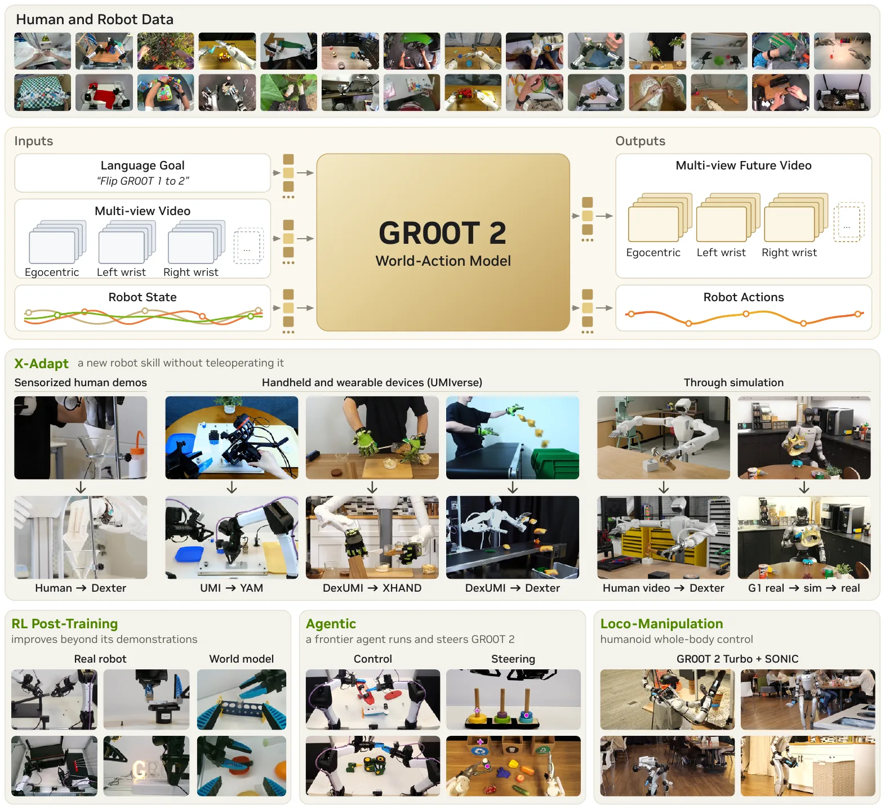
输入和输出。每个控制步，GR00T 2 收到：(i) 最多 4 路相机最近 0.8 秒的画面，5 fps，分辨率 224 × 320（通常是头部相机加左右腕各一）；(ii) 本体状态；(iii) 一句自然语言指令。它返回一段未来动作，以及每路相机预测的未来帧。机器人一边用自己的控制器执行这一段，一边计算下一段（附录 K.5）。
结构。从 Cosmos-Predict2.5-2B 视频扩散 Transformer 初始化。视频、状态、动作都变成同一条序列里的 token，由一个 2B 参数的 Transformer 处理：
Transformer 内部，视频 token 跨时间、跨相机互相注意；动作 token 注意全部视频 token，包括正在生成的未来帧，所以动作可以跟着模型想象的未来走。训练用流匹配，对未来视频隐变量和动作各一个损失。推理只需很少的去噪步：部署中视频 1–2 步、动作 2–4 步（附录 I.1）。
token。224 / 8 = 28，320 / 8 = 40，隐变量网格 28 × 40。Cosmos-Predict2.5 的 patch 是 2 × 2（本站 Cosmos-Predict2.5 页），得 14 × 20 = 280，和白皮书一致。Turbo 换成 Wan 2.2 VAE，空间每边压缩 16 倍：14 × 20 的隐网格，同样 2 × 2 patch 后是 7 × 10 = 70 个 token，正好是“4 倍更小的空间隐网格”。
帧数。0.8 秒、5 fps，如果首尾都算是 5 帧（−0.8、−0.6、−0.4、−0.2、0 秒）。附录 I.1 写部署时“每路相机 5 个历史帧”，对上。Wan VAE 时间上是“1 + 4k”结构，5 帧压成 1 + 4/4 = 2 个隐帧；附录 F.5 的 DreamDojo 也写“5 个录制帧编码成 2 个隐帧”。所以一路相机的历史是 2 × 280 = 560 个 token，4 路 2,240 个（我按 VAE 结构推的，白皮书没直接写历史 token 数）。未来帧的数量白皮书没给。
白皮书只说“a single 2B-parameter transformer”。推理还要跑冻结的文本编码器和视频 VAE 编码器，白皮书没给它们的大小，也没给整套模型的总参数。本站 Cosmos-Predict2.5 页核对过：它的文本编码器是 Cosmos-Reason1.1-7B（Qwen2.5-VL 结构）。公开分支 codex/n2-action-expert 里 GrootN2 的文本编码器文件（groot/core/training/models/n2/components/text_encoder.py）的文档字符串同样写 Cosmos Reason 1.1 7B。所以推理时实际加载的参数大约是 2B + 7B 级别的文本编码器 + VAE，这是按开发分支推的，正式发布版未核实。附录 K.5 提到显存紧张时可以把文本编码器权重卸到 CPU，也间接说明它不小；而且指令不变时文本特征可以复用（§4.6.1），所以它不在每次推理的关键路径上。
GR00T 2 Turbo：更省的世界-动作建模。GR00T 2 从工作站 GPU 服务时已经是实时的（Dexter 三路相机，GeForce RTX 5090 上预测一段动作的中位时延 153 ms，表 27），但人形全身操作要求更严：机器人移动时要快速反应保持全身协调，而且必须在机载的 Jetson AGX Thor 上跑。GR00T 2 预测的 token 大多是未来视频，视频冗余很大，所以 Turbo 保留 2B Transformer 和联合预测，只把视频 VAE 换成压缩更狠的 Wan 2.2 VAE（空间每边 8 倍 → 16 倍，隐网格小 4 倍），隐变量的输入输出投影随之适配，动作长度不变。Turbo 在 G1 的 Jetson Thor 上 124 ms 出一次预测，给 SONIC 规划全身动作。它在灵巧任务上不如 GR00T 2，但在双臂和灵巧任务上仍明显高于基线（§3.1、图 23）。
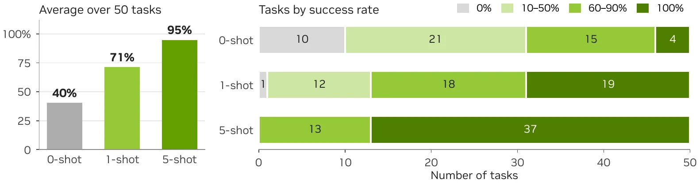
在新机器人上用 GR00T 2。把它的相机对应到头部和腕部视角，把动作表达成已支持的动作空间（或新增一个），再用目标任务的示范后训练。§3 展示要多少示范，以及怎样用人类或 UMI 示范完全替代遥操作。
本站 GR00T N1 页整理过 N1 到 N1.7。下表把 N1、N1.7 和 GR00T 2 并排；N1 / N1.7 一列来自那一页（论文、README、HF config 和权重文件头），GR00T 2 一列来自白皮书，标 [分支] 的来自开发分支，未核实是否等于发布版。
| 项目 | N1（2025-03） | N1.7（2026-04） | GR00T 2（2026-11 白皮书） |
|---|---|---|---|
| 模型类型 | VLA：VLM + 流匹配 DiT 动作头 | VLA：同左 | WAM：一个视频扩散 Transformer 同时生成未来视频和动作 |
| 初始化 | Eagle-2 VLM（SmolLM2 + SigLIP-2） | Cosmos-Reason2-2B（Qwen3-VL 结构） | Cosmos-Predict2.5-2B 视频生成模型 |
| 视觉进模型的方式 | SigLIP patch → 每帧 64 token | 原生分辨率 VLM token | 冻结 Wan 2.1 VAE 隐变量 → 每路相机每隐帧 280 token（Turbo：Wan 2.2，70） |
| 语言 | VLM 内部，取第 12 层 | VLM 内部，取第 16 层（检查点） | 冻结 Cosmos-Reason1 编码，交叉注意力读；[分支] Reason1.1-7B |
| 观测历史 | 1 帧，单路头部相机 | 1 帧 | 0.8 秒 @ 5 fps，最多 4 路相机，224 × 320 |
| 输出 | 16 步动作 | 40 步动作 | 动作块（Dexter / YAM 48 步 = 1.6 秒 @ 30 Hz；G1 Turbo 80 个 SONIC token = 1.6 秒 @ 50 Hz）加每路相机的未来帧 |
| 去噪步数 | 4（脚本） | 4 | 视频 1–2 步、动作 2–4 步；动作步可复用视频步的 KV |
| 具身适配 | 32 个槽位各一套 MLP | 同左 | 每具身一行状态 / 动作编码器和解码器；DiT 共享（附录 E.3） |
| 参数 | 2.19B（含 VLM 1.34B） | 3.14B（不计 lm_head） | 主干 2B；文本编码器和 VAE 另计（读者注 4） |
| 预训练数据 | 8,376 小时（人类视频 2,517） | 加入 2 万小时 EgoScale 人类视频 | 人类 402,730 + UMI 10,184 + 遥操作约 23,500 小时 |
| 训练阶段 | 一次预训练 + 单具身后训练 | 同左 | 三阶段预训练（单视角视频 → 多视角视频 + 动作 → 加重机器人数据）+ 任务后训练 + 真机 / 世界模型 RL |
| 人形 | GR-1 关节空间 | G1 等 | Turbo 输出 SONIC 全身运动 token，1 Hz 规划，50 Hz 解码 |
| 权重 / 代码 | 公开，非商业权重许可 | 公开，NVIDIA Open Model License | 未发布；项目页说代码 12 月；开发分支是评测许可 |
一句话：N1 系列让“懂语言的视觉模型”去条件化一个动作头；GR00T 2 让“会预测画面的视频模型”同时出画面和动作，语言只是外挂的条件。动作头本身的形式（流匹配、每具身 MLP 编解码、Beta 时间分布）延续了 N1 系列；开发分支里动作时间的 Beta(1.5, 1)、s = 0.999 设置和 N1 一样（configs/model/n2.py 的 noise_beta_alpha、noise_s 键，注释写“N1.7-style”）。
自己画的 · 11 幕 3D 框架动画
从数据到部署拆成 11 幕：总览（可切换 GR00T 2 / Turbo）、数据配比、视频怎样变成 token（当场算 token 数）、一条序列里谁看谁、三阶段预训练、联合去噪和 KV 复用、x-adapt 的“任务 + 具身”拼法、真机 RL（GRPO 的上下文记忆基线当场算）、智能体与视觉引导、Turbo + SONIC 三层栈、部署时延和 GearArena。下面嵌的是第 3 幕。
§3.1 零样本部署、少样本适配、长任务后训练；§3.2 跨具身迁移（目标机器人上没有该任务的遥操作示范）；§3.3 RL 让模型超过示范水平；§3.4 和前沿智能体配合做长任务；§3.5 人形全身操作。这里给主要结果，完整评测在附录。
新任务上零样本部署。在多种机器人的遥操作和 Human-1M 人类视频上预训练后，GR00T 2 能做目标机器人上从没见过的任务。测试平台是 Dexter（天机机器人 + Sharpa 手，双臂、两只 22 自由度灵巧手），50 个任务都不在 Dexter 自己的数据里，只出现在 YAM 夹爪数据、人类视频或两者中。只给语言指令、开箱即用，成功率 40%，50 个任务中 40 个至少成功一次（图 2）。多数失败是在原本正确的执行里某一步精度不够。这个能力随数据增长：预训练里人类视频越多，Dexter 新任务的零样本成功率越高，从无到全量翻了一倍多（图 10）。在 YAM 和 Dexter 更宽的零样本测试集上，GR00T 2 的成功率也领先 VLA 基线（表 2、表 3）。
几分钟机器人数据就能掌握。预训练模型已经知道怎么着手，所以很少的机器人数据就能补上差距：每任务 1 条遥操作示范把成功率提到 71%，5 条（不到 3 分钟机器人数据）提到 95%，50 个任务中 37 个每次都成功。这 50 个任务本身是从“5 条示范能学到至少 80%”的任务里选的，所以 5 条的成功率高部分是构造使然（白皮书自己写明）。每次适配是单张 RTX 5090 上约 30 分钟的 LoRA 微调，适配器合并进权重后，服务方式和预训练模型完全一样（附录 A.3）。
需要精度和灵巧的长任务。同样的预训练在长任务后训练上也有回报。YAM 上 6 个任务，从 24 个阶段端到端组装玩具车到把电线插进断路器，GR00T 2 平均成功 71.7%，VLA 和 WAM 基线最多 12.5%（表 1a、图 3）。灵巧手上 7 个任务（过滤粗盐、测维生素 C、换 GB300 内存条等），GR00T 2 平均 68.6%，GR00T 1.7 和 π0.5 最多 0.7%（表 1b）。作者称这种每一步都要灵巧和高精度的端到端长任务，对通用机器人模型是新能力。两个基准的全部任务见附录 A.1。
| 表 1a · YAM 长任务后训练 | GR00T 2 | GR00T 2 Turbo | π0.5 | GR00T 1.7 | FastWAM | MolmoAct2 | FLUX 3 Action | |||||||
|---|---|---|---|---|---|---|---|---|---|---|---|---|---|---|
| 进度 | SR | 进度 | SR | 进度 | SR | 进度 | SR | 进度 | SR | 进度 | SR | 进度 | SR | |
| Hot Wheels Assembly | 95.4 | 85.0 | 68.6 | 50.0 | 13.1 | 0.0 | 19.5 | 0.0 | 0.8 | 0.0 | 1.5 | 0.0 | 0.5 | 0.0 |
| Toy Tractor Assembly | 63.8 | 45.0 | 54.5 | 40.0 | 8.4 | 0.0 | 3.6 | 0.0 | 1.9 | 0.0 | 1.1 | 0.0 | 2.4 | 0.0 |
| Toy Plane Assembly | 71.0 | 70.0 | 63.5 | 55.0 | 24.0 | 10.0 | 11.0 | 0.0 | 10.0 | 0.0 | 13.5 | 0.0 | 10.0 | 0.0 |
| iPhone into Box | 89.0 | 65.0 | 91.0 | 55.0 | 67.5 | 5.0 | 49.5 | 15.0 | 17.0 | 0.0 | 38.0 | 0.0 | 19.5 | 0.0 |
| Fixed-Pipe Fittings | 70.0 | 70.0 | 90.0 | 90.0 | 30.0 | 30.0 | 35.0 | 35.0 | 45.0 | 45.0 | 35.0 | 35.0 | 0.0 | 0.0 |
| Wire into Breaker | 98.5 | 95.0 | 100.0 | 100.0 | 30.0 | 30.0 | 17.0 | 0.0 | 18.5 | 5.0 | 10.0 | 10.0 | 8.0 | 0.0 |
| 平均 | 81.3 | 71.7 | 77.9 | 65.0 | 28.8 | 12.5 | 22.6 | 8.3 | 15.5 | 8.3 | 16.5 | 7.5 | 6.7 | 0.0 |
| 表 1b · 灵巧手长任务后训练 | GR00T 2 | GR00T 2 Turbo | GR00T 1.7 | π0.5 | ||||
|---|---|---|---|---|---|---|---|---|
| 进度 | SR | 进度 | SR | 进度 | SR | 进度 | SR | |
| Make Shipping Label | 78.0 | 60.0 | 73.0 | 60.0 | 41.0 | 5.0 | 16.0 | 0.0 |
| Flashlight Battery Replacement | 86.0 | 55.0 | 49.0 | 15.0 | 34.0 | 0.0 | 41.0 | 0.0 |
| GB300 Memory | 96.0 | 85.0 | 81.0 | 50.0 | 43.0 | 0.0 | 55.0 | 0.0 |
| Truck Assembly | 98.0 | 65.0 | 43.0 | 5.0 | 0.0 | 0.0 | 0.0 | 0.0 |
| Crude Salt Filtering | 98.0 | 85.0 | 88.0 | 65.0 | 17.0 | 0.0 | 14.0 | 0.0 |
| Vitamin C Test | 86.0 | 75.0 | 67.0 | 25.0 | 9.0 | 0.0 | 14.0 | 0.0 |
| Microscope | 64.0 | 55.0 | 33.0 | 20.0 | 10.0 | 0.0 | 9.0 | 0.0 |
| 平均 | 86.6 | 68.6 | 62.0 | 34.3 | 22.0 | 0.7 | 21.3 | 0.0 |
表 1 照录原文。进度（Prog.）是所有试验的平均任务进度，SR 是成功率，都在 0–100。YAM 每格最多 20 次试验。加粗是原表标的每行最好值。原表注：Truck Assembly 上 GR00T 2 和 Turbo 用的是修订过、更容易的一组开局；在原开局上 GR00T 2 成功 7/20，进度 94.0。
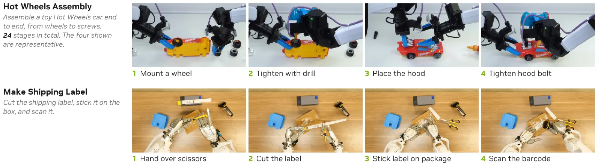
复算。逐行求平均：YAM 的 GR00T 2 进度 81.28、SR 71.67，Turbo 77.93、65.00，π0.5 28.83、12.50，GR00T 1.7 22.60、8.33，FastWAM 15.53、8.33，MolmoAct2 16.52、7.50，FLUX 3 Action 6.73、0.00；灵巧手 GR00T 2 86.57、68.57，Turbo 62.00、34.29，GR00T 1.7 22.00、0.71（只有 Make Shipping Label 一格 5.0，5 / 7 = 0.71），π0.5 21.29、0.00。全部和平均行一致。§5 说 Turbo “在 YAM 上掉 6.7 点、灵巧任务上掉一半”：71.7 − 65.0 = 6.7，68.6 / 2 = 34.3，对。
Truck Assembly 的开局不同。GR00T 2 和 Turbo 在“修订过、更容易”的开局上测（65% / 5%），基线没有注明换开局，应是原开局。按原开局 GR00T 2 是 7 / 20 = 35%，那么灵巧手平均成功率是 (60 + 55 + 85 + 35 + 85 + 75 + 55) / 7 = 64.3%，不是 68.6%；对基线的领先幅度几乎不变，但这一行不是同条件比较。
Turbo 在 YAM 上有三个任务反超 GR00T 2。iPhone into Box 进度 91.0 对 89.0，Fixed-Pipe Fittings 90 / 90 对 70 / 70，Wire into Breaker 100 / 100 对 98.5 / 95。每格最多 20 次，单任务 SR 的二项标准误在 50% 附近约 ±11 点，所以 20 点以内的差别不宜细读。
GR00T 2 Turbo。Turbo 主要为边缘设备设计，但保留了大部分能力。零样本时，它在 YAM 上接近 GR00T 2，在 Dexter 上排第二（表 2、3）。后训练后成功率有所下降，YAM 65.0%、灵巧手 34.3%，仍明显高于基线。图 23 是任务进度和推理时延的权衡。
GR00T 2 能在没有任何任务专用遥操作示范的情况下，在一台机器人上学会新任务。图 4 汇总了四种教法：动捕手套、DexUMI 外骨骼、手持 Gripper UMI，以及一段人类视频经仿真扩增。
对手套和 Gripper UMI 这两种和机器人具身不同的来源，有一个统一配方：不需要机器人的示范说明“做什么任务”，目标机器人上与任务无关的“自由操作”（play）数据说明“这个身体长什么样、怎么动”，跨具身预训练把两者接起来。没有这种预训练，同样的后训练数据效果差很多（附录 B.1.5）。手套、DexUMI、Gripper UMI 三种情况下，基线都用和 GR00T 2 相同的数据后训练（图 27、表 4、表 5）。有遥操作示范时，它们和人类数据互补而不是替代（附录 B）。
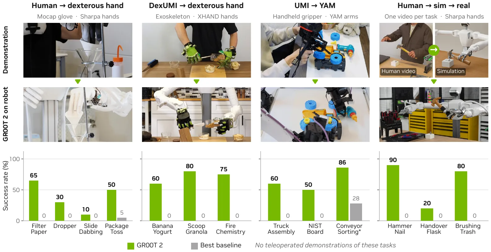
迁移到灵巧手。两种设备不用机器人就能记录灵巧示范：戴在手上的动捕手套，以及复刻机器人手关节和接触面、并按机器人触觉格式记录指尖力的 DexUMI 外骨骼。手套示范用头部和腕部相机录制，离线重定向到机器人手，和目标机器人的 play 数据一起训练（附录 B.1.3）。在装 Sharpa 手的双臂机器人上，这个配方学会了精细的化学实验任务，以及遥操作做不出来的快速传送带抛掷。其中一个任务上，完全没用遥操作示范的 GR00T 2 超过了“没有跨具身预训练、但给 10 条示范”的基线（图 27）。DexUMI 把无机器人采集扩展到依赖力和柔顺性的任务：GR00T 2 从力记录里学会在运动之外预测要施加的力，手的刚度随这个力调整。只用 DexUMI 示范训练，GR00T 2 在一个长的做早餐任务里切香蕉、拧开罐子，还能划火柴点灯，每个任务成功 60–80%，GR00T 1.7 和 π0.5 一次也没完成（图 15、表 5）。DexUMI 示范也能迁到外骨骼没有复刻的手：重定向到 22 自由度 Sharpa 手后，显微镜载玻片擦拭成功 60%、传送带包裹挑选抛掷 65%，两个基线都是 0（表 6）。
迁移到平行夹爪机器人。用手持 Gripper UMI 录示范：机器人式的腕部相机和开口宽度编码器让数据直接是机器人格式。部署对象 YAM 的相机、夹爪、工作空间都和 UMI 不同。GR00T 2 把 UMI 示范和与任务无关的 YAM play 数据一起训练，后者提供具身；再把 UMI 的腕部画面对齐到 YAM 的相机几何、动作对齐到 YAM 的动作空间（§4.4.2）。每任务 41–75 条示范、不用遥操作，长任务玩具组装和电路板拆解成功 60% 和 50%，传送带上分拣 86% 的物品；基线两个长任务一次都没完成（表 4）。只用 10–20 条示范也能端到端成功。采集和机器人解耦，人类速度的动作让动态技能变得可学。
一段人类视频经仿真迁移。从一段人类视频重建物体和手-物体运动，在仿真里训练 RL 专家，再用视觉随机化后的专家轨迹微调 GR00T 2。得到的策略零样本迁到真机，钉钉子 10 次成功 9 次；GR00T 1.7 和 π0.5 在真机任务上一次都没完成（附录 B.5）。
监督微调（SFT）给了 GR00T 2 操作技能，但接触丰富的任务对对齐和物理交互里的小误差仍很敏感。作者在 SFT 策略之上做真机 RL，用任务级成功反馈提高可靠性。
四个精密任务：管件拧装（表 1a 的任务，但从更难的姿态开始）、手指定位（把夹爪手指上两根 3 mm 销插进底座孔）、网线插入、充电器插入（图 5）。方法有三：用 GRPO 直接优化 GR00T 2；再用 GRPO 成功轨迹做“GRPO 诱导的自模仿”；对照残差 RL，即冻结 GR00T 2、学一个小的修正策略（§4.1）。
GRPO 诱导的自模仿在四个任务上分别达到 88%、98%、94%、96%，SFT 之后是 40–76%。残差 RL 也有提升，但不更新 GR00T 2 本身（图 5）。这些技能可以接进智能体执行，做更长的任务（§3.4）。
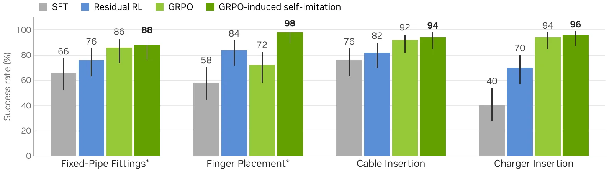
每格 50 次，所以 66% = 33 次、86% = 43 次。附录 F.4 说 GRPO 相对 SFT 的提升在充电器和管件上显著（双侧 Fisher 精确检验，5% 水平），网线（38 → 46）和手指（29 → 36）不显著。我复算的双侧 p 值：管件 33 vs 43 是 0.034，手指 29 vs 36 是 0.21，网线 38 vs 46 是 0.054，充电器 20 vs 47 远小于 0.001，和原文判断一致。网线 0.054 只是刚过线。自模仿相对 GRPO 的提升白皮书没做检验；手指 36 → 49 次差别大，其余三个任务只差 1–2 次。
95% Wilson 区间：88%（44 / 50）约 [76%, 94%]，98%（49 / 50）约 [90%, 100%]。所以“88–98%”这类数字在 50 次试验下仍有 ±6 到 ±10 点的不确定度，这也是 §5 讨论“95% 和 99% 要多少次试验才分得开”的背景（读者注 12）。
前沿多模态智能体和 GR00T 2 各管一半：智能体决定做什么，拆解长任务、监控进度、写代码；GR00T 2 决定怎么做，执行难以编程的接触丰富操作。智能体当 System 2，把 GR00T 2 当工具调用，旁边还有相机、状态和 CaP 工具（图 6）。它从四方面帮 GR00T 2：增强（需要记忆或显式推理的任务，智能体跑任务级程序、每个操作步调用 GR00T 2；加上 RL 后训练，GR00T 2 在 RoboCasa365 和 RoboDojo 排行榜上都排第一，表 19）；协助（真机上看着 GR00T 2，发现掉零件或卡住就用 CaP 技能修复状态再交还控制，三个杂乱装配任务接近全成功，图 7）；引导（除了语言，还能用视觉目标通过 WAM API 引导）；改进（一个自主研究智能体发现了 RL 配方的基础，§4.1、附录 F.2）。作者的建议是：操作交给 GR00T 2，给智能体提供任务结构、成功检查和一小套恢复技能（附录 G.1）。
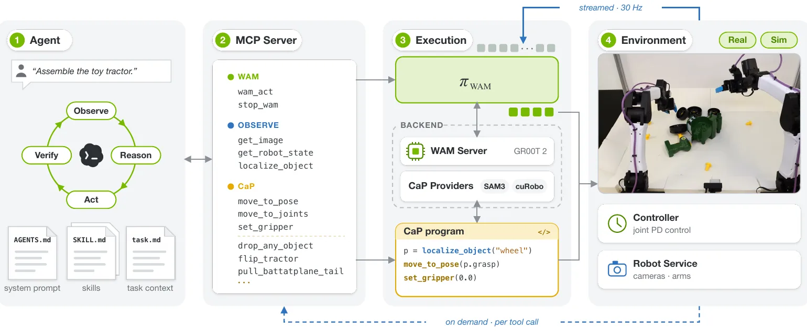
用代码即策略做技能组合和恢复。仿真里用 ASPIRE 发现任务级程序，把 GR00T 2 调用和感知、推理、CaP 原语组合起来；System 2 监控执行，遇到意外失败时在线调用 CaP 恢复。加上 RL 后训练，RoboCasa365 成功 88.0%、RoboDojo 75.8%（只在三个官方布局库之一上测），截至 2026-11-06 是两个排行榜上的最高值（表 19）。
真机上 GR00T 2 仍是主执行者，智能体监控进度、在需要时调用 CaP 技能做定点恢复。压力测试用 YAM 上的三个长装配任务：玩具飞机、玩具拖拉机、Hot Wheels 车（附录图 55），条件比表 1a 难得多：表 1a 每次从摆好的零件开始，这里每次试验前由人把所有零件随手倒在桌上，零件互相压着、姿态任意，后训练里从没见过；每种方法 100 次。机器人要找零件、按顺序装、用玩具电钻拧紧、从自己的错误中恢复，一次试验通常 5–14 分钟。所以这些数衡量的是稳健性，不能和表 1a 直接比。例如 Hot Wheels 在表 1a 固定布局下成功 85%，零件倒乱后 SFT 策略只成功 23 / 100。DAgger 把三个任务提到 84、71、78 次；再让智能体修复掉落零件和卡住、然后交还 GR00T 2，混合执行达到 98、97、97 次（图 7）。
在 §3.3 的 RL 精密技能基础上，智能体把它们组合成更长的任务：连续把 5 根网线插进交换机，或把 5 个充电器插进指定插座（附录图 55）。CaP 负责定位、抓取和送到预插入位姿，RL 训练过的 GR00T 2 做精密插入，智能体协调顺序、验证每次插入、必要时调用 CaP 恢复。同一框架里把 SFT 策略换成 RL 后的 GR00T 2，整任务成功从 12 / 20 提到 19 / 20（网线）、从 2 / 20 提到 20 / 20（充电器）（图 7）。
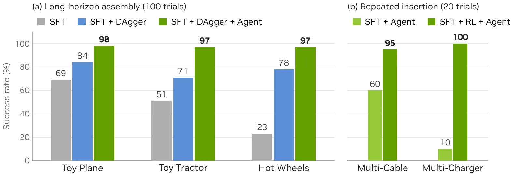
智能体引导。智能体当 System 2、GR00T 2 当 System 1 时，关键问题是两者之间的接口，即每一步智能体给 GR00T 2 发什么，作者称之为 WAM API。语言最自然，但难以落到场景里：GR00T 2 得自己找出指令说的是哪个物体、哪个位置。所以作者在语言之外加了图像空间的抓取点和释放点：点直接指明操作哪个物体、放到哪里、用哪只手。GR00T 2 经过“中期训练”学会以这些点为条件，点被画成手臂配色的标记叠在相机画面上，和语言指令一起输入。点的监督信号从已有示范里夹爪和手的状态自动生成，不需要额外人工标注或新的机器人示范。中期训练后，GR00T 2 可以被智能体生成的点引导，不需要按任务微调策略。执行时 GR00T 2 生成动作，智能体监控进度并修改引导（前进、重试或结束）。智能体零样本使用，每回合一次对话（附录 G.2）。
评测分两档、两种具身（YAM 和 Dexter）：短时程基准只测几步的指令跟随，长时程基准要在两台机器人上完成整个垃圾分类任务，另在 YAM 上做电路板拆解压力测试。短时程指令按指代类型组织（名称、空间、序数、数量、手臂、排除某物体，以及动作和抓法）。比较三种设置：GR00T 2 收原始指令；GR00T 2 收智能体的语言引导；点条件的 GR00T 2 收语言引导加视觉标记。视觉引导在两档都最高：短时程基准平均 76.8%，长时程整任务成功平均 53.3%；只用智能体语言引导是 44.2% 和 1.7%（图 8）。
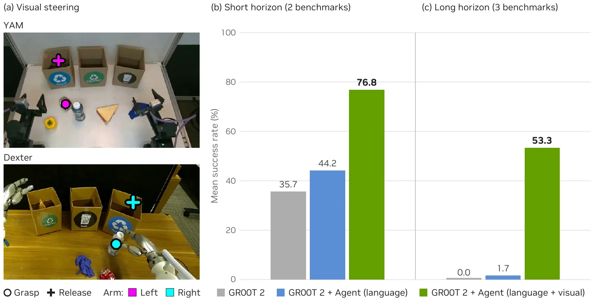
短时程：(83.3 + 70.3) / 2 = 76.8，(55.6 + 32.8) / 2 = 44.2，(41.7 + 29.7) / 2 = 35.7。长时程：视觉引导 (17/20 + 3/10 + 9/20) / 3 = (85 + 30 + 45) / 3 = 53.3，语言引导 (0 + 0 + 5) / 3 = 1.7。YAM 短时程的 83.3% 又是表 23 八个指代类别的平均：(100 + 100 + 94.4 + 66.7 + 77.8 + 100 + 72.2 + 55.6) / 8 = 83.3；语言引导 55.6、原始指令 41.7 也都对上。要注意 Dexter 短时程用的是“更早的模型实现”，长时程 YAM 的三种设置也不是全在同一工作站、同一操作员下测的（附录 G.2 自己写明）。
即便有这些提升，抓取点和释放点也说不清所有要求。标记只给空间目标，不给完整的操作策略：比如侧放物体、倒、舀，仍靠语言和 GR00T 2 学到的技能。更丰富的引导（目标 6D 位姿、目标图像、基于可供性的标记）可以扩展这个接口。
双足人形的移动操作对基础模型提出额外要求：机器人每个动作都要保持平衡，需要 50 Hz 的全身控制。作者把 GR00T 2 Turbo 和学习型全身控制器 SONIC 配在一起（图 9）：Turbo 根据相机和本体感知决定下一步做什么动作，SONIC 把期望动作变成关节指令。两个模型都在人形机器人上机载运行（附录 H.1）。
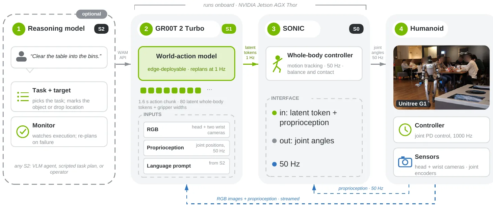
全身移动操作。以 SONIC 的全身运动隐变量接口作为动作空间，Turbo 协调人形全身做移动和操作。四个真实世界长任务：爆米花服务（一只手拿杯子，另一只手舀和倒）、清理桌面（反复抓各种物体、走到垃圾桶、放进去）、地面拾取（弯腰捡各种物体）、全身清洁（从地上捡起杯子、脚踩毛巾擦洒出的液体、跪下把毛巾捡起扔掉）。爆米花服务上 Turbo 48 次全部成功（每次要装满两杯），用相同示范和控制器的 GR00T 1.7 是 83.3%。四个任务的详细结果在附录 H.2 和表 25。
移动操作的仿真加真机。全身遥操作数据很贵，所以作者设计了以动作为中心的 real-to-sim 管线：把每条录下的动作放到多种场景里变成示范。在仿真里通过 SONIC 重放这条动作，保持动作不变、去拟合桌子和物体的摆放，使机器人恰好完成抓取，再把成功的回放渲染到多样的房间里。这些示范增加了视觉多样性，同时保留真机的控制器和动作表示（附录 H.3）。在分布外的桌面抓放上，WAM 比 VLA 更会用这些仿真数据：只用真机数据时两者都是 6.7%，加仿真联合训练后 Turbo 到 63.3%，GR00T 1.7 到 40.0%（各 30 次，表 26）。在仿真里复用真实动作，不额外采遥操作也能提高泛化。
本节讲关键设计决策，细节在附录：§4.1 训练（预训练到 RL 后训练），§4.2 数据，§4.3 真机上怎样比较检查点，§4.4 无遥操作学习的采集设备和管线，§4.5 仿真和评测，§4.6 实时部署，§4.7 训练和数据基础设施。
预训练。从预训练好的 Cosmos-Predict2.5-2B 视频扩散 Transformer 初始化。要把视频模型变成通用机器人策略，它既要懂物理交互怎么发展，也要把这些动态和跨具身的动作联系起来。训练分三个阶段：先让视频模型适应具身交互，再联合学习视频和动作，最后加重机器人数据。这样既用上人类经验的广度，又把最终模型聚焦到机器人执行上。
得到的模型是下面任务适配和 RL 后训练的起点。白皮书没有给各阶段的步数、批量、学习率或数据配比（读者注 23）。
RL 后训练。探索时，把 GR00T 2 确定性的动作去噪换成 CPS（Coefficients-Preserving Sampling），只在动作去噪里加噪声，视频去噪保持确定。策略更新用 GRPO 风格的组相对目标，但基线还“记住”每个上下文过去的回报，这样一组里全成功或全失败时仍有学习信号。这个配方的基础是 AutoRL 发现的：一个研究智能体在仿真里迭代算法约 35 天（附录 F.2）。另两种互补方法：GRPO 诱导的自模仿（用 GRPO 的成功轨迹微调 GR00T 2），以及残差 RL（冻结 GR00T 2，学一个小的修正策略，附录 F.1.2）。不用真机的 RL：用初始策略的回放把 DreamDojo 世界模型适配到目标任务上，用学到的完成检测器当奖励（附录 F.5）。一套在线基础设施协调机器人交互、训练和评测，中断后保留经验（附录 F.3）。
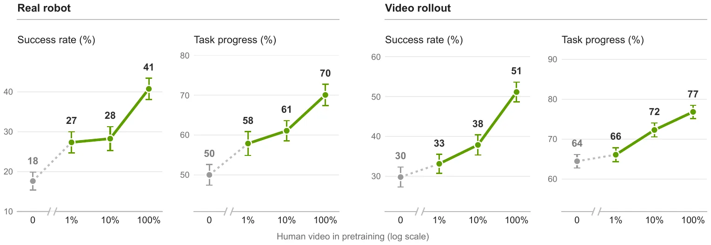
预训练数据有三类，各有分工：Human-1M 的人类第一视角视频覆盖面广，机器人表现随它的量增长（§4.2.1）；UMI 提供可扩展、聚焦任务、和机器人兼容的动作表示（§4.2.2）；遥操作把模型落到具身专用的行为和可执行动作上（§4.2.3）。数据引擎 Flora 在这个规模上给人类和机器人回合标子任务（§4.2.4）。附录 C 写各来源的采集、处理和筛选，§4.7.3 写原始数据到训练格式的管线。
对世界-动作模型来说，人类第一视角经验提供了覆盖物体、可供性、任务、场景和环境所需的动作和视觉多样性。GR00T 2 用了从 Human-1M（其中 10 万小时以 Human-1M-100K 公开）筛出来的 402,730 小时、约 1,375 万个回合，超过 51,500 名采集者、12.3 万个场景。Human-1M 是 NVIDIA 整理的约 100 万小时熟练人工劳动的第一视角数据，带密集语言标注、SLAM 和 3D 手部关键点，既有“野外”也有受控工作室的示范（附录 C.1）。
实验室内人类数据。为了直接迁移到目标机器人，其中有 3,000 小时按更严格协议采集的“与机器人对齐”的工作室数据：第一视角和腕部相机的视角和机器人匹配（缩小视觉差距），示范速度和机器人匹配（缩小动作差距）。这部分是示范风格的，每个任务用可重复的策略演示数百次（附录 C.1.3）。
人类数据的规模实验。同样的结构、训练配方和后训练遥操作数据，只改预训练里 Human-1M 的比例：0%、1%、10%、100%。训练长度按 epoch 控制：1%、10%、100% 三个模型从一个共享的人类视频预训练检查点出发，各自在自己那份数据上预训练约 0.5 个 epoch；0% 模型完全跳过人类视频预训练。所以 0% → 1% 这一步还包含共享阶段，而 1%、10%、100% 之间只差数据份额和对应的训练长度。这里一个 epoch 指把每条 30 Hz 轨迹的每一步过一遍。然后每个模型都在同样的 Dexter 遥操作数据上训练 3 个 epoch（同时和自己那份人类数据联合训练）。在 72 个 Dexter 任务上测：22 个是指令类型新颖的分布外任务，50 个是 Dexter 训练数据里没有的任务。四种设置下性能都随人类数据增长（图 10）：真机成功率从 18% 升到 41%，视频回放成功率从 30% 升到 51%。机器人数据不变时，把全部多视角人类视频加进预训练，新任务的真机成功率翻了一倍多，而且所有指标在 100% 处都没有饱和，作者据此认为更多人类视频还会继续有用（附录 C.1.5）。
“翻一倍多”：41 / 18 = 2.3 倍。但 0% 和其余三档的差别混了两件事：共享的人类视频预训练阶段，和各自的份额（附录 C.1.5 自己写明）。只看 1% → 10% → 100%：真机成功率 27 → 28 → 41，前一步在噪声内（附录给 +0.9 点），全部提升都在 10% → 100%（+12.5 点，95% 区间 4.2–21.3）。每档只训练一次，误差线只反映回合间的波动，不反映训练间的波动。三档人类视频对应 0.87k、8.1k、84.4k 小时（附录 C.1.5，是经过时间步过滤后的多视角部分），不是 402,730 小时的 1% / 10% / 100%。“没有饱和”是外推，要在更大规模上验证。
UMI-10K 用手持 UMI 设备录制（附录 E），提供 94.2 万个质检合格回合、10,184 小时双臂平行夹爪示范，覆盖 2,897 个任务。数据很分散：单个任务的时长占比都不超过 1.2%。指令涉及 356 个物体类别和 49 种技能，共 2,798 种技能-物体组合，包括遥操作很少采到的动态、铰接和可变形物体操作。很多任务成对出现“反事实”指令（同一场景只差一个属性），用来提高指令跟随（附录 C.2）。
跨具身的遥操作示范提供机器人动作监督。预训练混合里共 2.35 万小时、116 万个回合：YAM 双臂平行夹爪 1.87 万小时（含 ABC-130k），Sharpa 手双臂 2.9 千小时，Wuji 手双臂 1.3 千小时，Unitree G1 人形 275 小时，以及 DROID（论文）的单臂 Franka Panda（附录 C.3，表 11）。
预训练用密集的带时间戳语言标注来做语言条件、过滤和重新配比；RL 后训练还需要过程奖励，策略评测需要结果标签。在 Human-1M 和机器人语料的规模上，人工太慢，前沿 API 模型太贵。所以用自家数据引擎 Flora：三个模型分别找动作边界、给每个动作写一句自足的祈使句指令、生成结果 / 密集 / 基于评分细则的奖励。在 WGO-Bench 上，Flora 的时间分割 F1 是 50.3，第二名 GPT-6 Astra 是 46.0（附录 C.4）。
每个 GR00T 2 候选都要在真机上的盲测 A/B 对决里赢得位置，结果累积成一个排行榜，告诉团队哪个检查点更好、好多少、有多确定。
为什么要对决。真机评测贵，但结果可以累积；前提是几个月的评测能互相比较。绝对成功率做不到：它随工作站、操作员、硬件和日期漂移，一次评测的分数不能和另一次比。盲测 A/B 试验在同一场景、同一操作员、几分钟内按随机顺序跑 2–4 个检查点，漂移是共享的，在比较里抵消。真机排行榜 GearArena 汇总所有这类试验。截至本文快照，它有 195 个 A/B 评测活动、16,044 个打过分的机器人回合、11,767 个两两比较，来自 2026 年 7–11 月 10 台 YAM 工作站、20 多名操作员，给 71 个检查点评分。
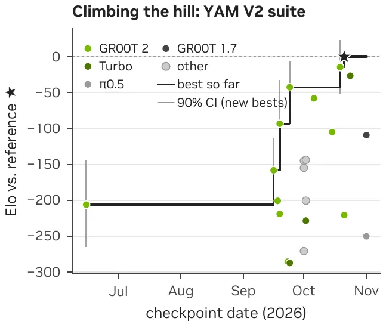
从第一性原理设计任务。先问机器人应该会什么，再挑能暴露这些能力的任务，最后在真实检查点上“校准”：所有检查点都能完成的任务归档，没有检查点能完成的任务搁置，等模型赶上来，因为两者都区分不了任何东西。最后形成两个套件：第一个是通用和灵巧操作任务，当前这个是 38 个语言跟随和运动基元任务，都用部分得分的评分细则。
从对决到地图。一次试验里每对检查点构成一次比较，由操作员的显式排名决定（同分算平局）。对全部比较联合拟合 Bradley-Terry 模型，得到每个检查点的 Elo。每次对决里每个任务权重相同，置信区间用按任务（而不是按试验）重采样的 bootstrap。每个新检查点先和 A/B 参照（排行榜上最好的检查点）比，这样所有评分都在一个连通的尺度上（附录 D）。
它带来了什么。GR00T 2 比 π0.5 高 236 Elo（95% 区间 171–325），对应 80% 的期望胜率；比 GR00T 1.7 高 95 Elo（区间 50–148），两者在 500 次 bootstrap 重采样里全部成立（表 13）。在侧重语言跟随和运动基元等基础技能的 YAM V2 套件上（表 2），GR00T 2 Turbo 和 GR00T 2 在统计上分不出高下，而每次推理快约 3 倍（RTX 5090 工作站上每次服务调用 52 ms 对 171 ms，图 23）。四个月里当前套件上最好的检查点涨了 206 Elo，相当于今天的最好检查点对 6 月那个有 77% 的胜率（图 11）。仿真评测和盲测 A/B 拟合出的 Elo 的 Pearson 相关是 0.93（§4.5.2）。
表 12 两个 YAM 套件：活动 78 + 122 = 200，有 5 个活动跨两个套件，去重后 195；回合 6,373 + 9,671 = 16,044；比较 5,732 + 6,035 = 11,767；评过分的检查点 45 + 26 = 71（白皮书没说两个套件之间有没有重复的检查点）。和正文一致。
Elo 差 d 对应的期望胜率是 1 / (1 + 10−d/400)：236 → 0.796，95 → 0.633，206 → 0.766，100 → 0.640，和正文的 80%、63%、77%、“100 Elo 对应 64%”一致。表 13 里 Turbo（★）比 GR00T 2 高 14 Elo（区间 −28 到 +58），P = 0.72，所以“分不出”是对的；但排行榜第一名是 Turbo 而不是“发布的 GR00T 2”，这一点白皮书在附录 D.6 里写了。
GR00T 2 能从不用该机器人录制的示范学会这台机器人上的技能（§3.2）。下面四种来源里，示范都负责说明任务。人类动捕和 Gripper UMI 的设备和机器人不同，所以由目标机器人上与任务无关的数据说明具身，跨具身预训练把两者接起来。DexUMI 外骨骼复刻了它对应的那只机器人手，所以在那只手上不需要机器人 play 数据（§4.4.3）。采集和转换先去掉能去掉的差异：相机几何（附录 C.1.3）、运动学和动作语义（附录 B.1.2），剩下的由 GR00T 2 弥合。因为它联合预测未来视频和动作，用这类示范加机器人数据训练后，它预测的是机器人自己的手和手臂在做示范的任务（图 13、图 14）。
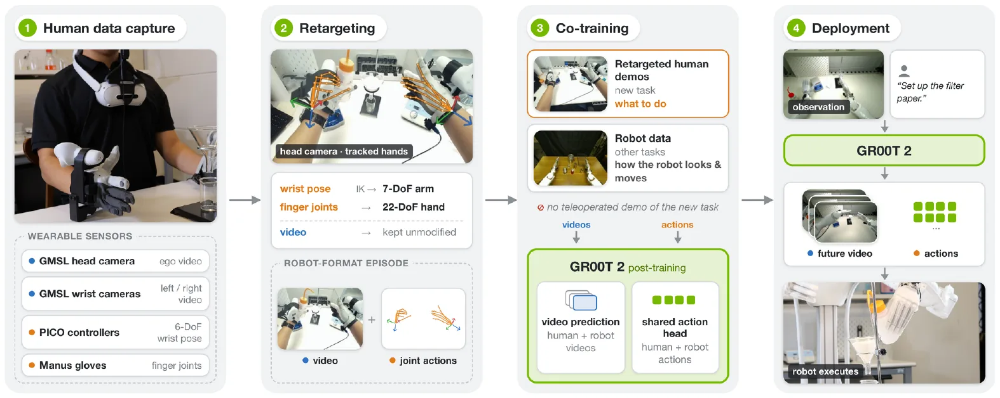
人戴着位置和机器人对齐的头部、腕部相机，动捕手套，以及每只手腕上的 6 自由度跟踪器完成任务（图 12）。头部相机放在机器人头部相机的位置，于是手腕在机器人底座坐标系里有了锚点；一个闭式逆运动学求解器离线把它们重定向到 7 自由度手臂和 22 自由度 Sharpa 手，让机器人指尖落在人的指尖上，保留捏取几何。视频不改。这个求解器每秒约 11.8 万次双臂求解，也用来做遥操作，采集目标机器人上与任务无关的 play 数据。一个 play 数据池和人类示范 1 : 1 采样，服务所有任务（附录 B.1.1–B.1.3、C.3.1）。对只有人演示过的任务，GR00T 2 预测的是机器人自己的手完成每一步（图 13）。
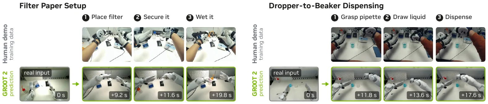
Gripper UMI 是 UMI（论文）路线的手持平行夹爪，用的是作者开源的 GEAR UMI：机器人式腕部相机和开口宽度编码器让人在没有机器人的情况下，以机器人坐标记录示范（附录 E.1），它也产出了 UMI-10K 预训练语料（§4.2.2）。如果机器人末端复刻了手持设备的相机和手指，感知和夹爪差异天然就没有了（附录 E.2）。对 YAM 这种现成机器人，三者都不同，三个发现让迁移可行：(1) 和与任务无关的 YAM 数据联合训练，补上外观和场景差距，GR00T 2 会预测 YAM 自己的手臂在做手持演示的任务（图 14）；(2) 模型能吸收外观差异，但吸收不了几何差异，所以要把鱼眼腕部画面重新渲染成 YAM 腕部相机的样子，视场和朝向大致对上就够；(3) 手持动作重新表达成 YAM 的动作空间，用 YAM 自己的动作头解码。有跨具身预训练时，每任务 41–75 条手持示范就能有高成功率，10–20 条已能端到端成功。决定需要多少示范的是最稀少的那个子技能，而不是任务长度（附录 B.2、E.3）。
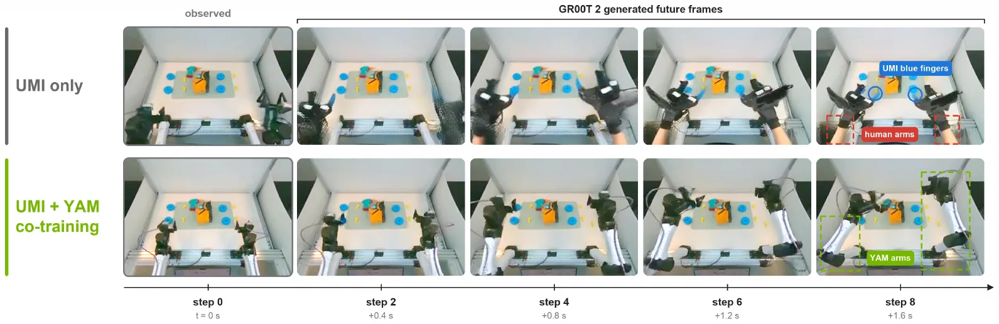
DexUMI（论文）把无机器人采集从平行夹爪扩展到五指手。作者用开源的 GEAR DexUMI：可穿戴外骨骼复刻目标手 XHAND1 Pro-U 的运动学，16 个自由度一一对应机器人关节，接触面、腕部相机安装位置和触觉格式也一致（附录 E.4）。两个选择让 GR00T 2 适配这类数据：第一，外骨骼在训练里处理而不是改视频，绿色部件按颜色分割，在条件帧和预测帧里一致地随机化外观，省掉了以前“把每条示范在机器人手上重放再修补”的步骤（附录 E.6）；第二，参照 Adaptive Compliance Policy，把指尖力投影成手部关节力矩加进动作。执行时预测的力矩降低每个关节的刚度并偏移其位置目标，让手施加预测的力，同时对位置误差稳健（附录 B.3）。因为外骨骼复刻了手，不需要机器人 play 数据：只用 DexUMI 示范后训练，GR00T 2 就能双手做长时程的工具使用（图 15）。
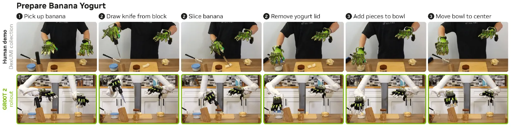
DexUMI 示范也能转给外骨骼没有复刻的手。对 22 自由度 Sharpa 手，先用记录的关节角算出 XHAND 的指尖位置，再用遥操作的闭式求解器重定向（附录 B.1.2）。和 Gripper UMI 一样，把每帧 DexUMI 腕部画面变换到 Sharpa 腕部相机的视角（两者装的位置不同）。示范在机器人动作空间里、用它的归一化统计，和 Sharpa play 数据联合训练（附录 B.4）。
手内重定向、用力的工具使用这类接触丰富的技能，WAM 仍难学，恢复行为也难演示。仿真里的 RL 可以从一段人类视频补上这些（图 16）。NVIDIA Video to Data 管线重建物体资产和手、物体的运动；一个基于状态的 RL 专家用 CHORD 训练（系统辨识后的机器人动力学、随机化物理），学会跟踪物体运动、完成任务。它的回放变成基于图像的训练数据：加随机动作脉冲和瞬移扰动，让数据里有纠正动作；在 Isaac Lab 里用随机外观、光照和相机标定渲染。GR00T 2 每任务用 1,500 条这样的回合微调（带训练时实时分块，§4.6.2），不用任何真机机器人数据就部署到真机（附录 B.5）。
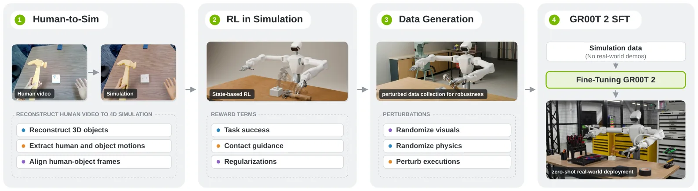
仿真对 GR00T 2 有两个作用：真实任务的数字孪生物理仿真，作为快速、可重复、经过校准的真机评测替身，贯穿整个开发（§4.5.1、4.5.2）；用学到的世界模型做的神经仿真，由录制的回放适配而来，作为 RL 的环境（§4.5.3）。另外在五个公开仿真基准上评测（§4.5.4）。
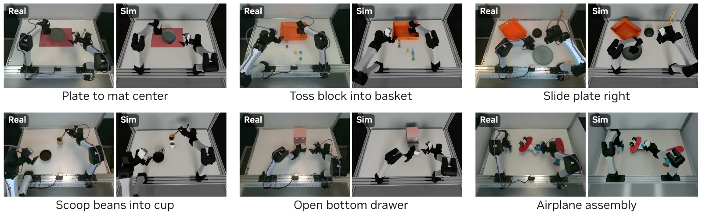
作者在仿真里重建开发 GR00T 2 用的真实任务，从零样本评测的通用操作到多阶段装配，涉及刚体、铰接物体、可变形材料和颗粒（图 17），目标是既复现视觉布置，也复现决定任务成败的物理交互。环境由智能体辅助的工作流构建：智能体用真机视频、3D 扫描、照片等输入，配合 SimFoundry 的工具做场景和资产重建（几何、外观、碰撞），人类专家审核并反馈。环境跑在 Isaac Lab Arena 上，物理用 Newton 和 MuJoCo Warp 求解器。验证方式包括资产的抓取和跌落测试、重放真机示范，以及装配环境的无机器人装配测试（附录 J.1）。人形另有一条以动作为中心的管线，把遥操作的全身动作变成仿真示范（§3.5）。
用真机数据训练的策略直接在这些环境里评测，不做仿真微调或联合训练。25 个 YAM 任务、14 个 GR00T 2 检查点两边都测（真机每任务 5 次盲测 A/B，仿真每任务 10 次）：任务进度的 Pearson 相关 0.93，成功率 0.92，Bradley-Terry Elo 0.93，达到“完美模拟器在同样试验次数下能达到的相关”的 95–99%（图 18、附录图 65）。从 DROID 场景重建的环境上，5 个通用检查点分别是 0.98、0.95、0.97。有了这种校准，仿真成了开发工具：预训练期间用仿真跟踪中间检查点，把最终候选缩到三个再上真机比较；数据管线的改动（序列打包、混合分片采样）先用小规模训练加闭环仿真验证再采用；推理设置先在仿真里筛。仿真还揭示了推理设置对动作平滑度的影响，后来在真机上确认；也用来开发智能体在飞机装配上的恢复技能（§3.4）。真机评测仍是每个设计决策的最终验证（附录 J.2），但仿真大大提高了开发速度和迭代频率。
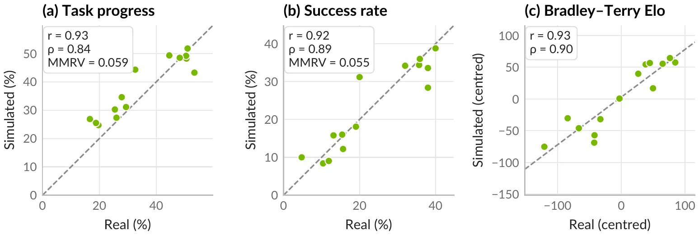
MMRV（平均最大排名违背）出自 SIMPLER，本站有 SIMPLER 精读和 Real-to-Sim 评测精读，可以对照它们的相关性数字。
物理仿真要逐个任务重建，学到的世界模型可以直接从录下的机器人交互里建。作者把 DreamDojo（从预训练视频先验初始化的世界模型）变成 GR00T 2 采 RL 经验的环境（§4.1）。DreamDojo 先在多视角机器人回合上中期训练：YAM 8,310 条（约 227 小时，含失败和恢复）和 DROID 57,773 条（约 273 小时），各路相机拼成一张视频画布联合预测；再用初始策略在每个任务上几百次成功和失败的回放适配到目标任务。闭环里，GR00T 2 预测一段动作，世界模型预测执行后的多视角画面，这些画面成为 GR00T 2 的下一个观测。世界模型在隐空间里保留历史，用最后下达的动作代替机器人状态。因为一个回合串起很多短预测，世界模型会以自己不完美的输出为条件；RoboLab 用的那个模型在训练时给条件隐变量加噪声，让它见过这种历史。奖励来自紧凑的视频分类器（检测任务成功），用 VLM 提议、人类审核的标签离线训练。用稀疏的成功奖励，因为密集进度分标注贵，而且容易被策略钻空子。在这个环境里做 RL，GR00T 2 在四个真实任务（插销、插进指定试管孔、把面包放到两种杯子上，附录图 52）上的平均成功率从 43% 提到 72%，在十个 RoboLab 任务上从 51% 提到 71%，都是在学到的环境之外测的（附录 F.5）。
在五个公开基准上用官方任务集、回合数和成功判据评测，每个基准用一个从同一预训练模型后训练的检查点（附录 J.3）。基线取自 2026-11-06 的官方排行榜，GR00T 1.7 除外（作者自己重训和评测）。在公开排行榜的 VLA 和 WAM 策略里，GR00T 2 在单臂移动操作基准 RoboCasa365 上最高（67.2%，比之前最好的高 2.8 点），在双臂基准 RoboDojo 上最高（35.5%）。在 RoboLab 和 MolmoSpaces 上排第三（47.4%）和第二（45.1%），这两个只用真实 DROID 数据后训练，所以是零样本 real-to-sim。人形基准 G1 Factory 上 84.7%，GR00T 1.7 是 69.4%。加上 RL 后训练和智能体执行，GR00T 2 在 RoboCasa365 和 RoboDojo 排行榜上排第一（后者只测了三个官方布局库之一，§3.4、表 19）。
部署需要及时的预测、连续的动作和高效的任务完成，既在工作站 GPU 上，也在算力、内存、功耗都有限的边缘硬件上。对世界-动作模型，这些比 VLA 难：GR00T 2 要编码多相机视频、迭代去噪视频和动作隐变量，在作者的设置里推理时延更高。对策是加速推理（§4.6.1）、用训练时实时分块在剩余延迟下平滑执行（§4.6.2）、以及按阶段变换动作块，让任务完成速度超过示范（§4.6.3）。
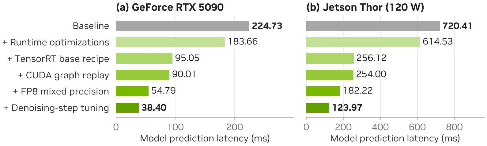
GR00T 2 通过客户端-服务器接口服务：机器人客户端发送相机历史、机器人状态和指令，服务器返回一段动作，客户端缓冲并按控制器频率执行，同时请求下一段（附录 K.5）。服务器先去掉重复计算：指令不变时复用文本特征，预先算好时间步条件，只更新动作的去噪步复用最近一次视频步的注意力 KV。再把视频编码器和 Transformer 编译成 TensorRT 引擎、用 CUDA graph 重放；对支持的检查点，在机器人观测上校准后对部分投影层和前馈层用 FP8；在成功率和平滑度允许时减少去噪步。服务路径上用流式和预取把视频编码移到预测请求之前。对 G1 上的 Turbo，TensorRT 编译在两种 GPU 上都是最大的单项降幅（图 19）。合起来，中位预测时延比同一检查点的 eager BF16 执行快 2.9 到 7.2 倍（表 27）。在 DGX Station GB300 上，GR00T 2 在 Dexter 上 48 ms、YAM 上 54 ms 出预测（视频编码已预取）。G1 上 Turbo 在 RTX 5090 上 38 ms、机载 Jetson Thor 上 124 ms，大约每秒规划一次 1.6 秒的全身动作 token，由 SONIC 以 50 Hz 执行（图 9）。和 eager BF16 的数值比较能发现预测动作的变化，但预测误差本身不能说明闭环任务成功。部署决策靠真机评测，同时看成功率、完成时间和动作质量（附录 I.1）。
加速后仍有延迟，机器人在算下一段时必须继续动。等每次预测会打断动作；不考虑延迟的异步执行会在相邻两段之间产生跳变。训练时实时分块（RTC）让每次预测以已经承诺执行的动作前缀为条件。作者发现以干净前缀为条件改善了连续性，但在较短延迟下降低成功率，所以用带噪前缀 RTC：微调时给条件前缀加高斯噪声，意在减少对上一次计划的依赖，同时保留平滑衔接需要的上下文；推理时以干净的已承诺动作为条件。在已经后训练好的策略上只做 5 千步短微调，就拿到大部分连续性收益，不用重跑整个训练流程。在 RoboDojo 八个精密任务上模拟推理延迟：同一权重下，带噪前缀 RTC 把成功率从异步执行的 32.8% 提到 34.8%（160 ms 延迟）、从 15.0% 提到 21.4%（320 ms），160 ms 时峰值指令 jerk 降 69%，320 ms 时跨块 jerk 的 95 分位降 87%；干净前缀 RTC 在 160 ms 时把成功率降到 30.7%（附录 I.2）。
连续执行和低延迟本身并不提高任务完成速度，它仍受示范节奏限制。作者按任务阶段给动作块重新定时：把任务拆成伸手、抓取、搬运、拧螺丝等有语义的阶段，各阶段能承受的加速不同。一个智能体通过评估加速后的回放、根据失败修改，搜索每个阶段的速度表。部署时，一个轻量的子任务预测器（用智能体生成的阶段标注训练）从当前观测预测每个动作块跨越哪些阶段，按速度表对动作块重新定时（图 20）。重新定时改变了相邻块的时间关系，所以用时间对齐和跨块 jerk 平滑保持执行连续（附录 I.3）。
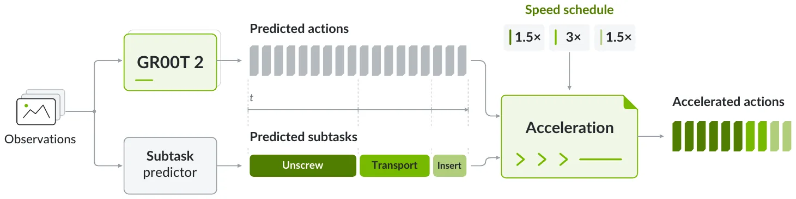
训练 GR00T 2 是在人类、UMI 和机器人来源的多相机视频上跑联合视频-动作模型。基础设施要提供足够的显存和算力，把解码好的视频窗口送到每块 GPU 而不拖慢同步训练，还要把原始录制在预训练语料的规模上转成训练格式。
在 NVIDIA GB300 NVL72 系统上预训练，看重显存容量、Tensor Core 吞吐和集合通信加速。每块 Blackwell Ultra GPU 最多 288 GB HBM3e、8 TB/s 带宽、约 2.5 PFLOPS 稠密 BF16/FP16；一个机柜 72 块 GPU 组成一个 NVLink 域，每块 GPU 1.8 TB/s 双向带宽，NVLink SHARP 把归约卸载到交换机；机柜之间走 RoCE，每块 GPU 一张 800 Gb/s ConnectX-8 SuperNIC。集群共 2,016 块 GPU、28 个机柜，主预训练用了其中 1,024 块，其余同时跑别的实验。训练用 DeepSpeed ZeRO-2 同步数据并行：每块 GPU 有完整权重，梯度和优化器状态分到各 rank，BF16 梯度同步和计算重叠。模型不需要流水并行，显存能放下参数、本 rank 的优化器分片和每卡 batch 16 的激活。每步有一部分时间花在冻结的特征编码器上；视配方，运行时用 TensorRT 做视频编码、融合文本编码器算子、保留掩码规则的高效注意力核、PyTorch 编译和激活重算，还能在当前 batch 做梯度同步和优化器更新时编码下一个 batch 的特征。效率按整步衡量，硬件计数器得到的 Overall FLOP Utilization 只作参考，是否保留一个改动看实际耗时和模型质量（附录 K.4）。
训练数据存在基于 Lance 列式格式的 LanceDS 里：每个数据集有步表（状态、动作、标注、质检信号）、回合表和媒体表（原视频）。Lance 的版本管理在增加回合或修改标注、质检信号时保留旧快照，新质检列可以加而不重写旧列。训练时每个数据集钉住一个快照，数据、归一化统计和元数据一起可复现。所有数据集共用一套 schema，配方里的具身标签在读取时选出该具身的状态 / 动作分组、相机、标注、归一化统计，以及模型的具身专用投影层。质检规则不在加载路径上执行，而是离线按每个训练样本读取的时间窗口（观测和动作目标）评估，存成“合格起点”的视图，每个新快照重建并附带在保留样本上算的归一化统计。采样由每个 rank 的确定性种子按需生成，跨分片混合，使每个全局步符合配方的数据比例。batch 准备分三个异步阶段：视频分片从共享存储预取到节点本地 NVMe；解码帧（三视角分片基准里约占准备时间的 90%）；增广、整理、从锁页内存拷到 GPU。变长 token 打包减少填充。在 1,024 块 GB300 上 100 个稳态预训练步、读 25 个数据存储（1,560 万条回合记录、462 亿个时间步）时，加载器每秒交付约 12,000 个样本窗口，平均暴露等待 0.37 ms（99 分位 0.61 ms），占实测步时的 0.049%（表 35）。打包填满了 32,768 token 行的 94.5%。加载器改动先在闭环仿真里验证再采用（§4.5.2）。
白皮书没给预训练的总步数、总 GPU 小时、学习率、各阶段数据配比。能推的只有：1,024 块 GPU × 每卡 batch 16 = 全局 16,384（如果没有梯度累积），和 N1 的预训练 batch 恰好相同。
但表 35 的几组数放在一起有矛盾：每卡每秒 11.7 个样本窗口（1,024 × 11.7 = 11,981，对上“约 12,000”）；暴露等待 0.37 ms 占步时 0.049%，推出步时约 0.37 / 0.00049 ≈ 755 ms；那么每卡每步约 11.7 × 0.755 ≈ 8.8 个窗口，不是 16。可能的解释是“每卡 batch 16”指另一种配方，或 batch 按打包后的 32,768 token 行计、和“样本窗口”不是同一单位（K.4 说“Depending on the recipe”）。白皮书没说清，未核实。
原始人类示范录制要先转成训练格式：取回、解码、缩放多相机视频；变换动作记录，必要时重定向到训练用的手部表示；在时间上对齐观测、动作和标注，打包成带索引的回合分片。管线每月处理 PB 级输入，单个生产作业用近 1 万个 vCPU。难点是这些转换共享输入、争抢有限的工作存储：一段长视频可能含多个回合，一个回合可能依赖多个相机文件和单独存放的动作记录，共享输入要等最慢的使用者完成才能回收，一个慢的转换或上传会卡住无关输入的取回、让 worker 空转。所以管线把每个输入的生命周期和执行进度绑定：文件从对象存储直接流到处理节点，不经共享文件系统，转换在整批取回前就开始；按每个节点的存储预算（已驻留文件、待传输、输出余量）准入新输入，把工作派给持有输入的节点；一个回合在输出上传后才释放对输入的占用。中断后丢失的输入走同样的准入路径重建，持久检查点让恢复的作业复用已完成的转换和已发布的分片。三次生产作业（100 节点 × 96 vCPU）每小时处理 722–780 示范小时，28 分钟内发布第一个训练分片，转换期间 CPU 平均利用率 97.8%；五次中断作业里，已完成转换时间的 92.4% 不需要重做，重启后 2.4–5.3 分钟恢复发布（附录 K.6、表 36）。
GR00T 2 是一个世界-动作模型：一个 2B 参数 Transformer，联合预测未来观测和机器人动作，在人类第一视角视频、手持 UMI 示范、夹爪臂 / 灵巧手 / 人形的遥操作上预训练。预测未来给这些来源一个共同目标，包括没有机器人动作的人类视频。50 个对机器人来说新的灵巧任务上零样本 40%、5 条示范 95%（§3.1）；不用遥操作示范就能学会机器人任务（§3.2）；真机 RL 把接触丰富技能提到 88–98%（§3.3）；有纠正数据和前沿智能体时，杂乱开局的长装配至少 97% 成功（§3.4）；Turbo 在人形上机载运行并指挥学习型全身控制器（§3.5）。
作者从开发中总结了三点：(1) 机器人学到的很多东西不必来自机器人数据，新任务成功率随人类视频增长翻倍且没饱和，具身由目标机器人的任务无关数据说明、任务由示范说明；(2) 可靠性来自互补机制而不是只靠预训练：预训练给广度，纠正示范和 RL 补精度和接触，智能体提供长时程的记忆、验证和恢复；(3) 进展依赖测量：盲测对决和校准过的仿真把接近的比较变成决策。
开放问题按系统部分分组：
作者的收尾：一个预训练来预测物理世界怎样展开的模型，能从人类经验学习、跨具身迁移技能、作为智能体系统的操作层。上面的开放问题有一个共同结构：怎样把稀缺资源（机器人时间、人的时间、机载算力）变成可靠的物理能力，并以足以据此行动的置信度去测量结果。
脚注写的是双侧两比例 z 检验、显著性 0.05、功效 80%。每组样本量 n = [z0.975√(2p̄(1−p̄)) + z0.8√(p1(1−p1) + p2(1−p2))]² / (p1 − p2)²，z0.975 = 1.960，z0.8 = 0.842。p1 = 0.95、p2 = 0.99、p̄ = 0.97：n = 284.3，取整 285，对上。p1 = 0.99、p2 = 0.999：n = 1,058.9，即“1,000 多”，对上。对照：表 1 每任务最多 20 次，§3.3 每格 50 次。
附录占了 PDF 的第 38–135 页。下面每节先写关键做法和数字，长表、任务清单、超参放在默认折叠的块里。
A.1 基准任务。两个后训练基准（表 1）的任务各画了四个代表阶段：YAM 六个任务（iPhone 装盒、玩具飞机、玩具拖拉机、Hot Wheels 共 24 阶段、管件拧装、电线接断路器），Dexter 七个任务（显微镜、粗盐过滤、维生素 C 测试、GB300 内存条更换、贴快递单、手电换电池、卡车组装）。图 23 把表 1a 每个模型的平均进度画在“RTX 5090 上每次服务调用时延”的对数轴上，GR00T 2 和 Turbo 在帕累托前沿上。
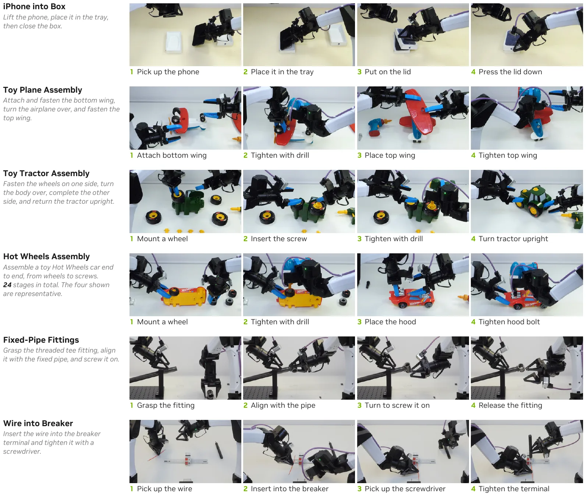
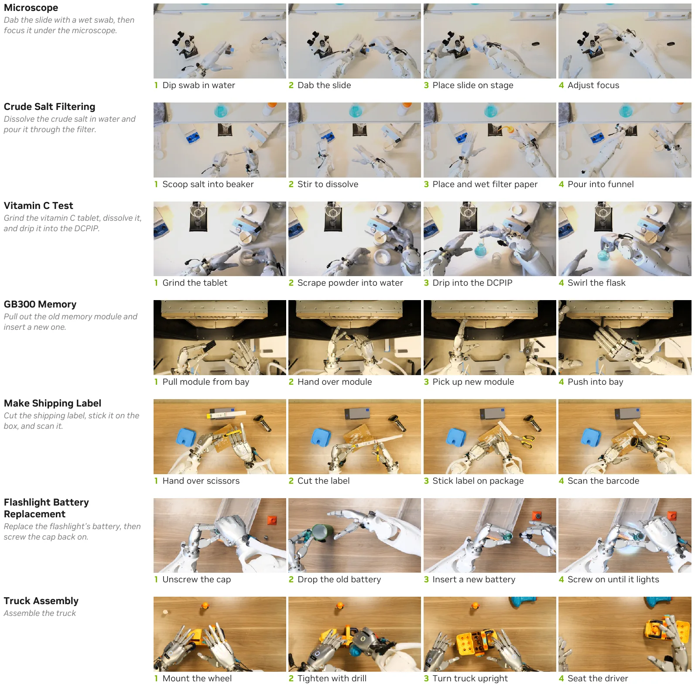
A.2 零样本泛化。YAM V2 基准不做任务后训练，报告三个未见评测池：语言跟随 14 个、运动基元（简单）10 个、运动基元（中 / 难）14 个任务（π0.5 用的是在本域数据上适配过的检查点）。Dexter 零样本覆盖 71 个任务（49 个灵巧操作、22 个用颜色、大小、序数、否定、空间关系、计数、指定目标考语言落地的分布外指令任务），每个模型每任务 3 次；四个模型在同一场次里交替跑，判成功的操作员不知道是哪个模型，进度由 VLM 根据头部和腕部视频打分。
| 表 2 · YAM V2 零样本 | GR00T 2 | Turbo | GR00T 1.7† | π0.5 | MolmoAct2 | |||||
|---|---|---|---|---|---|---|---|---|---|---|
| 进度 | SR | 进度 | SR | 进度 | SR | 进度 | SR | 进度 | SR | |
| 语言跟随（14） | 45.2 | 31.4 | 41.2 | 31.0 | 47.7 | 30.4 | 21.5 | 17.9 | – | – |
| 运动基元：简单（10） | 54.1 | 36.6 | 53.6 | 33.0 | 47.5 | 27.5 | 16.9 | 14.2 | – | – |
| 运动基元：中 / 难（14） | 40.6 | 29.9 | 33.2 | 19.7 | 13.6 | 5.4 | 1.8 | 0.0 | – | – |
† GR00T 1.7 是初步结果。各任务、各模型的试验次数不同，包含仍在进行的评测；组内各任务等权。MolmoAct2 一列原表全是“–”（没有结果）。
| 表 3 · Dexter 零样本（71 任务 × 3 次） | GR00T 2 | Turbo | GR00T 1.7 | π0.5 |
|---|---|---|---|---|
| 进度 | 72.9 | 61.4 | 43.3 | 56.2 |
| 成功率 | 49.8 | 36.6 | 18.3 | 26.3 |
A.3 Dexter-50：跨具身零样本和少样本。Dexter 是两只 7 自由度手臂加两只 22 自由度 Sharpa 手。少样本时，同一检查点对每个任务用 1 或 5 条 Dexter 遥操作回合适配：在 Transformer 每个线性层上训练 rank-32 LoRA，冻结文本编码器、视频 VAE、动作和状态头以及所有预训练权重；适配器用和预训练相同的联合视频-动作流匹配损失。每条回合切成 100 个均匀分布的训练窗口，按冻结模型在每个窗口上的损失成比例采样，让更新集中在抓取、插入这类难的阶段。所有任务同一组超参、不逐任务调；一次运行在单张 RTX 5090 上约 30 分钟；训练后把适配器合并进基础权重。零样本 40%（50 个里 40 个至少成功一次，4 个每次都成功，例如卸碗架、拆魔方堆，这些技能只在平行夹爪机器人或人类视频里见过）；1 条 71%；5 条 95%，37 个任务 100%，包括零样本从没完成过的倒空袋子、转懒人转盘、打开三脚架。多数零样本失败是步骤对了、但新手做不了其中一步（掀茶壶盖、打开抽绳袋），1 或 5 条 Dexter 回合就能补上。
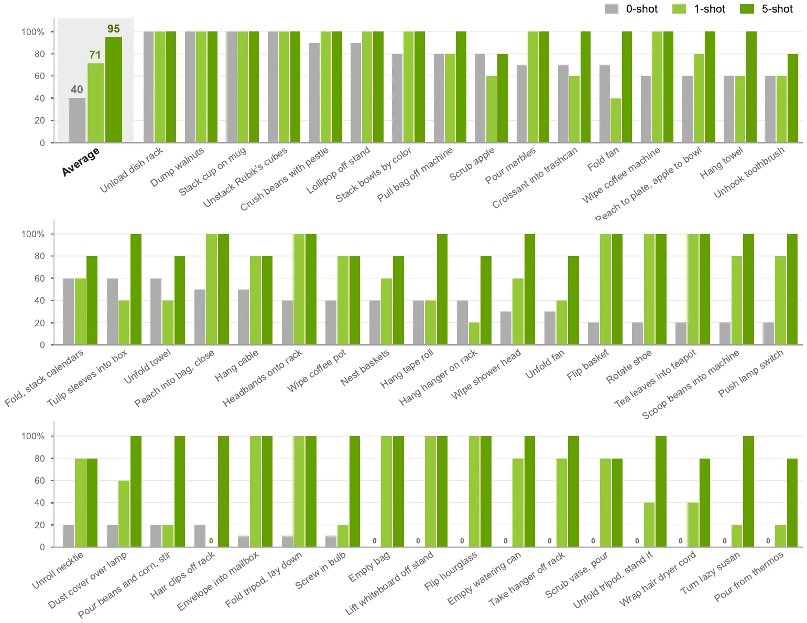
B.1 人 → 天机 + Sharpa。任务示范全部来自戴采集设备的人，策略跑在两只 7 自由度手臂、两只 22 自由度 Sharpa 手的天机机器人上。差距集中在手：外观（演示时相机看到人手，部署时看到机器人手）、运动学（Sharpa 手更大、关节结构不同）、动力学（人以自然速度动，遥操作做不到）。三个组件弥合：录与机器人对齐的视角（B.1.1）、几何重定向（B.1.2）、和与任务无关的 play 数据联合训练（B.1.3）。
白皮书把 GR00T N1.7 写作“GR00T 1.7”，引用的是 NVIDIA 2026a（N1.7 的发布）。但不同实验里它的身份不同：表 1、表 4–7、表 25 是“从自己的预训练模型出发、用 GR00T 2 的数据配方后训练”；表 2 标“初步结果”；B.1.5 说对照的是“在同样数据上预训练、同样配方后训练的 VLA”，读起来像是用 GR00T 2 的预训练数据重新预训练过的 N1.7 结构，白皮书没有再解释；附录 J.3 说仿真基准上的 GR00T 1.7 是“我们自己重训和评测的”。所以这些 GR00T 1.7 数字不能和 Isaac-GR00T README 里 N1.7 的自报分数（本站 GR00T 页）放在一起比。比如 RoboCasa365 上的 22.1%（表 30）和 README 里的“RoboCasa 70.8%”是两个不同的基准（365 任务的移动操作 vs 24 个 Panda 原子任务），不矛盾。
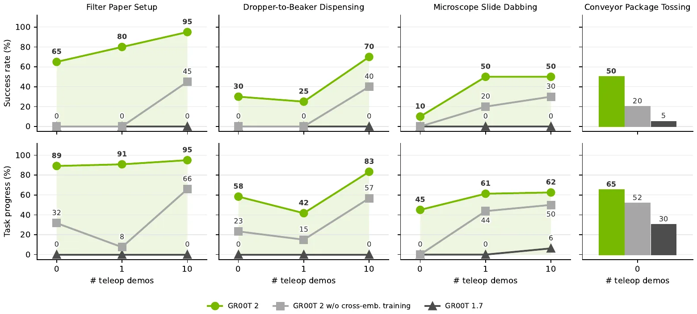
B.2 UMI → YAM。情景：一台双臂夹爪机器人要在没见过的工厂工作台上拆一个电子组件，没有它的遥操作数据。用 Gripper UMI 以自然速度演示，机器人式腕部相机和宽度编码器以机器人坐标记录。难点是手持设备和 YAM 在感知（镜头和视角都不同）、执行（YAM 的手臂、夹爪、控制空间在手持数据里没有对应）、环境（野外采集，部署在没出现过的机器人工作单元）三方面同时不同。解耦带来三点好处：通用（同一批示范迁到不同现成机器人）、能力（人类速度和自然接触反馈让抛掷这类动态技能可学）、效率（加任务不需要机器人、工作单元或受训操作员，几十分钟准备就能在野外录）。示范预算也小：约 20 条手持示范仍能端到端完成 Toy Dumptruck Assembly（10% 成功、进度 81），传送带分拣仍有 84%，10 条也有 70%。三个设计选择（共享动作头、腕部视角对齐、与任务无关的 YAM 数据联合训练，UMI : YAM 通常 0.6 : 0.4）各补一个差距，消融在附录 E.3。评测三个任务（图 29），每个 41–75 条手持示范；策略预测 48 步、执行 30 步。
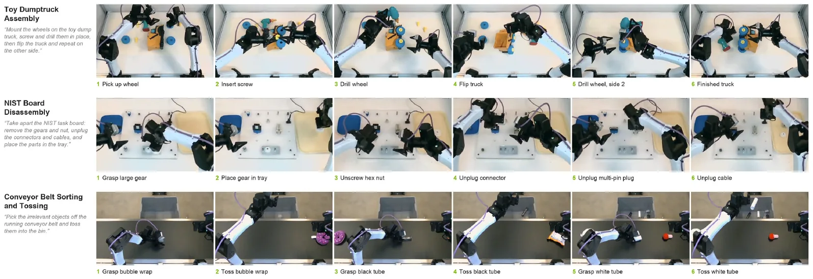
| 表 4 · UMI → YAM 零遥操作 | π0.5 | LingBot-VA | GR00T 1.7 | GR00T 2 无 UMI 预训练 | GR00T 2 | |||||
|---|---|---|---|---|---|---|---|---|---|---|
| 进度 | SR | 进度 | SR | 进度 | SR | 进度 | SR | 进度 | SR | |
| Toy Dumptruck Assembly | 0.0 | 0.0 | 0.0 | 0.0 | 0.0 | 0.0 | 84.0 | 20.0 | 96.0 | 60.0 |
| NIST Board Disassembly | 43.0 | 0.0 | 28.0 | 0.0 | 50.0 | 0.0 | 65.0 | 0.0 | 86.0 | 50.0 |
| Conveyor Belt Sorting and Tossing | – | 0.0 | – | 0.0 | – | 28.0 | – | 34.0 | – | 86.0 |
| 平均 SR | 0.0 | 0.0 | 9.3 | 18.0 | 65.3 | |||||
两个长任务各 10 次；传送带任务按 50 个物品是否分拣成功计，SR 是分拣比例，没有进度分。“无 UMI 预训练”从一个更早的、混合里没有 UMI 数据的预训练检查点出发。
平均 SR：GR00T 2 (60 + 50 + 86) / 3 = 65.3，GR00T 1.7 28 / 3 = 9.3，无 UMI (20 + 0 + 34) / 3 = 18.0，对上。表注自己说明这个平均把“每个物品的分拣率”和“每次试验的成功率”混在一起，只能看大小，不是一个有统一含义的成功率。另外附录 E.2 写明，“无 UMI 预训练”的检查点来自更早的一次预训练，样本更少、机器人混合不同、模型也有小差异，所以差距不全来自 UMI 数据。两个长任务每格 10 次，60% 对 20% 是 6 对 2 次。
B.3 DexUMI 用于复杂、长时程、动态的后训练。GEAR DexUMI 复刻 XHAND1 Pro-U 的运动学、接触面和相机安装，每个关节、指尖力和画面都有机器人对应。和原版 DexUMI 不同：原版用力敏电阻测力、用 SAM2 和 ProPainter 从视频里去掉外骨骼；GEAR 版 16 个自由度一一映射到机器人关节，用机器人手自己的触觉格式测三轴指尖力，视频不改。只用 DexUMI 示范（不用机器人 play 数据）从 GR00T 2 预训练检查点后训练，在两只 7 自由度手臂加两只 XHAND1 Pro-U 的天机上测三个双手任务：做早餐的两半 Prepare Banana Yogurt 和 Scoop Granola（一个策略学两半、分开评），以及短而动态的 Fire Chemistry（划火柴、点烧瓶下的灯、把火柴放进水里）。基线 GR00T 1.7 和 π0.5 各从自己的预训练模型出发，用 GR00T 2 的数据配方（同样动作空间、归一化、提示）后训练。
| 表 5 · DexUMI 后训练 | 子任务 | π0.5 | GR00T 1.7 | GR00T 2 |
|---|---|---|---|---|
| Prepare Banana Yogurt | 1 香蕉放到砧板 | 0.00 | 0.10 | 0.95 |
| 2 抽刀、切、揭盖 | 0.00 | 0.00 | 0.90 | |
| 3 香蕉块进碗、碗移到板上 | 0.00 | 0.00 | 0.60 | |
| 整体 | 0.00 | 0.00 | 0.60 | |
| Scoop Granola | 1 拿罐、交手、拧盖 | 0.00 | 0.05 | 0.90 |
| 2 拿铲、舀燕麦 | 0.00 | 0.00 | 0.80 | |
| 3 罐递回、放下 | 0.00 | 0.00 | 0.80 | |
| 整体 | 0.00 | 0.00 | 0.80 | |
| Fire Chemistry | 1 拿火柴和盒、划着 | 0.00 | 0.10 | 0.80 |
| 2 点灯、火柴放进水 | 0.00 | 0.00 | 0.75 | |
| 整体 | 0.00 | 0.00 | 0.75 |
数字是到达每个子任务终点的试验比例。每任务试验次数表里没写；0.95、0.05 这类数说明至少 20 次（我的推断）。
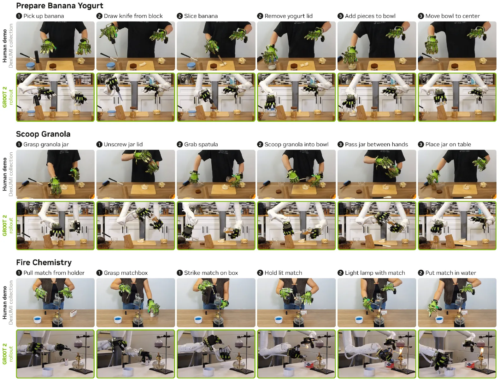
力和柔顺性（式 (1)–(3)）。只有位置标签不够描述人的操作策略，还需要施加的力和用的柔顺性：力帮助形成并保持想要的接触，合适的柔顺性对位置误差甚至外力扰动更稳健。作者采用 Adaptive Compliance Policy（ACP），离线把 DexUMI 的力 / 运动数据转成刚度和虚拟目标标签，加进策略的动作向量，并针对灵巧手做了两处改动：原 ACP 用笛卡尔位姿，在三到五个关节一根的手指上会给出执行不了的动作，所以改在关节空间定义（位置目标、虚拟目标、刚度）；不同硬件的测力方式不同，统一用关节力矩表示，把笛卡尔力投影回关节。XHAND1 Pro-U 上，每根手指的力 \(f_{i,t}\) 由指尖触觉估计（指数滑动平均、0.1 N 截断），再经雅可比投影到驱动关节：
\(q_t\) 是手指关节构型，\(B\) 把驱动关节映射到完整构型。按力矩大小缩放每个关节随时间变化的刚度：
\(k_p\) 是关节默认位置增益，\(s_{\rm acp}\) 在关节力矩从 0.1 升到 0.4 N·m 时从 1.0 线性降到 \(s_{\min}=0.3\)：受力越大越软，直觉是大力只能来自刚性接触，此时机器人要更柔顺。策略同时预测位置和力，在线算出刚度后更新位置设定点，即 ACP 的虚拟目标：
手以算出的刚度 \(K_{\rm eff}\) 跟踪虚拟目标，就能施加预测的力。结果：Prepare Banana Yogurt、Scoop Granola、Fire Chemistry 分别 60%、80%、75%，GR00T 1.7 和 π0.5 一个都没完成（表 5）。
B.4 DexUMI → 天机 + Sharpa。外骨骼复刻的是 16 自由度的 XHAND，部署却在 22 自由度 Sharpa 手上：运动学不同；腕部相机采集时装在 DexUMI 手腕、评测时装在 Sharpa 手腕，头部相机采集时由人戴着、评测时固定在机器人上；画面里有外骨骼和人的手臂。两个任务：Microscope Slide Dabbing（同 B.1）和 Conveyor Package Selection and Tossing（从传送带上的混合物品里挑出包裹抛进箱子，其他物品不能碰）。每个任务 100 条 DexUMI 回合，和不含目标任务的 Sharpa play 数据联合训练。记录的关节角和指尖力属于 XHAND，式 (1) 的力标签用 XHAND 的雅可比算，对 Sharpa 不适用，所以这里只训练关节位置，手在导纳模式下用固定增益跟踪。指尖重定向：用 XHAND 正运动学算出指尖位置，当作动捕手套的指尖读数，交给 B.1.2 的闭式求解器，两只手在拇指-食指捏取点对齐；拇指、食指、中指、无名指对准目标，小指跟随无名指方向。腕部视角重投影：重定向后 Sharpa 腕部相机和 DexUMI 腕部相机相差约 31°；手眼标定两个相机安装，再把每帧 DexUMI 腕部画面经过捏取点深度处的正平行平面重投影到 Sharpa 腕部相机，训练时随机旋转和缩放腕部视图吸收残差。转换后的示范用机器人的 62 维状态和动作，从 45 Hz 重采样到 30 Hz，赋予机器人的具身标签，共享它的动作编解码器和归一化统计；与 play 数据的采样比，载玻片 75 : 25，包裹 50 : 50。结果：20 次里 GR00T 2 成功 60% 和 65%，两个基线 0%。
| 表 6 · DexUMI → 天机 + Sharpa（各 20 次） | π0.5 | GR00T 1.7 | GR00T 2 |
|---|---|---|---|
| Microscope Slide Dabbing | 0.00 | 0.00 | 0.60 |
| Conveyor Package Selection and Tossing | 0.00 | 0.00 | 0.65 |
B.5 人 → 仿真 → 天机 + Sharpa。WAM 仍难学手内重定向这类接触丰富操作。管线从每个任务一段人类立体视频出发：基于 NVIDIA Video to Data（V2D）重建 3D 物体资产、手-物体运动和接触，用 CHORD 训练基于状态的 RL 专家，带物理和视觉随机化以及状态扰动采专家示范，再微调 GR00T 2 的 DiT。重建：V2D 的智能体管线协调 SAM3、FoundationPose、GATOR 做分割、物体跟踪、手部跟踪；为了解决手和物体估计不一致，在固定物体网格和参考运动的情况下优化手，用接触力旋量目标和几何检查对齐，再修正穿透、修复手指。在 SHOW3D 的 15 条立体轨迹上，平均手部重建误差 17.5 mm，物体 Chamfer 距离 3.0 mm。仿真 RL：策略看特权的机器人和物体状态，输出手臂和手的关节目标，训练遵循 CHORD，预热参照 SimToolReal；系统辨识刚度、阻尼、电枢惯量、摩擦和延迟，随机化机器人动力学、物体属性、场景几何和初始构型。奖励包括物体轨迹关键点跟踪、子目标完成、任务进度、终局成功、关节速度惩罚和基于接触力旋量的接触奖励，用 PPO 系的 SAPG 优化。收割数据：记录 RGB、机器人状态、专家动作和指令，特权关键点不给 GR00T 2；加随机动作脉冲、物体瞬移、关节瞬移来扩大状态覆盖、引出纠正行为；Isaac Lab 原生渲染随机化颜色、纹理、材质、光照和相机标定，不用修补或风格迁移。SFT：每任务 1.5k 条仿真回合，更新 DiT，保留预训练的动作归一化统计，冻结动作解码器和视频输出投影，带训练时 RTC。部署用动作 2 步、视频 1 步去噪，RTC 开启，20 Hz。π0.5 按官方推荐设置：每次推理积分 10 步，30 步动作块执行前 8 步（20 Hz 下 0.4 秒）再同步查询，只看每路相机最新一帧。
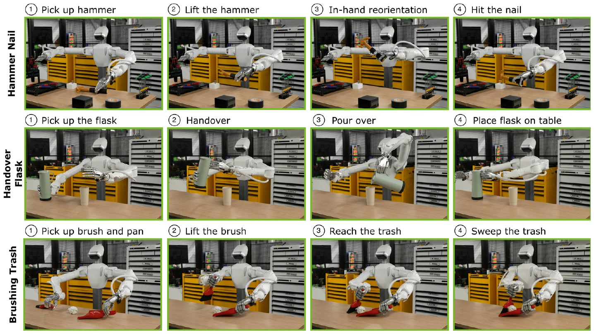
| 表 7 · 人类到仿真到真机（成功次数） | Hammer Nail | Handover Flask | Brushing Trash |
|---|---|---|---|
| GR00T 2（仿真） | 20/20 | 13/20 | 19/20 |
| GR00T 1.7（仿真） | 14/20 | 1/20 | 11/20 |
| π0.5（仿真） | 9/20 | 16/20 | 17/20 |
| GR00T 2（真机） | 9/10 | 2/10 | 8/10 |
| GR00T 1.7（真机） | 0/10 | 0/10 | 0/10 |
| π0.5（真机） | 0/10 | 0/10 | 0/10 |
真机上基线有中间进展但没完成：GR00T 1.7 钉钉子任务 10 / 10 拿起锤子、6 / 10 完成手内重定向，但从没把钉子敲到位；扫垃圾 7 / 10 拿起刷子但没扫完。π0.5 拿起锤子、烧瓶、刷子分别 6 / 10、4 / 10、9 / 10，全部没完成。烧瓶交接对观测和推理延迟特别敏感，高频的专家策略在真机上能做成，GR00T 2 只有 2 / 10。
C.1 人类数据。Human-1M 约 100 万小时，GR00T 2 用的部分是 402,730 小时、约 1,375 万回合、51,500 多名采集者、12.3 万个场景。采集分“野外”（家庭、工业、农业、商业厨房、服务、零售、物流里的熟练劳动者）和工作室（标准化桌面操作，像机器人示范数据集；工作室里更严格的“实验室内”协议要求双手始终在画面、不空闲、速度和机器人匹配）；约 8 万小时是工作室数据，约 9 万小时带腕部相机。手部用每只手 21 个 3D 关键点（腕加每指 4 个），以米为单位，在参考头部相机坐标系里；头部用 SLAM 估计的 6 自由度位姿。语言分两级：T1 一两句话的回合摘要，T2 是 1–10 秒连续带时间戳片段的自足描述（哪只手、什么动作、什么物体）。质检两级：人工按 95% 的单回合通过率审语言、任务质量和空闲时间；定量过滤对每个候选训练时间步看前 24 帧、后 48 帧的窗口，全部达标才保留（表 8）。腕部相机对齐用 Sharpa 平台研究过：筛了 13 种安装设计，对其中 4 种找 4 名操作员做对照。
| 信号 | 窗口统计 | 接受条件 |
|---|---|---|
| 头部角速度 | 平均 | ≤ 20°/s |
| 头部平移速度 | 平均 | ≤ 0.2 m/s |
| 手骨长误差 | 最大 | ≤ 0.05（相对） |
| 手的可见性 | 最小 | 两只手都在画面里 |
| 腕部速度 | 最大 | ≤ 1.0 m/s |
骨长误差：一帧里 20 根手指骨长度相对各自本回合中位数的绝对偏差的中位数，除以这些中位数的平均。
| 标准（工作室采集指南 v1.3.2） | 要求 |
|---|---|
| 头部运动 | 头部位姿稳定，不转动 |
| 手的可见性 | 100% 的帧里双手可见 |
| 空闲动作 | 没有，允许和任务有关的短暂查看 |
| 腕部速度 | ≥ 0.40 m/s 的样本 < 5%，低于 0.03 m/s 的 ≤ 60%，跟随参考视频节奏 |
| 腕部相机 | 4.4 cm 标定块在机器人视图里的大小为 0.8–1.2 倍，手臂伸直时人-机器人手部 IoU > 0.5 |
| 手部位姿质量 | 按速度分档的抖动 ≤ 机器人参考的 4 倍，逐帧置信度，抽查重投影 |
| 操作员 | 每个环境一个，优先手的大小接近机器人手的人 |
| 物体、标定 | 机器人配对任务用指定物品或 3 种形状相近的变体；头部 / 腕部内参、立体外参、每批腕部速度报告 |
C.1.3 实验室内人类数据。人类示范和机器人执行之间有两道差距，都可以在采集时缩小：观测差距（野外的腕部相机不参照任何机器人放置，手的角度、大小、位置和机器人腕部视角不同，模型得先跨视角想象，才能跨具身想象）；动作差距（人比遥操作快，夹杂停顿和无关手势，还会做机器人手做不到的动作）。目标平台是天机 + Sharpa：腕部相机安装要复现机器人腕部视角，手和物体在同样位置、同样大小才接受；任务照搬机器人遥操作任务的物体和步骤顺序，配机器人上录的参考视频，速度上限保证机器人跟得上。实验室内数据约 3,000 小时、70 万回合，来自 2,000 多份任务说明，每个任务由不同操作员演示数百次；部分任务同时有人类、UMI、机器人三种数据。
C.1.5 人类视频规模实验。见 §4.2.1 和读者注 6。补充的细节：四个模型的后训练阶段，1% / 10% / 100% 模型 45% 样本来自 Dexter、55% 来自各自的人类视频，0% 模型只用 Dexter；72 个任务里 50 个“Dexter 没有”的任务有 47 个属于 Dexter-50；四个模型在同一工作站、同一场景按 0%、1%、10%、100% 的顺序背靠背跑，同一操作员判全部 864 回合；视频回放每模型 2,160 段。全量对比零：真机成功 +23.1 点（95% 区间 13.4–33.3，按任务配对），进度 +20.1（12.3–27.9）；视频回放成功 +21.3（14.3–28.2），进度 +12.4。1% → 100% 每增加 10 倍，真机进度约 +6 点（2.5–9.6），视频成功约 +9 点（5.9–12.0）。
C.2 UMI-10K。942k 回合、10,184 小时、2,897 个任务、49 种技能、356 个物体类别（表 10）。抓放出现在 64% 的回合里，88% 的回合还涉及至少一种别的技能；29% 涉及动态技能（扔、推倒、摇、扫），17% 涉及精密技能（插入、盖盖子），29% 涉及铰接物体，15% 涉及可变形物体。按时长，41% 简单、38% 中等、21% 复杂。任务由语言模型智能体把技能词表和物体库组合进模板，去重后由人逐个接受或拒绝，再按物体、数量、颜色、位置实例化，形成只差一个属性的反事实对；结果是 2,798 种技能-物体组合，前 24 种技能 × 前 30 种物体的网格填满了 70%。质检三级：工作站端自动检查（帧时序、掉帧、跟踪和夹爪故障），智能体质检（任务完成、动作质量、场景合规、视角质量四方面打分），人工抽审对照金标准集；合计滤掉约四分之一（工作站约 11%，智能体关约 16%）。回合内夹爪速度的 95 分位每只手臂 0.28 m/s，十分之一的回合峰值超过 0.68 m/s。
C.3 遥操作数据。六个来源共约 2.35 万小时、116 万回合；采样份额按来源设定，不按时长（表 11）。另有天机 + Sharpa 的实验室遥操作系统（图 33），主要采后训练数据，包括“不靠遥操作学新任务”用的 play 数据和对照用的 1 或 10 条目标任务示范：上臂加长（288 → 400 mm）恢复胸前工作空间，关节速度上限 220°/s 跟得上人的手腕；Isaac Teleop 接入所有设备，同一个重定向器（B.1.2）出手臂和手的指令；相机装在跟随头显的开源 3 自由度 GEAR Neck 上，60 fps；Televiz 里的 3 自由度重投影让头显按自己的频率根据当前头部姿态重渲染，避免晕动。
| 表 11 · 预训练里的遥操作 | 平台（末端） | 回合 | 小时 | 采样份额 |
|---|---|---|---|---|
| YAM | YAM（夹爪） | 610.7k | 15,146 | 51.2% |
| ABC-130k（XDOF） | YAM（夹爪） | 130.7k | 3,591 | 10.4% |
| Sharpa | 双臂（22 自由度 Sharpa 手） | 202.6k | 2,890 | 20.6% |
| Wuji | 天机 7 自由度臂（20 自由度 Wuji 手） | 80.9k | 1,256 | 14.0% |
| G1 | Unitree G1（夹爪） | 57.7k | 275 | 1.3% |
| DROID | Franka Panda（夹爪） | 76k | 350 | 2.5% |
| 合计 | 1.16M | 23.5k | 100% |
小时：15,146 + 3,591 + 2,890 + 1,256 + 275 + 350 = 23,508；回合：610.7 + 130.7 + 202.6 + 80.9 + 57.7 + 76 = 1,158.6k；份额加起来 100.0%。都对。正文说“YAM 占机器人小时的 64%、样本的 51%”：15,146 / 23,508 = 64.4%，份额 51.2%，这里的 YAM 不含 ABC-130k；如果算上同为 YAM 平台的 ABC-130k，是 79.7% 的小时、61.6% 的样本。灵巧手（Sharpa + Wuji）4,146 / 23,508 = 17.6% 的小时拿到 34.6% 的样本，被加重约 2 倍。§4.2.3 的列表把 ABC-130k 并进 YAM 的 1.87 万小时（15,146 + 3,591 = 18,737），附录说“六个来源”，两处计法不同但数对得上。人类视频、UMI 和遥操作三大类之间的采样比例，白皮书没给。
C.4 数据标注。Flora 三个模型：Flora-TempSeg 在重叠窗口上预测动作起止（带“延续到窗口外”标志），拼成回合级区间，两只手同时做不同事时保留为两个区间；Flora-Captioner 逐个区间写说明，能看到前后相邻动作的帧来确定物体和意图，但只描述目标区间，多路相机每个时间步拼成一张图；每条说明是自足的祈使句，写明动作、物体、每只手的角色和空间关系，失败的尝试按意图描述、不暗示成功；Flora-Rewarder 出结果、密集和基于细则的奖励。前两个先在人工标注上微调，再用 GRPO 在可验证奖励上训练（时间 F1 和边界精度；对照参考的覆盖率并惩罚事实错误）。WGO-Bench 时间分割 F1 50.3（GPT-6 Astra 46.0）；内部 300 回合的说明基准上，人类回合第一、机器人回合仅次于 Astra。白皮书说“按上面的产出速率”重标 GR00T 2 用的约 40 万小时 Human-1M 要两天左右，但前文并没有给出这个速率。
D.1 为什么汇总、为什么 A/B。真机评测贵但可累积；绝对分数随工作站（标定、相机、光照、磨损）、操作员（怎么摆场景、边界情况怎么判）和日期漂移，不同场次的两个检查点的差别分不清是技能还是漂移。GearArena 也能用 45 天内同一任务的两次独立评测构造“派生比较”，但因为跨场次，权重最多是盲测比较的四分之一，默认排行榜不用。盲测 A/B 让 2–4 个检查点在同一场景、同一工作站、同一操作员、几分钟内随机顺序跑，操作员不知道谁是谁，漂移在比较里抵消，再像 Chatbot Arena 那样把两两结果联合拟合到一个尺度上。和 Chatbot Arena 的三点不同：机器人检查点是冻结的，可以一次性批量拟合全部历史；同一试验的比较共享场景、互相相关，不确定度要按场景估；每个检查点只有几十到几百次比较。
D.2 任务设计。三步：想要什么能力（按空间和属性的语言指令、可靠的运动基元、接触丰富和可变形物体技能）→ 每种能力选代表任务（一个任务一个摆放、一份部分得分细则，进度 = 完成子任务的加权比例）→ 在真实检查点上校准（全都能完成的归档，全都做不了的搁置；两边都 0 分的比较被丢掉，所以没人能做的任务自然不贡献）。第一个套件 YAM V1（7–10 月）是通用操作（擦、插槽、拧开、开关、舀、展平折叠、语言跟随）加灵巧装配和装箱；当前 YAM V2（9 月 21 日起）38 个任务：14 个语言跟随、10 个简单运动基元、14 个中到难运动基元，每个 A/B 活动跑一个子套件、每个检查点每任务 2 次。V2 上 9,402 个打分回合里，单任务平均分从 0.05（搓黏土）到 0.73（杯子放进篮子），中位 0.28，没有任务接近饱和，6 个任务平均不超过 0.10，是搁置候选。同一任务在日志里有带编码和不带编码两个名字，排行榜当作不同任务（74 个名字对 38 个任务）；合并后评分变化不超过 8 Elo，前 11 名不变。
D.3 竞技场的组织。工作单位是“活动”（一个 A/B 请求：2–4 个检查点、任务列表、每任务试验数、工作站），在一个或多个录制场次里跑完。三个套件是三个独立联赛，评分只在联赛内可比：YAM V1、YAM V2，以及天机 + Sharpa 的灵巧手套件（25 个检查点、29 个活动、1,492 次比较；推理设置算检查点身份的一部分，同一权重两种推理方式是两个条目）。每个活动的结果从和录像一起存的带校验和的快照读取；每周审计把每个打分试验和录像对照，盲测有疑问的活动从所有排行榜撤下（目前撤了一个，因为操作员能看到检查点标签）。
| 表 12 · GearArena 一览（2026-11-06 快照） | YAM V1 | YAM V2 | Dex |
|---|---|---|---|
| 机器人 | YAM 双臂 | YAM 双臂 | 天机臂 + Sharpa 手 |
| 任务类型 | 通用、灵巧 | 语言、运动 | 灵巧 |
| 评分的检查点 | 45 | 26 | 25 |
| A/B 活动 | 78 | 122 | 29 |
| 工作站 / 操作员 | 6 / ≤ 17 | 10 / ≤ 23 | 5 / – |
| 打分试验 | 2,167 | 3,403 | 721 |
| 打分回合 | 6,373 | 9,671 | 2,146 |
| 两两比较（平局） | 5,732（30%） | 6,035（35%） | 1,492（33%） |
| 有比较的任务 | 16 | 74 个名字（38 个任务） | 56 |
| 证据时间 | 7/15 – 11/6 | 9/21 – 11/6 | 9/29 – 10/29 |
D.4 排行榜的数学（式 (4)–(8)）。一次 n 个检查点的试验产生 \(\binom n2\) 次比较，结果按操作员的显式排名；同分算平局，两个都是 0 分的比较丢掉。每个检查点有强度 \(p_i>0\)：
对全部比较做最大似然（Bradley-Terry），用 MM 更新：
\(W_i\) 是加权总胜场（平局算半场），\(n_{ij}\) 是 i、j 之间比较的总权重。每个检查点另加一次和固定锚点的虚拟平局，作为弱先验。换成 Elo：
\(\bar p\) 是所有强度的几何平均，1500 是场均，差 100 Elo 对应 64% 期望胜率。任务归一化：每对检查点在每个任务上的比较总权重归一为 1，
按对归一而不是全局按任务归一，是为了让一个检查点的权重不受它没参与的评测影响（全局归一时，一个检查点可能排在打败它的对手之上，加一个检查点会让别人的相对位置移动多达 27 Elo）。不确定度来自按任务重采样的聚类 bootstrap，500 次，每次重算式 (7) 的权重再拟合（只算一次权重会让区间窄约 30%）；跨任务少于 3 个的检查点不给区间。两两比较用配对统计量：
当前套件上区间宽度中位 93 Elo，23 个检查点之间 253 对里有 176 对在 95% 水平上分得开。每个新检查点的第一个活动对参照检查点，第二个对它的热启动父检查点，看改动是否有用。冻结快照离线重拟合，所有评分和区间端点误差在 0.1 Elo 内。
D.5 A/B 基础设施。工作站端 A/B 客户端给每个检查点起专用的策略服务器，每次切换检查是否是期望的模型种类；基线用自己的原生设置（提示词、动作滤波）。盲测：操作员只看到跑和判所需的信息，命令行（含检查点名）不给操作员看，单次查询的时延警告记录但不打印，预热信息和录制计时对每个臂都一样；轮换槽到检查点的映射写在场次清单里，判完才读。每个回合连同各臂时延统计上传。
D.6 结果。V2 前四名都是 GR00T 2 和 Turbo 检查点，区间重叠；GR00T 1.7 低约 80–110 Elo，π0.5（在作者的机器人上适配过）排在末尾附近。按子套件的匹配评分：GR00T 2 对 π0.5 的优势在每个子套件都有，中 / 难运动基元最大（0.48 对 0.14）；对 GR00T 1.7 的优势也集中在那里（0.33 对 0.14），语言跟随和简单运动持平。当前套件上最好检查点相对今天最好的差距：6 月 −206，9 月 −93、−43，10 月中 −14（GR00T 2），然后是现在领先的 Turbo；第一个套件从 −185 到 −87。在 GR00T 2 策略服务器服务的 21 个检查点里，Turbo 参照既评分最高也最快，RTX 5090 上每次服务调用 52 ms 对 171 ms（图 38 的时间来自 A/B 服务日志，和表 27、图 23 是不同的测量）。最后几个月团队每周训练例会看这个排行榜；在灵巧手套件上，用新推理方式服务同一批检查点，排名就变了（原第一名在 9 个里掉到第五）。
| A | B | ΔElo | 95% 区间 | P(A>B) | 期望胜率 |
|---|---|---|---|---|---|
| GR00T 2 | π0.5 | +236 | [+171, +325] | > 0.99 | 80% |
| GR00T 2 | GR00T 1.7 | +95 | [+50, +148] | > 0.99 | 63% |
| GR00T 2 | Turbo（早期检查点） | +12 | [−20, +48] | 0.80 | 52% |
| GR00T 2 | Turbo（★ 参照） | −14 | [−58, +28] | 0.28 | 48% |
| GR00T 1.7 | π0.5 | +141 | [+78, +227] | > 0.99 | 69% |
| Turbo | GR00T 1.7 | +109 | [+54, +168] | > 0.99 | 65% |
| 表 14 · 匹配评分（0–1，括号是试验数） | 语言跟随 | 简单运动 | 中 / 难运动 | 全部 |
|---|---|---|---|---|
| GR00T 2 对 π0.5 | 0.53 对 0.25（149） | 0.43 对 0.32（77） | 0.48 对 0.14（43） | 0.49 对 0.25（269） |
| GR00T 2 对 GR00T 1.7 | 0.48 对 0.46（117） | 0.51 对 0.51（67） | 0.33 对 0.14（71） | 0.45 对 0.38（255） |
| GR00T 2 对 Turbo | 0.43 对 0.48（112） | 0.55 对 0.66（80） | 0.44 对 0.34（84） | 0.47 对 0.49（276） |
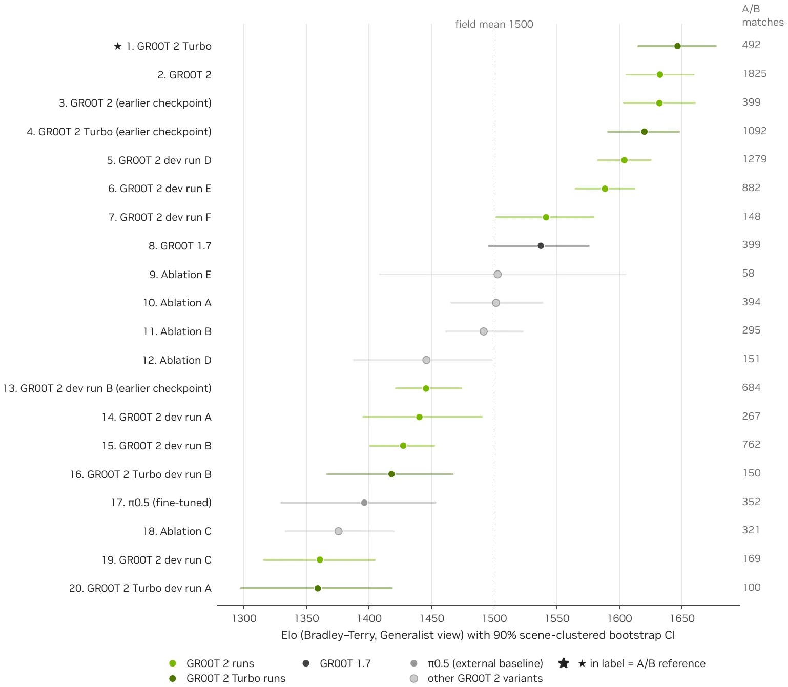
D.7 局限。评分是相对的、按套件的；独立单位是任务不是试验（V1 有 A/B 比较的任务 16 个，V2 38 个），区间宽（V2 中位 93、V1 128 Elo），V1 上有一个检查点的点估计（840）落在自己的区间 [853, 995] 之外，作者对它不作结论；平局占 30–35%，排名来自人工操作员；跨活动的工作站和操作员差异只能通过共同对手吸收；进行中的活动立即计入（快照时 4 个 V2 活动暂停，GR00T 1.7 和 π0.5 的比较来自最近几个活动）；模型家族、检查点日期、服务栈这些元数据记录在 A/B 记录之外。
UMIverse 指一族不需要机器人、但按机器人自己的感知和动作空间记录人类示范的接口：Gripper UMI 是带机器人腕部相机、能测开口宽度的手持平行夹爪；DexUMI 是复刻灵巧手运动学、接触面和相机安装的穿戴外骨骼（GEAR DexUMI 复刻 XHAND1 Pro-U）。和遥操作比不需要机器人；和人类视频比，动作在机器人坐标里、观测来自机器人相机。Gripper UMI 提供规模（三个地区的采集站供应数千小时预训练示范），DexUMI 提供深度（复杂灵巧任务的后训练数据）。
E.1 Gripper UMI 硬件。相对原版 UMI，主要改动是把手指-扳机连杆里的销轴、轴承和复位弹簧换成一整块桌面 3D 打印的柔性连杆（PLA 刚性件 + 四个直接打印进去的 TPU 90A 柔性铰），带来：全行程内恒定的力比例（原版在全闭时指尖力只剩扳机力的约 20%）、零件更少、回差更小、用编码器直接测开口（避免相机加标记的遮挡问题）。连杆镜像对称，跑在 150 mm 的 MGN9 直线导轨上，钳口行程约为指尖的 2.9 倍、理想情况下力约为手指力的 0.35 倍。连杆打印时比导轨允许的更宽（松弛枢轴跨距 163.8 mm 对导轨限位处 118.1 mm，每侧差 22.858 mm），所以 TPU 铰在张开位就预紧，提供复位力。
E.2 UMI 直连。把只用 UMI 训练的策略部署到对应的 UMI 机器人夹爪上（同样的相机板、鱼眼腕部相机和扳机相机，同样的手指）。策略 48 步动作块执行 30 步，30 Hz，跑在 60 Hz 控制环里。训练：只用目标任务的 Gripper UMI 示范后训练，UMI 用和 YAM 共享的动作头行（抓取点表示），四路视图（头部、两路立体投影到 320 × 240 的鱼眼腕部、底部相机）。消融：预训练里有没有 UMI-10K。四个装配任务（各 10 次）：有 UMI-10K 时成功 30%、50%、10%、50%（平均 35%），进度 79–94；没有时 0%、10%、0%、0%（平均 2.5%），进度 60–75。没有 UMI 预训练的策略能做大多数粗步骤，但做不了拧螺丝、插零件这些精密步骤。作者提醒：对照检查点来自更早的预训练，样本更少、机器人混合不同、模型有小差异；而且 UMI 直连后训练用的是和 YAM 共享的动作头行，不是它预训练时那一行，所以任何收益只能经由共享的 Transformer 传递。
| 表 15 · UMI 直连 | UMI 小时 | 无 UMI 预训练 进度 | SR | GR00T 2 进度 | SR |
|---|---|---|---|---|---|
| Toy Dumptruck Assembly | 5.07 | 67.0 | 0.0 | 89.0 | 30.0 |
| Toy Plane Assembly | 4.93 | 75.0 | 10.0 | 85.0 | 50.0 |
| Bluey Car Assembly | 3.70 | 67.0 | 0.0 | 79.0 | 10.0 |
| Monster Truck Assembly | 2.96 | 60.0 | 0.0 | 94.0 | 50.0 |
| 平均 | 67.3 | 2.5 | 86.8 | 35.0 |
E.3 UMI → YAM 的具身差距和消融。UMI 的头部、腕部、底部相机填 YAM 的顶部、腕部、底部视图槽。三个基准任务的 UMI 示范分别是 75、74、41 条，YAM 联合训练数据里没有任何基准任务的示范。联合训练让模型自己吸收外观差异（图 14），但不能单靠它关闭具身差距，还剩三处：
| 表 17 · UMI → YAM 消融 | 设置 | Toy Dumptruck | NIST Board | Conveyor | ||
|---|---|---|---|---|---|---|
| 进度 | SR | 进度 | SR | SR | ||
| 动作头 | 共享（默认） | 96.0 | 60.0 | 86.0 | 50.0 | 86.0 |
| 分开 | 89.0 | 10.0 | 93.0 | 60.0 | 64.0 | |
| 腕部视角变换 | 对齐 YAM（默认） | 96.0 | 60.0 | 86.0 | 50.0 | 86.0 |
| 随机二选一 | 86.0 | 0.0 | 78.0 | 0.0 | 60.0 | |
| 不变换（立体投影） | 79.0 | 0.0 | 76.0 | 0.0 | 46.0 | |
| UMI 回合数 | 全部（默认） | 96.0 | 60.0 | 86.0 | 50.0 | 86.0 |
| 一半 | 92.0 | 30.0 | 68.0 | 0.0 | 84.0 | |
| 四分之一 | 81.0 | 10.0 | 66.0 | 0.0 | 70.0 | |
| 预训练 | 含 UMI-10K（默认） | 96.0 | 60.0 | 86.0 | 50.0 | 86.0 |
| 不含 | 84.0 | 20.0 | 65.0 | 0.0 | 34.0 | |
要点：动作头，共享头把 UMI 改写成 YAM 的语义（抓取点位姿、按 85.55 mm 归一化的绝对宽度、YAM 32 维里的前 20 维、YAM 的归一化统计）放到 YAM 那一行；分开头保留 UMI 预训练时那一行（腕部相对位姿、毫米相对宽度、自己的统计），所以不是单变量对照。共享头在自卸车和传送带上明显更好，分开头在 NIST 上略好，差别集中在拧六角螺母那一步（7 / 10 对 5 / 10）：UMI 示范者把螺母从柱上滑出、不转手腕，YAM 数据里没有这种做法，共享头的解码器先验跟着 YAM 的动作统计走。腕部视角，把 UMI 鱼眼重渲染成虚拟针孔相机（320 × 240 下焦距 202.96 像素、视场 76.5° × 61.2°、下俯约 27.1°，在 Isaac Sim 里用 112 对同场景渲染拟合），留出对上的场景误差 30 cm 内 8 像素、以外 11 像素（立体投影是 74 和 94），抓取区分辨率 12.5 像素/cm（原始鱼眼 6.9）。只有对齐视图在两个长任务上能迁移；随机混合只在抛掷上有帮助。作者的结论：视频模型能吸收外观差距，吸收不了几何差距，但几何只需粗略对上。示范数量，传送带几乎不受影响（86、84、70），自卸车逐渐下降但进度保持高（96、92、81），NIST 第一次减半就从 50% 掉到 0%，因为拧螺母子任务从 5 / 10 掉到 0 / 10 而其他四个子任务几乎不动：需要多少数据由最难、在预训练和联合训练里最少支持的子技能决定，而不是任务长度。预训练里的 UMI-10K，作者认为它的作用一是让手持夹爪和鱼眼视图对视频骨干来说在分布内，二是（更重要）在共享 Transformer 里把 UMI 的动作和其他具身对齐，“UMI 的一次抓取和 YAM 的一次抓取是同一件事”已经学过，后训练只需挂上任务证据。
| 手持 UMI | YAM | |
|---|---|---|
| 腕部相机 | 鱼眼约 180°（OAK），640 × 400 | 标准视场 78° × 63°（RealSense D405），640 × 480 |
| 其他视图 | 宽视场头部相机（OAK）、扳机相机 | 标准视场顶部和底部相机（RealSense） |
| 夹爪 | 扳机、齿轮传动、软手指 | 内置夹爪 |
| 全开 | 85.55 mm | 96 mm |
| 夹爪信号 | 宽度（mm），编码器 | 归一化 [0, 1] |
| 控制坐标 | 夹爪电机中心的腕部坐标 | 距法兰 0.1347 m 的抓取点 |
| 动作标签 | 到达的位姿和宽度 | 主臂指令，从臂滞后约 4 帧 |
E.4 DexUMI 外骨骼硬件。GEAR DexUMI 逐关节复刻 XHAND1 Pro-U 的运动学，复刻指尖和掌面接触面。相对原版：用 20 个关节采 16 个自由度；机加工零件更精、更耐用；去掉非必要接触面并用远心（RCM）连杆消除原结构的过约束（RCM 是平行四杆，顶部关节四个孔只用两个，减少制造误差造成的卡滞）；拇指用“外撇”几何保留机器人拇指运动学又给人的拇指留空间；每个关节双侧支撑，定制销直接键合到关节编码器以减小回差；编码器菊花链；有左右手版本。底盘阳极氧化成绿色，便于按颜色分割。指尖按机器人手自己的触觉格式报力：5 个指尖传感器、每个 2 个触垫、3 个力轴，每只手 30 通道。每只手用一部 iPhone 跟踪离镜头 12.6 cm 的手腕坐标，经每只手臂的手眼标定映射到机器人；腕部和头部相机 640 × 400、45 fps，采集和部署用同样的相机。
E.5 DexUMI 后训练配方。从 GR00T 2 预训练检查点后训练 2B 模型 60,000 步，学习率 3 × 10−5，腕部相机（可选头部相机）224 × 320。策略在 45 fps 数据上以步长 2 预测 40 步动作块：每只手臂的相对末端位姿，以及每只手的绝对关节位置加关节力矩，或者偏移后的虚拟目标。
E.6 DexUMI 的“WAM 原生修补”。不再离线编辑视频，而是在训练里破坏外骨骼区域，让模型没法依赖外骨骼特有的外观。旧管线（照原版 DexUMI）要在真机手上重放每条示范、手工选关键点分割外骨骼、用 ProPainter 修补、再把机器人手合成回去，费机器人时间、人工和 GPU。新做法：用 HSV 颜色带、形态学清理和 ±2 帧时间多数投票分割每路视频里的绿色区域，掩码存成无损二值视频；训练时在裁剪缩放前对掩码区域做破坏，每个样本一组参数、跨帧跨视图共享，用羽化掩码混合：
\(m\) 是二值掩码，\(G_\sigma\) 是高斯模糊（640 像素宽时 \(\sigma=6\) 像素），远离掩码的像素保持逐位不变。默认破坏 \(c\)：色相在整个色轮上旋转，饱和度乘 \(U[0.1,1.2]\)，明度乘 \(U[0.2,1.15]\)，加亮度噪声；特意能到暗、低饱和的颜色，因为部署的机器人手大多是黑色。掩码不进部署模型的输入，推理帧原样通过。
和只出动作的策略不同，GR00T 2 通过迭代去噪同时生成动作和预测画面，策略优化要容纳联合视频-动作计算，还要能探索；真机交互又贵。三部分应对：直接后训练 GR00T 2（GRPO 和自模仿）加上残差 RL（F.1）；用 AutoRL 自动发现 RL 算法（F.2）；协调机器人交互、训练和评测的基础设施（F.3）。在四个真实精密任务上验证（F.4），再在学到的神经模拟器里做 RL（F.5）。
F.1.1 用 CPS 做随机探索（式 (10)、(11)）。rollout 时把 GR00T 2 确定性的 Euler 动作更新换成 CPS，只在动作去噪里加噪声；视频去噪给定初始隐变量后是确定的，视频特征继续条件化动作。参照 DPPO 和 RL-100，通过动作去噪过程优化。GR00T 2 有四个动作去噪事件：联合步（k = 0、2）通过共享 DiT 同时更新视频和动作隐变量，缓存步（k = 1、3）只更新动作 token，复用前一个联合步的视频和状态 KV（图 46）。去噪后执行前 \(H_e\) 个动作。设 \(\mathbf a_t^{(k)}\) 是第 t 个环境决策、第 k 个去噪事件的动作隐变量，\(\mathbf v_{\theta,t}^{(k)}\) 是“噪声减数据”约定下的动作速度，噪声表 \(\sigma_k\) 从 \(\sigma_0=1\) 降到 \(\sigma_4=0\)。干净动作和噪声的估计：
用截断的转移标准差采样：
\(\eta\) 控制探索强度；“exec”表示前 \(H_e\) 行里的有效坐标，加噪和似然都只在这些坐标上算，不含填充。CPS 给每个去噪转移一个显式的高斯密度，供后面的策略优化用。
“噪声减数据”约定：\(\mathbf a^{(k)}=(1-\sigma_k)\mathbf x+\sigma_k\boldsymbol\epsilon\)，速度 \(\mathbf v=\boldsymbol\epsilon-\mathbf x\)。代入得 \(\mathbf a-\sigma\mathbf v=(1-\sigma)\mathbf x+\sigma\boldsymbol\epsilon-\sigma\boldsymbol\epsilon+\sigma\mathbf x=\mathbf x\)，\(\mathbf a+(1-\sigma)\mathbf v=\boldsymbol\epsilon\)，式 (10) 对。这里 \(\sigma\) 从 1（噪声）降到 0（数据），和 N1 论文的 \(\tau\) 方向相反，所以“ε − x”在这里是自洽的；本站 GR00T N1 读者注 4 指出的是 N1 论文在“τ 从噪声到数据”的约定下写了 ε − A，两件事不矛盾。
CPS 的名字来自系数平方和守恒：式 (11) 里噪声部分的确定性系数 \(\sigma_{k+1}\cos(\eta\pi/2)\) 和随机部分的标准差 \(\sigma_{k+1}\sin(\eta\pi/2)\) 平方和正好是 \(\sigma_{k+1}^2\)，所以加了探索噪声后，下一步隐变量的噪声水平仍是 \(\sigma_{k+1}\)（截断不生效时）。\(\eta=0\) 退化为确定性 DDIM 式更新。最后一步 \(\sigma_4=0\)，标准差为 0，会被 \(s_{\min}>0\) 截断成一个小正数，这样最后一个转移也有有限的密度。
用 GRPO 在线 RL（式 (12)–(15)）。一轮里对每个选中的重置上下文 g（一个任务加一种场景布局）在固定行为策略下采 \(N_g\) 次尝试，第 i 次得二值回报 \(R_{g,i}\in\{0,1\}\)。只用当前组算基线，全成或全败时奖励优势为零；所以把该上下文的历史均值 \(m_g\) 当作 \(h_g\) 个伪回报，和其他 \(N_g-1\) 个回报一起算留一基线：
\(h_g=0\) 就是 RLOO；只在上下文第一次出现时用 0，之后 \(h_g=h=2\)。过去成功率 \(m_g\) 的上下文这一轮全失败，得到 \(-h m_g/(h+N_g-1)\) 的负优势。优势平摊到这次尝试的 \(T_{g,i}\) 个决策上，每批缩放一次：
这样长尝试不会仅因决策多而占主导。历史均值存在一张跨轮、跨训练段持久化的全局表里，算完本轮优势后用指数滑动平均更新：
\(\alpha_{\rm EMA}=0.25\)，首次访问时 \(m_g=\mu_g\)。因为精确的动作似然拿不到，就在 CPS 给出高斯密度的去噪转移上打分，在联合去噪事件 \(\mathcal K=\{0,2\}\) 上最大化截断代理目标：
\(r=\exp(\ell_\theta-\ell_{\rm old})\) 是单个记录转移的当前 / 行为似然比，不跨事件或决策相乘。实际每个小批只打一个联合事件，在 k = 0 和 2 之间交替；记录的动作隐变量 teacher-forcing，视频计算在当前参数下重建；梯度穿过所选联合步（共享 DiT、状态 / 动作编码器、动作解码器），携带的隐变量 detach，是不穿过整条去噪链的局部代理。
取 \(N_g=8\)、\(h=2\)。一个历史成功率 \(m_g=0.75\) 的上下文这一轮 8 次全失败：每次的基线 \(b=(2\times0.75+0)/(2+7)=0.167\)，优势 \(A=-0.167\)，正好是 \(-h m_g/(h+N_g-1)=-1.5/9\)。普通 RLOO（\(h=0\)）这里优势全是 0，学不到东西。反过来，历史成功率 0.1 的上下文这一轮全成功：\(b=(0.2+7)/9=0.8\)，\(A=+0.2\)。这些是我按式 (12) 算的例子，\(N_g\) 的实际取值白皮书没给。
GRPO 诱导的自模仿（式 (16)）。从训练出最好 GRPO 检查点的全部 rollout 里留下成功回合，组成 \(\mathcal D_{\rm succ}\)；从和 GRPO 相同的 SFT 初始化出发，用 GR00T 2 原本的联合视频-动作目标微调一轮：
任务成功决定选哪些轨迹，学习信号来自原本的视频和动作监督，不需要额外 rollout、示范或人工。
F.1.2 残差 RL（式 (17)、(18)）。冻结 GR00T 2，在指定任务阶段里训练一个轻量残差策略在线修正它的动作，不用 CPS，靠残差 actor 自己的随机性探索。每个决策 j，tanh 压缩的高斯 actor \(\pi_\varphi\) 读相机、本体感知、GR00T 2 预报的末端目标和当前修正偏移，输出下一段控制时域上的有界残差 \(\mathbf a_j\)，累积成有界偏移再和 GR00T 2 的目标合成：
参照 HIL-SERL，用 SAC 加先验示范和在线交互（含偶尔的人工纠正）训练；critic 每批一半在线数据一半示范，critic 集成用自举回报。actor 目标：
零残差先验抑制不必要的修正，成功经验强化有效行为。
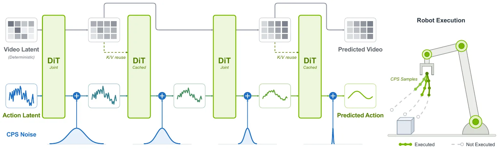
F.2 自动发现 RL 后训练算法。AutoRL 是一个闭环实验的自主研究框架：智能体分析训练失败、提出假设、改代码、在固定协议下评估。在 RoboCasa365 上用一个早期开发版 GR00T 2 检查点和 Atomic-Seen、Composite-Seen 任务跑了约 35 天。每轮四个阶段：分析以往实验和失败模式；提出最多四个互相正交的假设（各带机制、预期结果和证伪条件），评审过滤冗余或不可检验的；每个假设在独立分支实现、本地测试、提交集群训练评估；超过预设幅度才晋升，每轮最多晋升一个，被拒的假设留作反面证据。从标准 PPO 出发，图 47 标出的八个改动按影响部件归类，每项后面是到那时为止相对基础模型的最好增益：
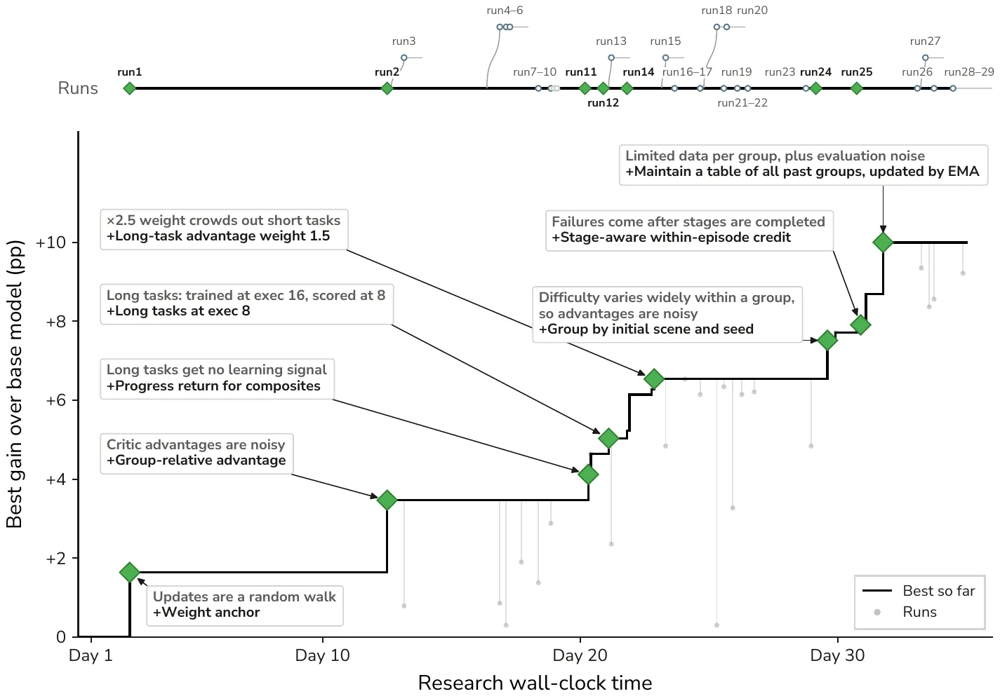
F.3 在线 RL 后训练基础设施。共享经验缓冲区基于 Lance：经验记录随采集、打分、batch 准备逐步构造，worker 只读需要的字段，训练用钉住的表版本；采集、训练、评测用各自可配的资源池，兼容的 GPU 按负载在角色之间调配；增量上传和预取让采集、传输、打分、解码、训练准备重叠；有状态恢复区分“已反映在恢复的检查点里的经验”“属于被丢弃更新的数据”和“没用过的数据”，兼容的经验可以继续用。仿真里 RoboCasa365 GRPO 的 rollout 和训练轮流共用 40 卡池、评测另占 40 卡，总分配从 120 卡降到 80 卡，八轮训练九次评测从 14.1 小时降到 8.8 小时。单机器人 GRPO 每轮从 140–160 分钟降到 62–72 分钟（表 18）。
| 阶段 | 原来 | 改进后 | 说明 |
|---|---|---|---|
| 采集 | 50–60 | 50–60 | 受真机执行限制 |
| 上传和转换 | 50 | 约 1 | 异步上传直接产出训练可用数据 |
| 训练 | 10–20 | 10 | 每轮固定算力预算 |
| 下载策略 | 30 | 约 1 | 只传微调过的权重 |
| 合计 | 140–160 | 62–72 | 迭代吞吐约 2.2 倍 |
F.4 用 RL 后训练做精密操作。四个任务（附录图 49）：管件拧装（夹住带螺纹的三通、对准水平安装的管子、咬合螺纹、转满一圈；每次从后训练策略不擅长的姿态开始）、手指定位（夹爪手指上两根 3 mm 销插进固定底座孔，要求位置和偏航都准）、网线插入（以网络连通判成功）、充电器插入（插进 2 × 6 排插里的指定插座）。所有方法从同一 SFT 检查点出发（作为初始化或冻结底座）；评测同一目标分布、复位条件和时限，评测时不允许人工干预，评测试验和训练 rollout 独立。结果见 §3.3 和图 5：GRPO 把四个任务从 66 / 58 / 76 / 40 提到 86 / 72 / 92 / 94；自模仿 88 / 98 / 94 / 96，在四个任务上都不低于 GRPO，手指定位从 72 到 98 最明显；残差 RL 76 / 84 / 82 / 70，在手指定位和充电器上比 SFT 明显好。显著性见读者注 7。
F.5 用神经仿真做 RL（式 (19)、(20)）。DreamDojo 先在多视角回合上中期训练：YAM 8,310 条四视角回合（来自策略 rollout 和 DAgger 采集，含失败和恢复，约 226.8 小时、30 Hz），DROID 57,773 条（约 273 小时、15 Hz、三路相机、关节和夹爪动作）。多路视图拼成一张画布，用 DreamDojo 现成的视频骨干和因果 VAE 联合预测：YAM 是 2 × 2 布局 480 × 640；DROID 是三张 180 × 320 横向拼接、竖向补齐。YAM 视频从 30 Hz 降到 15 Hz、动作保留 30 Hz 的 14 维，每个窗口 5 个条件帧、12 个未来帧、24 个未来动作；DROID 视频和 8 维动作都是 15 Hz，5 个条件帧、16 个未来帧。再用目标策略的成功和失败 rollout 适配到目标任务。闭环接口：第 r 轮 GR00T 2 从当前观测和指令采一段动作，执行前缀 \(A_r\)（H 个动作），\(C_r\) 是世界模型的条件隐变量，\(C_0\) 由 5 个录制帧编成 2 个隐帧，\(g\) 把动作换成世界模型的坐标和归一化：
\(\mathrm{Tail}_2\) 保留拼接序列的最后两个隐帧。解码后去掉重叠的条件前缀，把新预测的图像接到策略的视觉历史后面。需要本体感知的策略，状态从录制的复位状态初始化，之后用上一次执行的动作目标近似。RoboLab 每轮解码整个隐窗口；YAM 保留因果解码器缓存，第一轮之后只解码新隐变量。为了让模型见过不完美的历史，RoboLab 用的 DROID 世界模型训练时扰动条件隐变量（未来隐变量仍是录制的真值）：
\(\sigma\) 以 0.2、0.2、0.4、0.2 的概率取 0、0.0245、0.0480、0.0925（期望 0.0426）。也试过用模型生成的前一段代替录制历史（梯度截断），没有额外收益。实验设置：插销、试管插入指定孔、面包放到黄杯和白杯、九条指令的五金分拣；插入和面包任务各用 300 次真机 rollout 适配，五金分拣共约 300 次；插入和五金共用一个联合适配的世界模型，面包另一个。RoboLab 用 64 个任务每任务 450 条训练轨迹（留 50 条）适配一个共享世界模型，RL 用其中 10 个任务。奖励：用 VideoMAE 训练紧凑的成功检测器（VLM 提议标签和视觉证据、人工审核模糊样本），RL 期间不调用 VLM；只有五金分拣用标注过的世界模型 rollout 扩充；选错物体或目的地算失败。神经仿真实验用 Flow-SDE 做随机动作去噪（真机配方用 CPS）。回放一致性很重要：关掉 dropout、保持位置编码精度，第一次更新前检查 rollout 和回放的对数概率是否一致。真机配方里，actor 损失只用到“确认成功的那个动作块”为止。
结果。RoboLab 十个任务，每个策略每任务 500 回合（共 5,000）：平均成功 51.32% → 70.88%（图 50）。批量和组大小：(B, G) = (512, 8) 对 (1536, 24)，11 个匹配采集预算里大配置在 10 个上更好，平均高 11.1 点，最终预算 71% 对 54%（24,576 条轨迹时 68% 对 47%）；但到最终预算时小配置做了 528 次优化器更新、大配置 176 次，小配置后期还去掉了一个数值下界，每种配置只有一次运行，所以不能归因到某一个参数。真机四个任务各 60 次：插销 43.3% → 81.7%，指定孔试管 51.7% → 73.3%，面包到黄杯 63.3% → 76.7%，到白杯 11.7% → 55.0%，四任务等权平均 42.5% → 71.7%（+29.2 点）。五金分拣九条指令等权平均 51.2% → 70.4%（+19.2 点）；每条指令 SFT 70 或 71 次、RL 24 次（4 次选检查点加 20 次重复评测），两者在不同场次采集。局限：仍要逐任务采 rollout、逐任务适配世界模型。
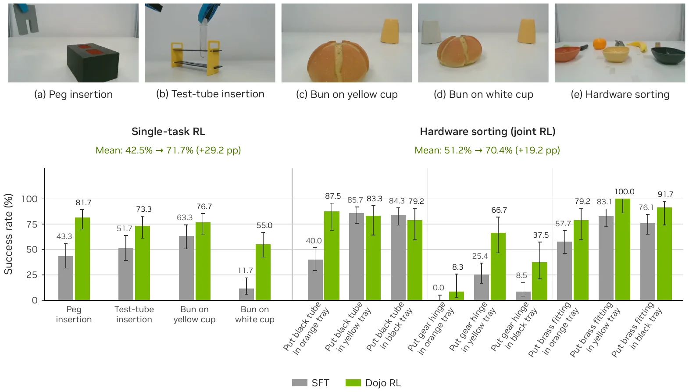
§4.5.3 的“43% → 72%”就是附录的 42.5% → 71.7% 取整；四任务等权平均：(43.3 + 51.7 + 63.3 + 11.7) / 4 = 42.5，(81.7 + 73.3 + 76.7 + 55.0) / 4 = 71.7，对。“51% → 71%”是 51.32% → 70.88%。要留意三点：五金分拣的 SFT 和 RL 是在不同场次采的（附录自己写明）；RL 组的 24 次里有 4 次是用来挑检查点的，评测和选择没有完全分开；批量 / 组大小对比只有单次运行。
长时程执行光靠强策略不够：多阶段、任务级决策、意外失败都难在连续执行里解决；语言指令也会漏掉意图的一些方面（比如哪只手、哪个位置）。两条互补的路：G.1 用 CaP 组合技能和恢复；G.2 通过 WAM API 用视觉目标引导。
G.1 用代码即策略组合技能和恢复。前沿多模态编程智能体当 System 2（S2），把 GR00T 2 和 CaP 工具组合起来，同时监控进度、从失败中恢复，每次干预后先验证再恢复执行。仿真里 ASPIRE 为每个任务发现调用 GR00T 2 的任务级程序，每个任务在开发种子上比较“程序”和“GR00T 2 单独执行”，哪个成功多用哪个作默认执行者；真机上 GR00T 2 已经能处理大部分操作，就是默认控制器。运行时通过 MCP 暴露 GR00T 2 执行（wam_act 带任务提示执行并返回反馈，stop_wam 在需要恢复时终止）、观测工具、CaP 原语（经逆运动学和运动规划发末端和夹爪指令；观测原语用视觉基础模型做定位和位姿估计）；一个控制 worker 协调执行，保证 GR00T 2 和 CaP 不同时控制机器人。智能体拿到操作指南（AGENTS.md）、技能文档和任务上下文（阶段、成功判据、已知失败模式）。
仿真评测（RoboCasa365、RoboDojo，四种配置）：ASPIRE 每任务用 15 个开发种子发现程序；在 30 个开发种子（含那 15 个）上比较程序和 GR00T 2 单独执行，选默认执行者（平局保留程序），用 SFT 检查点时 RoboCasa365 的 50 个任务里 23 个选了 GR00T 2，RoboDojo 的 54 个任务配置里 12 个。测试每任务 50 个留出种子。只用 SFT，GR00T 2 在两个排行榜上都是非智能体策略里最高。RL 后训练主要提精度：RoboDojo Precision 40.5% → 53.7%，平均 RoboCasa365 67.2% → 72.4%、RoboDojo（布局库 0）35.2% → 40.8%。智能体执行对记忆和推理类任务帮助最大：RoboCasa365 Composite-Unseen 38.2% → 69.5%，RoboDojo Memory 36.0% → 93.7%。SFT + RL + 智能体在 RoboCasa365 上 88.0%（排行榜原第一是智能体提交 HexaShell 1.5，85.6%），RoboDojo（只测布局库 0）75.8%。S2 不干预的回合几乎都成功（RoboDojo 1,320 个里只有 29 个失败，RoboCasa365 1,512 个里 20 个）；干预的回合里 RoboDojo 24%（188 / 773）、RoboCasa365 56%（553 / 988）救回来了。失败主因是恢复需要的操作太精细、运动规划工具做不到（38% / 39%），或状态已经不可恢复（物体掉地、时间不够，24% / 38%）。
| 方法 | 类型 | 平均 | Atomic-Seen | Comp.-Seen | Comp.-Unseen |
|---|---|---|---|---|---|
| RoboCasa365 | |||||
| HexaShell 1.5 | 智能体 | 85.6 | 91.1 | 85.0 | 80.0 |
| Awomo-0.5I | WAM | 64.4 | 86.5 | 58.8 | 45.2 |
| minionx | VLA | 62.6 | 81.8 | 60.0 | 43.6 |
| Awomo-0.5V | WAM | 62.5 | 85.0 | 60.4 | 39.4 |
| Axiom-0 | VLA | 61.6 | 86.5 | 59.4 | 35.8 |
| Paimon-0 | VLA | 58.1 | 79.3 | 55.8 | 36.7 |
| Xiaomi-Robotics-1 | VLA | 57.4 | 80.2 | 57.1 | 32.1 |
| GR00T 2 – SFT | WAM | 67.2 | 87.4 | 73.6 | 38.2 |
| GR00T 2 – SFT + RL | WAM | 72.4 | 92.5 | 81.5 | 40.6 |
| GR00T 2 – SFT + 智能体 | 智能体 + WAM | 81.8 | 88.2 | 86.9 | 69.5 |
| GR00T 2 – SFT + RL + 智能体 | 智能体 + WAM | 88.0 | 95.6 | 92.0 | 75.5 |
| 方法（RoboDojo） | 类型 | 平均 | Gen. | Precision | Long-Hor. | Memory | Open |
|---|---|---|---|---|---|---|---|
| Q0-Preview | 智能体 | 68.9 | 58.7 | 58.5 | 58.5 | 93.7 | 75.0 |
| GO-3 Nano Preview | 智能体 + WAM | 56.4 | 33.7 | 76.0 | 53.5 | 63.7 | 55.3 |
| PyRUA-Lean | 智能体 | 50.4 | 43.2 | 38.3 | 43.8 | 68.3 | 58.3 |
| HexaShell-Preview | 智能体 | 46.9 | 34.5 | 32.0 | 31.5 | 81.0 | 55.3 |
| WorldScape-R2 SI | 智能体 + WAM | 39.4 | 35.8 | 15.5 | 34.3 | 63.7 | 47.5 |
| EmbodiedEvo | 智能体 | 39.0 | 30.8 | 16.3 | 21.8 | 76.7 | 49.3 |
| WALL-OSS-1.0-lite | VLA | 35.0 | 37.9 | 29.1 | 32.3 | 56.0 | 19.6 |
| GR00T 2 – SFT | WAM | 35.2 | 40.0 | 40.5 | 53.8 | 36.0 | 5.8 |
| GR00T 2 – SFT + RL | WAM | 40.8 | 45.0 | 53.7 | 55.0 | 39.3 | 11.0 |
| GR00T 2 – SFT + 智能体 | 智能体 + WAM | 72.3 | 64.0 | 62.5 | 62.3 | 93.7 | 79.2 |
| GR00T 2 – SFT + RL + 智能体 | 智能体 + WAM | 75.8 | 67.7 | 68.8 | 68.0 | 95.0 | 79.5 |
排行榜数字截至 2026-11-06。GR00T 2 的 RoboDojo 结果只用布局库 0，所以 SFT 行和表 31 的三库官方评测（35.5%）略有不同。智能体配置的默认执行者在同一基准的开发种子上选，和测试种子不重叠。
§4.5.4 说 SFT 版“比之前最好的高 2.8 点”：67.2 − 64.4（Awomo-0.5I）= 2.8，比较对象是非智能体条目；表里的智能体条目 HexaShell 1.5 是 85.6，比 SFT 版高 18.4 点。只有 SFT + RL + 智能体（88.0）才在包括智能体在内的全表排第一，领先 2.4 点。RoboDojo 同理：SFT 版 35.2 只比 WALL-OSS-1.0-lite（35.0）高 0.2 点；SFT + RL + 智能体 75.8 比 Q0-Preview 68.9 高 6.9 点，但 GR00T 2 只测了三个布局库之一，排行榜条目是三库。RoboDojo 平均是五个维度的均值：(40.0 + 40.5 + 53.8 + 36.0 + 5.8) / 5 = 35.22，对上。
真机长时程。多阶段装配：玩具飞机（机身、两翼、两颗螺丝，用电钻，要翻面，成功要求两翼都拧紧且电钻放下）、拖拉机（两个小前轮、两个大后轮，翻面再翻回）、Hot Wheels（装对的前后轮、方向正确的车头盖，用电钻固定），每次从倒乱的零件开始；SFT 69 / 51 / 23 → DAgger 84 / 71 / 78 → 加智能体 98 / 97 / 97。重复精密插入：五根网线按固定顺序插进五个指定端口，CaP 用 SAM 3 和深度定位全部 12 个候选端口面、抓取并沿无碰撞路径送到预插入位姿，GR00T 2 插入，S2 检查链路和端口；卡住或超过 60 秒由 CaP 拔出重试，每端口最多 3 次。五个充电器：人用手指依次指出 2 × 6 共 12 个一模一样插座里的 5 个，S2 把手势落到具体插座（SAM 3 给独立解读），CaP 抓取运送、GR00T 2 插入，S2 看对应字母灯是否亮起，每个插座最多 3 次、每次 90 秒。RL 让网线从 12 / 20 升到 19 / 20、充电器从 2 / 20 升到 20 / 20。失败分析：300 个 SFT + DAgger + 智能体装配回合里 8 个失败：3 个是螺丝没拧到底但 GR00T 2 和 S2 都判为完成；3 个是干预太晚（小轮装到了错误的后轮毂上，CaP 技能没法可靠拆下）；2 个是物理限制（螺丝掉下桌、零件卡死，短暂人工帮助后能完成，但按自主协议算失败）。重复插入 40 个回合只失败 1 个：SAM 3 抓偏，预插入位姿有偏移，RL 策略往端口走，但对齐需要一边保持前推和托住连接器、一边做小的探索动作，超过 60 秒。
G.2 用视觉引导驾驭。和 G.1 不同，这里 GR00T 2 是唯一的控制器，智能体只通过 WAM API 塑造它的行为。接口把“做什么、在哪”和“怎么做”分开：智能体每步指定执行的手臂，在一路场景相机图像上给出抓取点和释放点的像素坐标；GR00T 2 决定抓取姿态、接近方式和中间所有动作。作者观察到 GR00T 2 对条件帧里的细节很敏感，所以直接把点画在条件帧上：实心圆是抓取点，十字是释放点，用执行手臂的颜色（左品红、右青），只标执行的那只手、只画在场景相机的当前帧上，同时给智能体的单步指令。智能体循环三层：S2（智能体，规划步骤、判断是否完成），S1（GR00T 2，执行当前步），以及中间基于规则的“线束”程序（把指令和点传给 GR00T 2，决定何时再问智能体）。智能体用 GPT-6 Astra，零样本，每回合一个对话；手臂松开物体、快速 VLM 完成检查器报告完成、或 45 秒没有结束时再问智能体，它决定前进、重做、重规划或结束。中期训练：预训练没见过标记，所以要中期训练；从已有示范里检测每只手的抓取和释放事件自动生成点标签（下一个事件是抓取，就把抓取标记放在那次抓取、释放标记放在下一次释放；已经拿着东西，抓取标记留在上一次抓取），标记是事件时刻的末端位置投影到场景相机；只标下一个要动的手臂，绝不在另一只手要动时单独标这只手，所以“没标的手不该动”。每个点条件检查点从预训练检查点中期训练 2 万步（AdamW，学习率 5 × 10−5，warmup-stable-decay），并用同样数据、相机、日程和算力训练一个不带标记的纯语言检查点作对照。
| YAM | Dexter | |
|---|---|---|
| 末端 | 两个平行夹爪 | 两只 Sharpa 五指手 |
| 策略相机 | 顶部、两腕、底部 | 头部、两腕 |
| 标记画在 | 顶部相机 | 头部相机 |
| 抓放事件 | 夹爪开合 | 指尖接触力 |
| 标记投影 | 每工作站标定（实验室数据），标称相机模型（额外遥操作数据） | 标称相机模型 |
| 中期训练数据 | 额外遥操作约 1.4 万小时（权重 0.7）+ 实验室示范约 340 小时（0.3） | 和 YAM 联合：YAM 混合（0.71）+ 实验室 Dexter 示范约 1.13 万回合（0.29） |
| 全局 batch、GPU | 320，32 块 GB300 | 448（平均 320 YAM + 128 Dexter），64 块 GB300 |
| 动作块 | 预测 48 个动作（30 Hz 下 1.6 秒），每次调用执行前 30 个 | |
| 单步指令 | “use the <arm> arm to …” | “… with the <arm> hand” |
评测。三种设置：GR00T 2（纯语言检查点、原始任务指令）；GR00T 2 + 智能体（语言）；GR00T 2 + 智能体（语言 + 视觉，点条件检查点）。YAM 短时程基准用反事实指令对：同一场景（含干扰物）只改要求的行为，一个不管指令做同一件事的策略每对最多做对一条；8 个指代类别各 3 对，共 24 对 48 条指令，每条每种设置 3 次（144 次），报 pass@1 和 pass@3。Dexter 短时程是彩色方块抓放，32 个任务分四个重叠类别（属性 6、空间 12、序数 7、组合 9），每种设置每任务 2 次，正确方块由允许的手放进指定篮子并保持 2 秒算成功。长时程：两台机器人的垃圾分类（5 件物品放进按 20 种布局排列的堆肥、回收、垃圾桶，每件对了 0.2 分），以及 YAM 上 NIST 任务板拆解压力测试（USB 线、两个插头、两个齿轮，取下 0.1 分、放对 0.1 分）。
| 表 22 · 视觉引导全部基准 | n | GR00T 2 | + 智能体（语言） | + 智能体（语言 + 视觉） |
|---|---|---|---|---|
| YAM 指令跟随（pass@1，%） | 144 | 41.7（60） | 55.6（80） | 83.3（120） |
| Dexter 指令跟随 †（%） | 64 | 29.7（19） | 32.8（21） | 70.3（45） |
| YAM 垃圾分类（整任务成功，细则均分） | 20 | 0/20（0.20） | 0/20（0.46） | 17/20（0.94） |
| YAM 电路板拆解（压力测试） | 10 | 0/10（0.12） | 0/10（0.07） | 3/10（0.46） |
| Dexter 垃圾分类 | 20 | 0/20（0.40） | 1/20（0.46） | 9/20（0.77） |
† 用更早的模型实现得到。YAM pass@3 是 64.6%、79.2%、89.6%。
| 类别（每类 18 次） | GR00T 2 | + 语言 | + 语言 + 视觉 |
|---|---|---|---|
| 名称 | 61.1 | 88.9 | 100.0 |
| 空间 | 50.0 | 55.6 | 100.0 |
| 序数 | 33.3 | 88.9 | 94.4 |
| 数量 | 27.8 | 38.9 | 66.7 |
| 手臂 | 50.0 | 50.0 | 77.8 |
| 排除 | 27.8 | 55.6 | 100.0 |
| 动作 | 55.6 | 44.4 | 72.2 |
| 抓法 | 27.8 | 22.2 | 55.6 |
| 表 24 · 垃圾分类（20 回合中位数） | 智能体轮数 | 时延（s） | 成本（USD） | 等待（%） | 回合（s） |
|---|---|---|---|---|---|
| YAM + 智能体（语言） | 10.5 | 7.4 | 0.35 | 29 | 306 |
| YAM + 智能体（语言 + 视觉） | 9 | 7.5 | 0.26 | 38 | 186 |
| Dexter + 智能体（语言） | 9 | 6.1 | 0.15 | 35 | 170 |
| Dexter + 智能体（语言 + 视觉） | 9 | 5.5 | 0.14 | 32 | 178 |
是否真的在跟随引导。只看成功率不够，可引导的策略应该在只改引导时改变行为。YAM 反事实对上，若一对的两条指令都在三次里至少成功两次算“解决”：GR00T 2 解决 4 / 24 对，语言引导 10 对，视觉引导 19 对。反过来，GR00T 2 的 60 次成功里有 24 次（40%）来自“对应的另一条三次全失败”的指令，像是不管指令做同一件事；这个比例语言引导降到 12.5%（10 / 80），视觉引导 5.8%（7 / 120）。YAM 垃圾分类里，视觉引导时被标（且被点名）的手臂做了 172 次夹爪闭合中的 169 次（98.3%），语言引导时点名手臂是 181 次中的 164 次（90.6%）。成本和时延：视觉引导每回合中位 9 轮智能体，YAM 0.26 美元、Dexter 0.14 美元，机器人分别有 38% 和 32% 的时间在等智能体；YAM 上 GR00T 2 没用 §4.6.1 的加速（每次约 0.6 秒）。步骤结束检测：YAM 长时程里 435 次步骤结束查询有 418 次由夹爪事件触发（不需要调用模型），17 次由 45 秒上限触发；完成检查器本是给“不松手就结束”的步骤（如关抽屉）用的，回放日志显示即使它永远正确，确认也要在步骤结束后 3.9–6.7 秒（夹爪事件约 1.5 秒），还占智能体和检查总费用的 26–36%，所以只当后备。失败分析：YAM 垃圾分类视觉引导丢了 100 件中的 6 件（3 个回合），每个都是失败的交接；语言引导丢 54 件，21 件是智能体说对了桶、GR00T 2 放错了桶或动错了物品，20 件因为智能体把剩余步骤花在找回放错的物品上而没尝试。Dexter 垃圾分类放错桶的件数：视觉引导 11、语言引导 43、GR00T 2 原始 56，而“放进了某个桶”的比例三者相近（72%、65%、71%），差别主要在选对桶。
这一节和用户的 LIBERO 复现直接相关，所以单独展开。它是整份白皮书里唯一出现 LIBERO 的地方；白皮书没有报告 GR00T 2 在标准 LIBERO 四个套件上的成功率。
做了什么。仿真里可以不用智能体，直接从仿真器状态算出标记，单测“画上点能不能引导模型”。在 LIBERO-PRO（扰动 LIBERO（论文）场景和指令的变体）上选了 45 个任务，每任务 10 回合，有效回合 448 个（白皮书没说另外 2 个为什么无效）。任务里包括一个双碗场景的空间指令变体，这是“更早的一个纯语言检查点会失败”的场景，专门用来测语言弱的地方。对比两个单臂检查点，都在 RoboCasa365、LIBERO 和 DROID 上中期训练 2 万步：一个纯语言，一个点条件。这个仿真检查点用的是更早、信息更多的接口形式：按时间着色的末端路径，加上下一个抓取或释放点的圆盘（真机用的是只有两个点的版本）。
| LIBERO-PRO 45 任务 × 10 回合 | 成功 / 有效 | 成功率 | 双碗变体 |
|---|---|---|---|
| 纯语言检查点 | 312 / 448 | 69.6% | 18 / 70 |
| 点条件检查点，不画标记 | 325 / 448 | 72.5% | 20 / 70 |
| 点条件检查点，画标记 | 381 / 448 | 85.0% | 41 / 70 |
逐任务：画标记的检查点比纯语言检查点好 13 个任务、差 8 个、持平 24 个。
复算。312 / 448 = 69.64%，381 / 448 = 85.04%，325 / 448 = 72.54%；45 × 10 = 450，448 有效。13 + 8 + 24 = 45。双碗变体 70 回合，按每任务 10 回合是 7 个任务；画标记带来的 69 个回合提升里有 23 个（33%）来自这 7 个任务，而它们正是按“语言检查点会失败”挑进来的。逐任务符号检验 13 胜 8 负（不计平局），双侧 p ≈ 0.38，提升集中在少数任务上，不是全面的。
和标准 LIBERO 协议的差别（标准协议见本站 LIBERO 精读和 OpenWAM 页的 LIBERO 问答）：
所以这三行数字只能用来看“同一模型画不画标记”的相对差别（+12.5 个百分点，其中“点条件训练但不画标记”只比纯语言高 2.9 点，说明提升主要来自推理时的标记），不能拿去和别家在 LIBERO 上报的 95%+ 成功率放在一张表里。要在 LIBERO 上用 GR00T 系列做基线，目前能引用的仍是 Isaac-GR00T 各版本 README 里的 N1.5–N1.7 数字（各有自己的口径，见 GR00T 页读者注 25）；GR00T 2 的 LIBERO 数字要等 12 月代码发布后自己测。
局限（G.2 原文）：点只给空间目标和执行手臂，不给操作策略，所以抓法和动作类的提升小；每步只动一只手，协调的双臂动作被排除，交接变成两个单臂步骤；真机上没测对新场景和新物体的泛化。
G.3 走向机器人自我改进。AutoResearch 研究怎样通过自主实验改进学习算法，CaP 提供结构化编排和专门干预，视觉引导让高层推理模型通过更丰富的接口驾驭基础策略。作者设想把三者合成一个自我改进的循环：部署中智能体执行和引导找出难的状态、生成纠正行为、收集暴露当前策略局限的交互经验；这些经验进入 AutoResearch 发现更好的后训练策略，成功的智能体行为蒸馏回基础策略。这是未来工作。
H.1 全身潜在动作上的 Turbo。两层结构扩展成三层（图 9）：S2 推理模型选任务；S1 Turbo 根据任务和观测，在 SONIC 的紧凑潜在动作空间里生成短时程全身运动指令；S0 SONIC 把它们变成关节级指令并保持平衡。S1 和 S0 都在机器人上跑。Turbo 以 1 Hz 预测包含未来 1.6 秒 SONIC 运动 token 和夹爪宽度指令的动作块，按 50 Hz 采样，每个 20 ms 控制步 SONIC 收到对应的低维运动 token 加当前机器人状态，输出关节位置目标；夹爪宽度不经过 SONIC。采集、仿真和部署用同一个 token 空间：遥操作时操作者的动作被编码成 token 由 SONIC 执行，示范直接录在策略的动作空间里。
H.2 真实世界全身移动操作。四类任务（图 57）。数据：爆米花 1,500 回合（17 小时）；清理桌面连续多物体回合 3,995 个（通用 1,105、房间 375、地面 2,515）；地面拾取 3,402、桌面拾取 3,292；擦洒出物 292 回合（3 小时）；每个回合都审过打分。爆米花和擦地是单任务策略，抓放（桌面、地面、放进桶、清理片段）是多任务策略，用十字准星标目标（每段用 VLM 标一次、点跟踪器在视频里传播）。对比的 GR00T 1.7、π0.5 和扩散策略（DP）用相同示范、相同 token 动作空间和相同相机后训练。评测：爆米花 48 次固定组合，每次装满并放好两杯；清理桌面 30 次，每次 6 件物品全部进桶才算成功；桌面抓放 30 次（30 件家用物品，25 硬 5 软，放在三种高度桌子的十个位置，每次 30 秒）；地面拾取用同样 30 件物品；擦洒出物 30 次完整流程。Turbo 爆米花 48 / 48，约 41 秒两杯；GR00T 1.7 83%，约 48 秒两杯。清理桌面 28 / 30，失败是餐巾、薯片袋这类扁平物体夹空，或物体被碰出够不着的范围；地面拾取 25 / 30；擦洒出物 14 / 30，GR00T 1.7 仍是最好的基线。
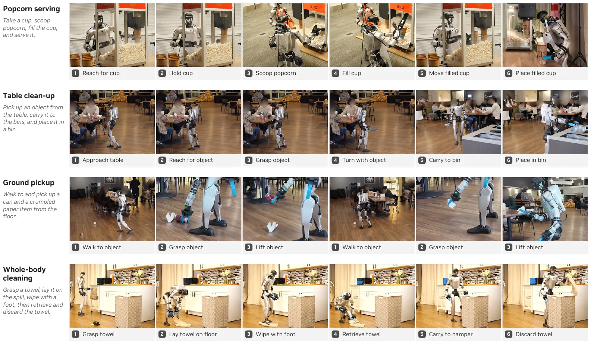
| 表 25 · G1 真实全身移动操作（S0 = SONIC） | 次数 | DP | π0.5 | GR00T 1.7 | GR00T 2 Turbo |
|---|---|---|---|---|---|
| 爆米花舀装和服务 | 48 | 27.1 | 0.0 | 83.3 | 100.0 |
| 清理桌面（多种物体） | 30 | 0.0 | 0.0 | 73.3 | 93.3 |
| 地面拾取（多种物体） | 30 | 36.7 | 30.0 | 50.0 | 83.3 |
| 擦洒出物（全身） | 30 | 10.0 | 0.0 | 43.3 | 46.7 |
| 平均 | 18.5 | 7.5 | 62.5 | 80.8 |
H.3 WAM 比 VLA 更会用仿真数据。以动作为中心的 real-to-sim：遥操作回合有动作和相机画面，但没有桌子和物体的准确位姿；从头部相机图像初始化仿真摆放，用 CMA-ES 细化。在 MuJoCo 或 Isaac Lab 里用和真机相同的 SONIC 重放这条动作，动作固定、优化场景：每代并行评估 48 个候选场景，先拟合桌子位置、高度和偏航，再拟合物体种类、位置和朝向。只有两指都夹住、举起、扛住一个等于物体重量的 30 帧扰动力再保持 100 帧，拟合才被接受。然后把这些轨迹渲染到程序生成、光照和相机随机的环境里，按真机格式记录 token 和图像。共生成 25 万回合、1,000 小时。分布内（真机数据采集的环境）和分布外（新场景和位置）各 30 次：
| 表 26 · G1 桌面抓放 | 分布内 真机 | 真机 + 仿真 | 分布外 真机 | 真机 + 仿真 |
|---|---|---|---|---|
| π0.5（VLA） | 40.0 | 16.7 | 0.0 | 13.3 |
| GR00T 1.7（VLA） | 46.7 | 66.7 | 6.7 | 40.0 |
| GR00T 2 Turbo（WAM） | 73.3 | 83.3 | 6.7 | 63.3 |
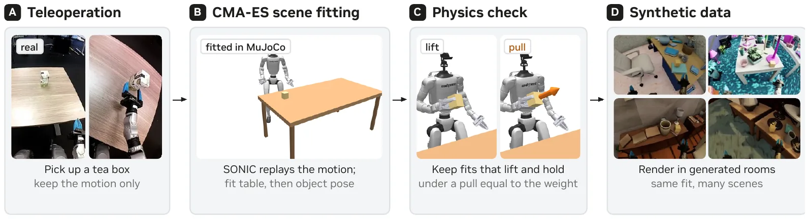
分布外 Turbo 失败率从 93.3% 降到 36.7%，去掉 (93.3 − 36.7) / 93.3 = 60.7% 的失败；GR00T 1.7 从 93.3% 到 60.0%，去掉 35.7%，差 25 点，对上原文的 61%、36%。两个联合训练模型 19 对 12 次成功（30 次中），我算的双侧 Fisher 精确检验 p ≈ 0.12，原文也说只是“提示性的”。另外 π0.5 加仿真数据后分布内从 40.0% 掉到 16.7%，白皮书只是一句带过。作者对 WAM 更会用仿真数据的解释（视频预测让渲染帧和相机帧落到同一个隐空间）是假设，没有单独实验。
I.1 加速模型推理。区分两个时间：模型预测时延（一次预测请求里的编码和迭代去噪）和“观测到动作生效”时延（再加上观测准备、序列化、传输、响应处理和控制器调度，附录图 60）；用流式和预取把编码挪到请求之前的配置会单独标出，因为它的前台预测时间不含编码。做法同 §4.6.1：复用文本特征，预算时间步条件，动作专用的去噪步复用最近一次视频步的 KV，持久缓冲减少缓存准备和拷贝；TensorRT 编译 VAE 编码器和 Transformer、CUDA graph 重放；对支持的检查点在代表性观测上校准，对联合 Transformer 里部分投影层和前馈层用 FP8，归一化层和动作专用引擎保持更高精度，部分配方 VAE 编码也用 FP8。三个具身各一个检查点，都是 2B 配置，每路相机 5 个历史帧、224 × 320：Dexter 三路视图占四个模型槽、48 步动作；YAM 四路、48 步；G1 Turbo 三路、80 步。2v4a 表示视频 2 步、动作 4 步去噪：Dexter 2v2a、YAM 2v4a 在基线和优化中不变，G1 从 2v4a 改成 1v2a。Dexter 用 FP16 混合 Transformer 引擎加 BF16 流式 VAE 和预取；G1 用 FP8，VAE 编码算在预测时延里；YAM 用 FP8 联合 Transformer 和 VAE 引擎、BF16 动作引擎、整窗 VAE 预取（MP4V）；Dexter 和 YAM 的 eager 时间含 VAE 编码，优化后的时间不含请求前已完成的编码。服务路径：相机历史处理用有界 CPU worker 池，更快的 JPEG 编解码，更少的内存拷贝，支持时用增量流式 VAE。数值验证以同一检查点的 eager BF16 为参照，固定观测、条件、去噪表和初始噪声，在有效的新生成动作上算 MSE（不含填充和已承诺的 RTC 前缀），再用仿真和真机检查成功率、完成时间和动作质量。
| 表 27 · 中位预测时延 | 模型 | 硬件 | 基线（ms） | 优化（ms） | 加速 |
|---|---|---|---|---|---|
| Dexter | GR00T 2 | GeForce RTX 5090 | 449.20 | 152.78 | 2.94× |
| GR00T 2 | DGX Station GB300 | 219.02 | 48.47 | 4.52× | |
| G1 | GR00T 2 Turbo | GeForce RTX 5090 | 224.73 | 38.40 | 5.85× |
| GR00T 2 Turbo | Jetson Thor（120 W） | 720.41 | 123.97 | 5.81× | |
| YAM | GR00T 2 | GeForce RTX 5090 | 550.96 | 179.79 | 3.06× |
| GR00T 2 | DGX Station GB300 | 386.06 | 54.00 | 7.15× |
加速比都能复算：449.20 / 152.78 = 2.94，219.02 / 48.47 = 4.52，224.73 / 38.40 = 5.85，720.41 / 123.97 = 5.81，550.96 / 179.79 = 3.06，386.06 / 54.00 = 7.15，“2.9 到 7.2 倍”对。但同一个“GR00T 2 在 RTX 5090 上”有三个数：表 27 的模型预测时延（Dexter 152.78 ms、YAM 179.79 ms，优化后、编码已预取）；图 23 和 §4.3 的“每次服务调用”时延（YAM 后训练模型，GR00T 2 171 ms、Turbo 52 ms）；附录 D 图 38 的 A/B 服务日志里的服务器计算时间。白皮书自己在 D.6 的脚注里说这几种是不同的测量。比较 GR00T 2 和 Turbo 时，同口径的是 171 对 52（约 3.3 倍）；Turbo 在 G1 上的 38.40 ms 和 GR00T 2 在 YAM 上的 179.79 ms 视图数、动作长度和去噪步都不同，不能直接相除。
I.2 策略平滑度。从在 RoboDojo 示范上后训练 3 万步（不带 RTC）的策略出发，在八个精密任务的 800 条示范上再微调 5 千步，给条件动作前缀加 σ = 0.1 的高斯噪声；对照是不加噪声的干净前缀 RTC 微调。两种都在推理时以干净的已承诺前缀为条件；朴素异步参照用同一个带噪前缀微调过的权重、推理时关掉前缀条件。所有条件每 8 个指令重规划一次、25 Hz；4 和 8 个指令的固定延迟对应 160 和 320 ms，延迟通过动作队列建模、不在仿真器里加墙钟等待。成功率和进度每个条件 1,200 个匹配回合（每任务 150 个布局）；jerk 另做诊断，每个条件 120 个匹配布局（每任务 15 个，分布在三个布局库）；指令关节 jerk 用 Δt = 0.04 s 的三阶差分，不含夹爪和启动段。
| 表 28 · 带噪前缀 RTC | 成功 ↑ | 进度 /100 ↑ | Δ p95 jerk ↓ | Δ 峰值 jerk ↓ |
|---|---|---|---|---|
| 4 个指令延迟：160 ms | ||||
| 朴素异步 | 32.83% | 42.03 | 0.0% | 0.0% |
| 干净前缀 RTC 微调 | 30.67% | 39.48 | −31.1% | −80.2% |
| 带噪前缀 RTC（本文） | 34.75% | 43.16 | −6.5% | −69.2% |
| 8 个指令延迟：320 ms | ||||
| 朴素异步 | 15.00% | 22.06 | 0.0% | 0.0% |
| 干净前缀 RTC 微调 | 21.42% | 29.81 | −87.8% | −16.3% |
| 带噪前缀 RTC（本文） | 21.42% | 29.64 | −87.2% | −22.5% |
320 ms 时两种 RTC 成功率完全相同（21.42%），干净前缀的进度和 p95 jerk 还略好；带噪前缀只在峰值 jerk 上好一点（−22.5% 对 −16.3%），而且附录 I.2 说按仿真关节状态算，带噪 RTC 的峰值反而比异步高 13.4%。160 ms 时带噪前缀成功率最高（+1.9 点），但 p95 跨块 jerk 只降 6.5%，干净前缀降 31.1%。1,200 回合下 32.83% 和 34.75% 相差 23 个回合，单个比例的二项标准误约 1.4 点，两者之差的标准误约 1.9 点，差值约 1 个标准误（按独立样本粗算；回合是匹配的，配对检验会更紧，白皮书没给）。所以“带噪前缀更好”主要是 160 ms 下成功率和平滑度的权衡。
I.3 让任务完成速度超过示范。“GR00T 2-Accelerated”：把任务分成有语义的阶段，智能体根据加速后 rollout 的失败迭代搜索每个阶段的速度表；部署时轻量的观测条件子任务预测器预测和动作块时域对齐的未来阶段序列，再用轨迹变换函数生成新动作块（图 20），用时间对齐和跨块 jerk 优化保持连续。在 Dexter 后训练基准的三个任务上：
| 表 29 · Dexter 任务 | 方法 | Make Shipping Label | Flashlight Battery | Crude Salt Filtering |
|---|---|---|---|---|
| 进度 ｜ 成功率 | GR00T 2 | 0.78 ｜ 60% | 0.86 ｜ 55% | 0.98 ｜ 85% |
| GR00T 2-Accelerated | 0.81 ｜ 65% | 0.93 ｜ 60% | 0.94 ｜ 80% | |
| 平均完成时间（s，仅成功回合） | GR00T 2 | 95 | 80 | 184 |
| GR00T 2-Accelerated | 81 | 66 | 137 |
(95 − 81) / 95 = 14.7%，(80 − 66) / 80 = 17.5%，(184 − 137) / 184 = 25.5%，对上 §5 的“15 到 26%”。成功率：两个任务各升 5 点，粗盐过滤降 5 点、进度从 0.98 降到 0.94。按表 1 每任务 20 次，5 点就是 1 次，所以“保持成功率”在这个样本量下成立，但也分辨不出小幅下降。完成时间只在成功回合上平均，加速版成功回合集合不同，严格说不是同一批回合的配对比较。
J.1 真实到仿真生成高保真任务。要同时复现视觉布置和决定成败的物理交互；颗粒和可变形物体既要稳定、逼真，又要够快才能大规模评测，所以由智能体集成和调参多种求解器：可变形体用 FEM，颗粒用 PBD，另加刚体和关节动力学。装配任务的零件要能装上、在操作中保持连接、和夹爪及工具交互：玩具飞机、Hot Wheels、拖拉机都按单独零件、紧固件和手持电钻重建。SimFoundry 的工具用真机视频指导场景重建和细化，扫描、照片和物理测量重建单个资产和它们的功能接口；智能体协助几何、外观、碰撞建模和仿真设置，人类专家把关。每个物体两套碰撞体：粗的用于抓取和与桌面接触，细的用于紧配合插入和用电钻把螺栓拧进螺母（凸包和 SDF 碰撞体，碰撞掩码决定哪两套能相互作用）；一个 Isaac Lab 扩展允许在零件上定义连接点，零件到达预定装配位置（在容差内）就在两个刚体之间建关节。验证分三步：不用机器人、直接对零件和电钻施力按真实顺序装配；抓取和跌落测试；在仿真里重放真机示范。
J.2 用仿真加速开发。仿真和真机评测的相关性（J.2.1）：25 个 YAM 任务、14 个检查点，另有 DROID 具身 10 个任务、5 个检查点；真机每任务 5 次，仿真 10 次；指标是 Pearson r、Spearman ρ 和 SIMPLER 提出的 MMRV（越小越好）。真机用盲测 A/B，每次 2–3 个检查点、按投影叠加对齐仿真的初始化；仿真每个检查点用同样的 10 个固定布局，可以逐布局比较。统计上限：把每个检查点每个任务的真机成功率当真实概率，生成两份独立评测（一份当真机、一份当完美模拟器），
两次二项抽样独立，\(T_c\) 是检查点 c 的任务数；1,000 次重复的 \(\tilde r=\mathrm{corr}(\tilde x,\tilde y)\) 中位数就是这个评测预算下任何模拟器能达到的期望相关。作者的模拟器达到这个上限的 95–99%（附录图 65）。DROID 上 Pearson 0.98、0.95、0.97（进度、成功率、Elo）。推理优化（J.2.2）：每个检查点固定每次预测的动作数，比较原始 PyTorch 和 TensorRT + CUDA graph、比较不同去噪步数；YAM 交接方块试点里几种设置都能完成任务但平滑度不同，真机上同样如此；RTC 的变体也先在仿真里比较。普通同步仿真在等预测时会暂停，复现不了推理延迟对运动中机器人的影响，所以仍要真机检查。预训练加速（J.2.3）：用仿真套件跟踪中间检查点、发现过拟合；用 25 个任务的子集决定哪些检查点值得上真机，最终预训练模型就是先由仿真缩到三个候选、再上真机选出来的；数据管线改动（序列打包、混合分片采样、文本 token 掩码共五种配置）用 YAM Scoop 和 Unscrew 的真机遥操作数据后训练、在对应仿真任务上评测，没有观察到回退才采用。智能体技能（J.2.4）：飞机装配任务提供了开发恢复技能的可重复环境，技能迁到真机。
图 18 的三组数（进度 r 0.93 / ρ 0.84 / MMRV 0.059，成功率 0.92 / 0.89 / 0.055，Elo 0.93 / 0.90）都是 14 个点的相关；n = 14 时 r = 0.93 的 95% 置信区间按 Fisher z 粗算约 [0.79, 0.98]（我算的，白皮书没给区间）。“完美模拟器上限”只反映真机每任务 5 次的抽样噪声，不反映真机场次之间的漂移，所以 95–99% 是一个乐观的比值。§5 自己也承认：仿真对接触丰富的装配、对会钻模拟器空子的 RL 策略、对训练配方之间的比较是否同样可预测，还没验证。真机侧的 Elo 来自 GearArena 的盲测 A/B，就是附录 D 的那套。
J.3 仿真基准。每个结果都是从同一 GR00T 2 预训练模型后训练的单个检查点，用官方任务集、回合数和成功判据；基线取自 2026-11-06 的官方排行榜（GR00T 1.7 除外，作者自己重训重测）。RoboCasa365：365 个任务、2,500 个程序生成的厨房，移动操作机器人用三路 RGB；按官方多任务协议在 Human300 预训练混合上训练，在 50 个目标任务（18 Atomic-Seen、16 Composite-Seen、16 Composite-Unseen，最后一组不在训练里）上评测，总分是 50 个任务的平均。RoboDojo：Isaac Sim 里 14 自由度 ARX-X5 双臂，42 个任务、五个能力维度（泛化（标准和随机布局）、精度、长时程（最长 1,900 个控制步）、记忆、开放词汇无示范），按官方协议跑 42 个任务（54 个任务配置）、三个布局库共 6,300 回合，报部分进度分和成功率。RoboLab：Isaac Lab 里 DROID Franka 上 120 个桌面任务（64 简单、39 中等、17 复杂），每任务 10 回合、默认指令、二值成功。MolmoSpaces：程序生成的 MuJoCo 房屋加 Objaverse 物体，评 Franka DROID 策略，按排行榜默认视图报九个套件（开、关两个铰接；Pick-v1.5 和 Pick-v2 在经典渲染器、filament 渲染器、随机相机下共四个抓取；平放、NextTo、按颜色三个抓放），共 8,915 回合，总分是九个套件的不加权平均，未提交的算 0。RoboLab 和 MolmoSpaces 用的是同一个只在真实 DROID 数据上后训练的检查点。G1 Factory：把 HumanoidMimicGen 的九个 Unitree G1 移动操作任务搬到 Isaac Lab-Arena（搬箱上架、取电钻和转移、按按钮、推货架车），43 自由度 G1，策略控制手臂、手和腰，加上由下肢控制器执行的底座高度和导航指令；每任务用发布数据集的 100 条示范训练，每任务评 100 回合。
| 表 30 · RoboCasa365 | 平均 | Atomic-Seen | Comp.-Seen | Comp.-Unseen |
|---|---|---|---|---|
| π0.5 | 16.9 | 39.6 | 7.1 | 1.2 |
| GR00T 1.7 | 22.1 | 41.7 | 17.7 | 4.4 |
| Paimon-0 | 58.1 | 79.3 | 55.8 | 36.7 |
| Axiom-0 | 61.6 | 86.5 | 59.4 | 35.8 |
| Awomo-0.5V | 62.5 | 85.0 | 60.4 | 39.4 |
| minionx | 62.6 | 81.8 | 60.0 | 43.6 |
| Awomo-0.5I | 64.4 | 86.5 | 58.8 | 45.2 |
| GR00T 2 | 67.2 | 87.4 | 73.6 | 38.2 |
| 表 31 · RoboDojo（三个布局库） | Gen. | Precision | Long-Hor. | Memory | Open | 平均分 | 平均 SR |
|---|---|---|---|---|---|---|---|
| GR00T 1.7 | 4.1 | 1.1 | 11.8 | 2.6 | 1.4 | 7.65 | 4.20 |
| π0.5 | 8.2 | 5.5 | 14.7 | 4.7 | 1.7 | 11.44 | 6.93 |
| Rex-M1 Preview | 26.1 | 23.8 | 33.0 | 48.2 | 6.1 | 33.79 | 27.44 |
| Simate-beta | 28.0 | 26.9 | 43.4 | 33.0 | 8.5 | 33.95 | 27.96 |
| Awomo-0.5 | 23.8 | 33.5 | 26.8 | 41.2 | 22.9 | 35.34 | 29.64 |
| VPP2 | 29.5 | 35.2 | 37.0 | 55.6 | 4.1 | 39.26 | 32.26 |
| WALL-OSS-1.0-lite | 37.9 | 29.1 | 32.3 | 56.0 | 19.6 | 42.59 | 34.97 |
| GR00T 2 | 41.2 | 40.0 | 54.1 | 36.0 | 6.3 | 41.73 | 35.52 |
| 表 32 · RoboLab | 总体 | 简单 | 中等 | 复杂 |
|---|---|---|---|---|
| GR00T 1.7 | 18.9 | 22.8 | 15.9 | 10.9 |
| π0.5 | 28.0 | 29.7 | 31.5 | 13.5 |
| Atomic-WAM | 39.6 | 44.4 | 40.5 | 19.4 |
| HiDream-O1-Embodied | 39.9 | 43.1 | 37.7 | 32.9 |
| FLUX 3 Action | 42.9 | 49.1 | 39.2 | 28.2 |
| BiMind v0.5 | 49.2 | 51.6 | 52.6 | 32.4 |
| Lakeside | 51.0 | 57.6 | 44.1 | 42.4 |
| GR00T 2 | 47.4 | 45.6 | 54.6 | 37.6 |
| 表 33 · MolmoSpaces | Open | Close | Pick v1.5 | v2 classic | v2 filament | v2 RandCam | PnP v2 | NextTo | Color | 平均 |
|---|---|---|---|---|---|---|---|---|---|---|
| π0.5-DROID | 22.7 | 65.1 | 18.1 | 6.4 | 7.0 | 8.0 | 12.0 | 10.2 | 10.4 | 17.77 |
| GR00T 1.7 | 11.9 | 68.0 | 35.3 | 11.7 | 12.5 | 7.8 | 9.4 | 12.9 | 11.6 | 20.12 |
| MolmoAct2 DROID | 11.7 | 71.3 | 43.4 | 20.5 | 21.9 | 11.1 | 15.6 | 18.5 | 19.3 | 25.92 |
| PRTS-Droid | 12.0 | 76.3 | 47.5 | 18.1 | 20.5 | 21.6 | 17.4 | 19.0 | 18.2 | 27.84 |
| WALL-OSS-0.5 | 16.8 | 78.5 | 78.4 | 47.9 | 47.2 | 30.1 | 13.8 | 15.9 | 18.3 | 38.55 |
| Cosmos3-Nano-Policy | 32.0 | 79.1 | 66.5 | 32.3 | 32.2 | 25.7 | 26.0 | 22.9 | 34.3 | 39.00 |
| ZoeInside-VLA | 36.6 | 85.7 | 74.8 | 51.8 | 55.9 | 45.5 | 37.8 | 21.2 | 36.2 | 49.50 |
| GR00T 2 | 20.7 | 79.0 | 71.9 | 42.0 | 42.9 | 20.3 | 44.2 | 37.5 | 47.6 | 45.12 |
| 表 34 · G1 Factory（每任务 100 回合） | Box Lift | Lift-Floor | Table-to-Shelf | Drill Lift | PnP | Obs | From-Holder | Push Shelf | Button | 总体 |
|---|---|---|---|---|---|---|---|---|---|---|
| GR00T 1.7 | 98 | 96 | 77 | 66 | 75 | 69 | 44 | 58 | 42 | 69.4 |
| GR00T 2 | 100 | 100 | 90 | 92 | 87 | 80 | 67 | 74 | 72 | 84.7 |
表 34 的列名在原表里分两层（Box：Lift、Lift-Floor、Table-to-Shelf；Drill：Lift、PnP、Obs、From-Holder；Push：Shelf、Button），这里压成一层，Drill Lift 即 Drill 组的 Lift。表 31 里的 VPP2 和 World Model Lab 站读过的 VPP2 应是同一个模型（未核实）。
MolmoSpaces：(20.7 + 79.0 + 71.9 + 42.0 + 42.9 + 20.3 + 44.2 + 37.5 + 47.6) / 9 = 45.12；G1 Factory：GR00T 2 762 / 9 = 84.67，GR00T 1.7 625 / 9 = 69.44；都对。RoboCasa365 的“比最好的高 2.8 点”是 67.2 − 64.4；Composite-Seen“高 13.2 点”是 73.6 − 60.4（Awomo-0.5V）；Composite-Unseen GR00T 2 只有 38.2，低于 Awomo-0.5I（45.2）和 minionx（43.6）。RoboDojo 平均成功率 35.52 第一，但按平均进度分 WALL-OSS-1.0-lite（42.59）高于 GR00T 2（41.73）；精度维度“领先 4.8 点”是 40.0 − 35.2（VPP2）。RoboLab 排第三（Lakeside 51.0、BiMind 49.2），MolmoSpaces 排第二，和正文一致。
K.1 软硬件栈。每类负载用合适的平台：GB300 训练，RTX PRO 6000 数据处理，L40 / L40S 仿真和评测，Jetson Thor 机载推理。Kubernetes 管 GPU 集群，NVSentinel 监控节点健康，GPU Operator、DCGM 等服务配套；SkyPilot 开集群、调度和管理作业；Ray 在作业内分发工作（训练 worker 和数据摄取都是）；深度学习框架是 PyTorch。
K.2 硬件。预训练 GB300 NVL72（见 §4.7.1；每机柜 18 个计算托盘、72 块 GPU、第五代 NVLink 1.8 TB/s、NVLS 卸载归约，RoCE 跨机柜，集群 2,016 块 GPU / 28 机柜，主预训练用 1,024 块）。仿真和评测用 L40 / L40S（Ada Lovelace，48 GB GDDR6、864 GB/s、142 个 RT 核、568 个 Tensor 核；L40S 低精度 Tensor 吞吐约为 L40 两倍；PCIe Gen4 无 NVLink，所以按环境、检查点、种子分片横向扩展）。在线后训练跨 H100、GB300 和 L40 / L40S 异构池：H100 和 GB300 做分布式策略优化，L40 系列做需要图形能力的仿真采集和评测。
K.3 集群和作业管理。Kubernetes 通过 NVIDIA AI Cluster Runtime 部署（集成 DSX OS 组件），GPU Operator 和 Network Operator 管 GPU 与网络栈，KAI Scheduler 和 Kueue 做调度、准入、优先级、配额和拓扑感知放置；GB300 上用 DRA 驱动管理 ComputeDomain，让 pod 安全地跨节点用 NVLink，NCCL 在 NVLink 域内走 NVLink、跨机柜走 RoCE。每个实验是一个 SkyPilot 托管作业，资源到位后容器组成 Ray 集群，训练驱动为每块 GPU 起一个分布式 worker；Lustre 共享存储放数据集、预训练资产和检查点，节点本地 scratch 放临时文件；SkyPilot 的作业恢复配合训练栈的有界重试和检查点恢复。
K.4 分布式训练。见 §4.7.1。补充：rank 按物理拓扑排序；用联合剖析 CPU 活动、GPU 执行和集合通信时间来区分“到得晚的 rank”和真正的计算慢；运行时协调垃圾回收、控制 CPU 线程放置、平衡加载器并发、异步上报指标；检查点先协调一个一致的前台快照，再后台序列化写盘；“模型制品”只有权重，“续训检查点”还有优化器分片、调度器历史、随机数状态和加载器进度。加载器细节：步表读取绕过文件系统预读（预读曾把每分片的步表 I/O 放大 28–60 倍）；视图按数据集、过滤代码和参数、样本窗口取哈希，化妆性的过滤代码改动不改哈希；视图还带归一化统计（均值、标准差、最小、最大、1 和 99 分位），按快照、具身、动作时域、哪些动作按相对量训练分键；单线程顺序解码 320 × 240 约 7,000 帧/秒；增广是保留每个空间维度 95% 的随机裁剪、缩放到 224 × 320、编解码增广；在共享存储容量有限的集群上，I/O 阶段改用集群生命周期的对象存储，在节点之间转发，源流量不随节点数增长。
| 表 35 · 1,024 块 GB300、100 个稳态步 | 结果 |
|---|---|
| 总样本窗口吞吐 | 约 12,000 个/秒 |
| 每卡样本窗口吞吐 | 11.7 个/秒 |
| 平均暴露加载等待 | 0.37 ms |
| 99 分位暴露加载等待 | 0.61 ms |
| 暴露等待 / 总实测 rank 步时 | 0.049% |
| 表 36 · 数据摄取生产评估 | 指标 | 结果 |
|---|---|---|
| 吞吐和发布（三个作业） | 每作业发布的示范时长 | 约 6,240 小时 |
| 每作业执行时间 | 8.0–8.6 小时 | |
| 端到端吞吐 | 722–780 示范小时 / 小时 | |
| 第一个训练分片就绪 | ≤ 28 分钟 | |
| 转换 10–80% 期间 worker 平均分配率 | > 99.9% | |
| 转换期间资源 | 平均 CPU 利用率 | 97.8% |
| 平均内存 / 节点容量 | 335–384 / 768 GiB | |
| 平均文件系统 / 节点容量 | 80–94 / 约 291 GiB | |
| 恢复（五个中断作业） | 已完成转换时间的有效比例 | 89.8–95.6%，合计 92.4% |
| 重启到首次发布 | 2.4–5.3 分钟 |
表 36 的吞吐负载覆盖 130 万回合、约 18,700 示范小时，每作业 100 个节点、每节点 96 vCPU、768 GiB 内存。6,240 / 8.6 ≈ 726、6,240 / 8.0 = 780，和 722–780 对得上。
K.5 推理基础设施。客户端-服务器：机器人客户端通过共享的请求-应答接口发相机历史、状态和指令，服务器准备输入、返回动作块，客户端映射到机器人指令格式；检查点配置指定需要的历史和具身专用的输入 / 动作表示；接口支持 PyTorch 和优化运行时。流式或预取观测时，服务器校验准备好的视觉输入和相机历史一致。编译出的运行时制品绑定检查点和执行环境：使用前检查检查点身份、输入形状、数值精度、软件版本和 GPU 目标，不兼容就拒绝；需要预热的后端用客户端发来的代表性观测初始化。显存有限的设备上可以把文本编码器权重卸到 CPU。客户端缓冲动作块、按控制器频率调度；开异步预测时边执行当前块边请求下一块；用带时间戳路点的客户端在发给控制器前丢掉过期目标。
K.6 可扩展的多模态数据处理。见 §4.7.3。三条规则：准入和放置（下载一组输入前，按节点预算计入驻留文件、待传输和输出余量；输入就绪才派发回合，在持有输入的节点执行；加载、转换、发布用独立的 Ray worker 池；有界队列限制在途工作）；保留到完成再释放（加载器在交出工作前登记每个使用者对共享输入的占用，回合在中间结果上传、临时输出清理后才释放，最后一个占用释放后才回收文件，所以“使用者完成”而不是预取决定新输入何时进来）；在同一容量预算内恢复（停止的尝试释放过时占用，丢失的输入走同样准入路径在可用节点重建；持久的转换组检查点和发布检查点分别记录可复用的完成结果）。
正式代码：截至 2026-11-17 未发布。项目页在白皮书链接旁标着“Code Available in December”。NVIDIA/Isaac-GR00T 的 main（提交 3b49067，2026-11-10，Apache-2.0）只有 N1 到 N1.7，没有任何 GR00T 2 的模型代码或文档；标签只有 n1-release 到 n1.7-release。Hugging Face 上 nvidia 名下没有 GR00T 2 权重（2026-11-17 用 API 列出，只有 N1–N1.7、GR00T-H 和若干微调检查点）。公开的只有数据：Human-1M-100K（Human-1M 的 10 万小时）和浏览器 PhysicalAI-Human-1M-Explorer；硬件是开源的 GEAR UMI / DexUMI / Neck。
一个公开的开发分支。同一仓库有分支 codex/n2-action-expert，最后一次提交 7e492ad（2026-10-29，提交说明“feat(n2): add frozen-video action expert mode”），README 第一行是“Isaac GR00T 2”。我用 git clone --depth 1 再单独取这个分支，只读了文件名、文档字符串和配置键，没有安装、没有运行。要点：
SPDX-License-Identifier: LicenseRef-NvidiaProprietary。所以本页不抄代码、不给运行结果，只记文件路径和配置键名。这个分支没有在任何发布说明里出现，它和 12 月的正式发布是什么关系不知道。GrootN2（groot/core/training/models/n2/model.py）；configs/model/n2.py 里 model_size 默认“2B”，vae_type 默认 wan21，组件目录同时有 wan_video_vae.py 和 wan22_video_vae.py（对应 GR00T 2 和 Turbo）、transformer_cosmos.py、video_action_attention.py、kv_cache.py（动作步复用 KV）、training_rtc.py（训练时 RTC）、sequence_packing.py（变长打包）；动作配置有 video_loss_scale 和 action_loss_scale 两个损失权重、action_horizon 默认 48、noise_beta_alpha 1.5 / noise_s 0.999（注释写“N1.7-style”）、apply_sincos_state_encoding 默认开（和 N1 一样把关节角变成 sin / cos）；image_crop_fraction 0.95 和附录 K.4 的“随机裁剪保留 95%”一致；文本编码器文件的文档字符串写 Cosmos Reason 1.1 7B。部署侧有 groot/core/policy/n2_policy.py、n2_acceleration.py、n2_predict_graph.py 和 groot/deployment/n2_trt/（TensorRT），另有 skills/autoresearch/。sequence_packing.py 的 AttentionMaskPattern 列了几种 4 × 4 掩码（顺序是条件视频、去噪视频、状态、动作）：disjoint_video_action（动作不看去噪中的视频）、joint_video_action 和 bidirectional_video_action_full（动作看全部视频）等；configs/model/n2.py 的注释写缺省值是 disjoint_video_action。触觉配置 n2_tactile.py 固定用 bidirectional_video_action_full。发布检查点用哪一种要看它的 config，现在无法核实；如果缺省是“不看”，那“动作跟着想象的未来走”就要靠显式配置。另外，除 full 外的所有表里视频行都不看状态和动作，也就是说未来视频的预测不以动作为条件，动作单向读视频，和白皮书“动作跟随想象的未来”的说法一致。models/n2/tactile/（含 encoders/tactile_vae.py）和 n2_tactile.py，配置键 tactile_cfg 的注释是“tactile-force conditioning”。这应是白皮书之外的实验，不代表发布版有触觉输入。lora_rank 默认 4（附录 A.3 用 rank 32）；max_n_cameras 默认 3（白皮书说最多 4 路，YAM 就是 4 路）。这些是可覆盖的缺省值，不算矛盾，只是照默认值跑复现不了白皮书的设定。groot/core/data/packds/ 等新数据模块，具体格式等正式发布再看。以上都只基于文件名、注释和键名，未运行，未核实是否就是白皮书里的模型。
代码发布前，能确定的只有白皮书写的这些：
| 项目 | 白皮书写的 | 出处 |
|---|---|---|
| 输入 | 最多 4 路相机 × 最近 0.8 秒（5 帧，5 fps），224 × 320；机器人状态；一句指令 | §2、I.1 |
| 输出 | 一段动作加每路相机的未来帧；YAM / Dexter 48 步（30 Hz 下 1.6 秒）、通常执行前 30 步；G1 Turbo 80 个 SONIC token（50 Hz 下 1.6 秒） | §2、B.2、G.2、I.1 |
| 去噪步数 | Dexter 2v2a、YAM 2v4a、G1 Turbo 1v2a；仿真到真机任务用动作 2、视频 1 | I.1、B.5 |
| 服务 | 客户端发相机历史、状态、指令，服务器回动作块；客户端缓冲并异步请求下一块；指令不变时复用文本特征；显存紧张可把文本编码器卸到 CPU | §4.6.1、K.5 |
| 上新机器人 | 把相机对应到头部 / 腕部视角；把动作表达成已支持的动作空间或新增一个（每具身一行编解码器）；用目标任务示范后训练 | §2 |
| 少样本适配 | rank-32 LoRA 加在 Transformer 所有线性层；冻结文本编码器、VAE、状态 / 动作头；每回合 100 个窗口、按冻结模型损失加权采样；单张 RTX 5090 约 30 分钟；合并进权重 | A.3 |
| 全量后训练 | DexUMI 例子：60,000 步、学习率 3 × 10−5 | E.5 |
| 平滑执行 | 已后训练策略上再做 5k 步带噪前缀 RTC 微调，前缀噪声 σ = 0.1 | I.2 |
| 视觉引导 | 从预训练检查点中期训练 2 万步（AdamW，5 × 10−5，WSD 日程），点标签由夹爪 / 指尖事件自动生成 | G.2 |
| 无遥操作学新任务 | 示范（人 / UMI）和目标机器人 play 数据混合（人 1 : 1；UMI : YAM 约 0.6 : 0.4）；UMI 腕部画面要重渲染成目标相机视角；UMI 动作改写到目标机器人的动作空间和统计 | B.1、B.2、E.3 |
能不能复现论文的表。表 1–7、13–17、22–29 都是真机（YAM、Dexter、XHAND、G1）结果，复现不了。能自己测的是五个公开仿真基准（表 30–34：RoboCasa365、RoboDojo、RoboLab、MolmoSpaces、G1 Factory），以及等权重发布后在 LIBERO 上按标准协议重测；白皮书本身没有标准 LIBERO 数字（见上）。
先说去噪。GR00T 2 生成未来画面和动作，都是从纯噪声开始，一步步“擦掉噪声”。每一步做一次 DiT 前向，模型预测一个速度（“噪声减数据”），再用 Euler 法走一小步，噪声强度 σ 从 1（全是噪声）降到 0（干净结果）。步数越多越精细，也越慢。部署时步数压得很少（附录 I.1）。
2v4a = 视频（video）去噪 2 步，动作（action）去噪 4 步。两者在同一个 DiT 的同一条序列里，但步数可以不同。动作要 4 次更新，视频只要 2 次，所以 4 次前向里只有 2 次需要算视频（附录 F.1.1、图 46）：
| 动作去噪事件 | 类型 | 这次前向算了什么 |
|---|---|---|
| k = 0 | 联合步 | 整条序列（历史视频、带噪的未来视频、状态、动作）全部过 DiT，视频和动作各走一步 |
| k = 1 | 缓存步 | 只让动作 token 过 DiT；视频和状态的注意力 K、V 直接用 k = 0 那次算好的，视频不更新 |
| k = 2 | 联合步 | 同 k = 0，视频走第 2 步（也是最后一步） |
| k = 3 | 缓存步 | 同 k = 1，复用 k = 2 的 K、V，动作走最后一步 |
所以“前向 4 次、联合 2 次”就是：一共调用 4 次 DiT，其中 2 次是算全序列的“贵”的联合步，另外 2 次是只算动作的“便宜”的缓存步。这和大语言模型的 KV cache 一个道理：前缀的 K、V 算一次存起来，后面只算新的那几个 token。
为什么这样分配。视频 token 远多于动作 token：按本页 3D 动画第 3 幕的算法，每路相机光历史就有 2 × 280 = 560 个 token，四路就是 2,240 个，还没算要生成的未来帧；动作块只有 48 步。缓存步里只有这几十个动作 token 做查询，计算量小得多。另外，机器人执行的是动作，动作需要精细，所以多给几步；未来画面只是给动作当“想象中的参照”，不需要画得很清楚，少走几步就够了。
| 配置 | DiT 前向 | 用在 |
|---|---|---|
| 2v4a | 4 次 = 联合 2 + 缓存 2 | YAM；G1 Turbo 的基线 |
| 2v2a | 2 次，两次都是联合步 | Dexter |
| 1v2a | 2 次 = 联合 1 + 缓存 1 | G1 Turbo 加速后 |
G1 Turbo 从 2v4a 改成 1v2a 是图 19 时延优化的最后一步：RTX 5090 上 54.79 → 38.40 ms，Jetson Thor 上 182.22 → 123.97 ms。“2v2a 两次都是联合步”是从“视频和动作步数相同”推出来的，白皮书只直接写了 2v4a 的联合 / 缓存排法。白皮书没给每一步的 σ 取值。RL 时的 CPS 噪声只加在动作的去噪上，视频去噪保持确定（图 46）。
3D 动画第 6 幕可以切换这三种配置，看每次前向是联合步还是缓存步。
一句话：模型主体完全一样，只把“看视频的那层压缩”换得更狠。视频 token 少了 3/4，所以快了约 3 倍。代价是需要看清细节的灵巧任务明显变差（§2、§4.3、§5）。
| GR00T 2 | GR00T 2 Turbo | |
|---|---|---|
| Transformer | 同一个 2B DiT，同样的联合世界-动作预测和训练流程 | |
| 视频 VAE | Wan 2.1，空间每边压 8 倍 | Wan 2.2，空间每边压 16 倍 |
| 每路相机每个隐帧 | 28 × 40 网格 → 280 个 token | 14 × 20 网格 → 70 个 token（少 4 倍） |
| 其他改动 | 只有隐变量的输入、输出投影随之适配；动作长度不变 | |
| 每次服务调用（YAM，RTX 5090） | 171 ms | 52 ms（约快 3.3 倍） |
| YAM 长任务成功率（表 1a 均值） | 71.7% | 65.0%（掉 6.7 点；有 3 个任务反超） |
| 灵巧手任务成功率（表 1a 均值） | 68.6% | 34.3%（掉一半） |
| Dexter 零样本成功率（表 3） | 49.8% | 36.6% |
| YAM V2 基础技能（表 2、表 13） | 统计上分不出（Turbo 高 14 Elo，区间 −28 到 +58）；竞技场排行榜第一是一个 Turbo 检查点 | |
| 主要用在 | Dexter、YAM（工作站 GPU） | G1 人形，机载 Jetson Thor 124 ms；配 SONIC 全身控制器 |
为什么能这样换。GR00T 2 每次要生成的 token 绝大多数是未来视频，动作只占几十个，而视频本身冗余很大。所以压视频 token 是最直接的提速办法，Transformer 和动作部分都不用动。
为什么灵巧任务掉得多。作者的解释是：策略需要预测多少视觉细节，取决于任务和具身。夹爪做的粗动作，在 16 倍压缩的画面里也够用；手指级的精细接触，在 16 倍压缩下细节丢得太多。作者也承认这个对比不能确定原因（§5）。
三层结构（图 9、附录 H.1）：S2 推理模型选任务、标目标；S1 Turbo 读头部和双腕相机加本体感知，约 1 Hz 预测 1.6 秒的动作块，内容是 80 个 SONIC 全身运动 token 加夹爪宽度；S0 SONIC 以 50 Hz 把 token 解码成关节位置目标，PD 控制器以 1000 Hz 跟踪。所以 Turbo 在 G1 上的“动作”不是关节角，而是 SONIC 的运动隐变量。去噪用 1v2a（见问 1）。G1 四个全身任务平均：Turbo 80.8%，GR00T 1.7 是 62.5%（表 25）。
时延不要混着比：Turbo 在 G1 上的 38.40 ms（表 27）和 GR00T 2 在 YAM 上的 179.79 ms 用的视图数、动作长度、去噪步数都不同。同口径的只有 171 对 52 ms（读者注 13）。
3D 动画第 1 幕可以切换 GR00T 2 / Turbo，第 3 幕当场算两者的 token 数，第 10 幕是 Turbo + SONIC 三层栈。
以下各条都是本页加的核算或对照，不属于白皮书内容。按编号排列，点编号跳到对应位置。
disjoint_video_action（动作不看未来视频）、有触觉输入代码、LoRA rank 缺省 4、最多 3 路相机。白皮书没写、我也没找到的：预训练三个阶段各自的步数、batch、学习率和数据配比；人类 / UMI / 遥操作三大类之间的采样比例；未来视频预测几帧；Dexter-50 每任务的试验次数；整套模型（含文本编码器、VAE）的参数量；“GR00T 1.7”在 B.1.5 里到底是怎样预训练的。
文中提到的数据集、基准、代码和相关工作。链接在 2026 年 11 月 17 日用脚本检查过，都返回 200。
| 名称 | 是什么 | 主页 | 论文 |
|---|---|---|---|
| GR00T 2 白皮书 | 本文（© 2026 NVIDIA. All rights reserved.） | 项目页（只链接） | 无 arXiv 版 |
| Isaac-GR00T | 官方仓库，main 只有 N1–N1.7（Apache-2.0）；开发分支 codex/n2-action-expert（评测许可） | github.com/NVIDIA | — |
| Human-1M-100K | Human-1M 公开的 10 万小时 | Explorer | 本文 C.1 |
| ABC-130k | YAM 遥操作数据（预训练的一部分） | huggingface.co/datasets/XDOF | — |
| DROID | 单臂 Franka 数据；RoboLab / MolmoSpaces 后训练 | droid-dataset.github.io | 2403.12945 |
| UMI | Gripper UMI 的原型 | umi-gripper.github.io | 2402.10329 |
| DexUMI | 灵巧手外骨骼的原型 | dex-umi.github.io | 2505.21864 |
| GEAR 硬件原型 | GEAR UMI、GEAR DexUMI、GEAR Neck | research.nvidia.com/labs/gear | — |
| RoboCasa365 | 单臂移动操作仿真基准 | robocasa.ai | ICLR 2026（白皮书参考文献） |
| RoboDojo | 双臂仿真 + 真机基准 | — | 2607.04434 |
| RoboLab | DROID 设定的高保真仿真基准 | — | 2604.09860 |
| MolmoSpaces | 程序生成房屋的操作基准 | — | 2602.11337 |
| G1 Factory | G1 人形工业移动操作基准 | github.com/NVlabs/G1-Factory | — |
| LIBERO | 桌面操作基准（本站 精读） | libero-project.github.io | 2306.03310 |
| LIBERO-PRO | 扰动场景和指令的 LIBERO 变体 | — | 2510.03827 |
| Cosmos-Predict2.5 | GR00T 2 的初始化（本站 精读） | — | 2511.00062 |
| DreamDojo | 神经仿真 RL 用的世界模型 | — | 2602.06949 |
| CPS | RL 探索用的采样器 | — | 2509.05952 |
| GRPO | 组相对策略优化（DeepSeekMath） | — | 2402.03300 |
| 训练时 RTC | 实时分块 | — | 2512.05964 |
| Flora | 数据标注引擎 | — | 2610.31779 |
| ASPIRE | 技能和程序发现 | — | 2607.00272 |
| SHOW3D | 手-物重建的评测数据 | — | 2603.28760 |
| LingBot-VA | 表 4 基线 | — | 2601.21998 |
| MolmoAct2 | 表 1、2、33 基线（本站 精读） | — | 2605.02881 |
| Isaac Lab Arena / Newton | 数字孪生的仿真框架和物理引擎 | github.com | — |
站内相关页：GR00T N1–N1.7、Cosmos-Predict2.5、Cosmos-Reason1、Cosmos 3（MolmoSpaces 表里的 Cosmos3-Nano-Policy）、Wan（视频 VAE）、SONIC（全身控制器）、SIMPLER 和 Real-to-Sim 评测（MMRV 和仿真-真机相关）、OpenWAM（另一个 WAM）、LIBERO。